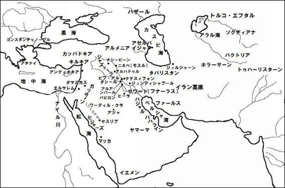
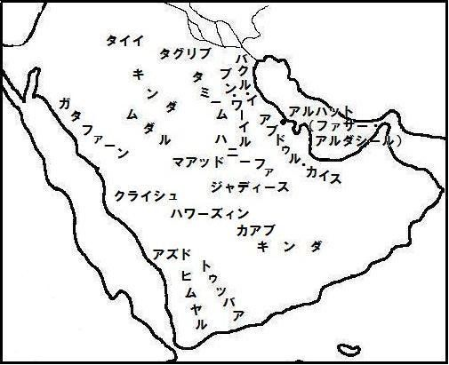

| タバリーによるシャーナーメ・下巻: 古代ペルシャ諸王の歴史ものがたり | |
| アブー・ジャアファルッ・タバリー | |
| (2014) | |

目次
サーサーン朝の諸王
アルダシール・アルタクセルクセス
サーブールッ・ジュヌード（軍人サーブール）・サーブール一世
フルムズ一世
バハラーム一世
バハラーム二世
バハラーム三世
ナルスィー
フルムズ二世
サーブール・ズル・アクターフ（双肩の男）
アルダシール二世
サーブール三世
バハラーム四世
ヤズドガルド
バハラーム・ジュール
ヤズドガルド二世
ファイルーズ（ペローズ）
バラーシュ
コーバーズ一世
（地上初の共産主義運動・マズダグ主義）
アラブとコーバーズの物語
キスラー一世アヌーシルワーン
アヌーシルワーンのそのほかの物語
フルムズ
キスラー・アバルウィーズ
ペルシャ王国滅亡の預言
コーバーズ・シールーイ
アルダシール三世
シャフルバラーズ
ブーラーン
ジュシュナス・ディフ
アーザルミードゥフト
キスラー三世
フッラザーズ・ホスロウ
ファイルーズ二世
ファッルフザーズ・ホスロウ
ヤズドガルド三世
世界の年代
サーサーン朝の諸王
アルダシール・アルタクセルクセス
アレクサンドロスがバビロンの地を征服してから、キリスト教徒と最初の啓典の所有者（ユダヤ教徒）らが伝えるところによれば、五百二十三年が経過した時、あるいはゾロアスター教徒によれば二百六十六年が経過した時、アルダシール（アルタクセルクセス）・イブン・バーバク・シャー（ヒールの王）・イブン・小サーサーン・イブン・バーバク・イブン・サーサーン・イブン・バーバク・イブン・ミフルフルムズ・イブン・サーサーン・イブン・バーマン・シャー・イブン・イスファンディヤール・イブン・ビシュタースブ・イブン・ルフラースブ・イブン・カユージー（カイオジー）・イブン・カイマヌーシュが立ち上がった。
ほかの系譜によれば彼は、アルダシール・イブン・バーバク・イブン・サーサーン・イブン・バーバク・イブン・ザラール・イブン・ビハーアフリーズ・イブン・大サーサーン・イブン・バーマン・イブン・イスファンディヤール・イブン・ビシュタースブ・イブン・ルフラースブだった。
彼は、彼の主張によれば、アレクサンドロスと戦った、彼の父方の従兄弟ダーラー・イブン・バーマン・イブン・イスファンディヤールのために、血の復讐を果たすためファールスで立ち上がった。彼は、彼の主張によると、王権を正統な所有者、諸侯（ムルークッ・タワーイフ、ディアドコイ）の前の、彼の前任者と父祖の時代にそれを一貫して継承していた人びと（ペルシャ王家）に回復し、再び一人の主権者、君主に統一することを望んだ。
彼はイスタフル行政区の、ヒールの辺境地方に位置している、イスタフル地方のティールーディと呼ばれる村に生まれたと言われている。彼の祖父サーサーンは非常に勇猛で強者だったので、一人で八十人のイスタフルの豪傑と戦い全員を敗北させたほど勇敢で並はずれた戦士だった。サーサーンの妻はバーズランジーンと呼ばれたファールスの王族の出身だった。彼女の名はラームビヒシュトといい、才色を兼備していた。サーサーンはアナーヒーズの神殿と呼ばれたイスタフルの拝火神殿の管理人だった。彼はまた狩猟と乗馬を愛好した。
ラームビヒシュトはサーサーンに息子のバーバクを産み、彼の頭髪は生まれたときすでに親指と小指の間の長さほどだった。彼は健全な判断ができる年齢に達すると、父の後を継承して民の指導者となった。そして彼に息子のアルダシールが生まれた。その当時のイスタフルの支配者は、ヒシャーム・イブン・ムハンマド（・イブヌル・カルビー）にさかのぼる伝承を典拠として私に伝えられているところによればジューズヒルと呼ばれ、またほかの人びとによればジュズヒルという、バーズランジーン王家の者だった。
このイスタフルの支配者はティーラーとよばれる宦官を家臣としており、彼はこの宦官をダーラーブジルドの城主に任命した。アルダシールが七歳になったとき、彼の父バーバクは息子をアルバイダーウに居を構えていたジュズヒルのところに連れて行き、息子をジュズヒルの前に立たせて、その少年を（子の無い）ティーラーの養子とし、将来、ティーラーに代わる城主にして頂けないかとジュズヒルに頼んだ。ジュズヒルはこの要請に同意し、この要請の条件を少年のために公式の封印文書に記録させた。バーバクは息子をティーラーに会わせ、ティーラーは彼を丁重に迎え、自分の息子として引きとった。
ティーラーが亡くなるとアルダシールは彼の職務を引き継ぎ、見事にその任務を果たした。占星術師と占い師の集団が、彼は幸運な星の下に生まれ、世界を支配するようになると彼に告げた。それ以後、アルダシールはこの予言の成就を追求して、謙虚でおごり高ぶらない態度で行動し、日々善行に励んで成長を続け、天使が彼の枕元に座り、神がペルシャ全土の支配権を彼にお授けになるので、それに備えるように、と彼に告げる夢を見たと伝えられている。目覚めた彼はその夢に喜び、身体中にそれまで経験したことがなかった力と強さがみなぎるのを感じた。
彼が最初にとった行動は、ダーラーブジルド地方のジューバーナーンと呼ばれる場所に進出し、ファースィーンという名のそこの支配者を滅ぼしたことだった。次に彼はクーナスと呼ばれる場所に進み、マヌーシフルと呼ばれるそこの支配者を殺し、そしてルールウィール呼ばれる場所に行き、そこでダーラーという名の支配者を殺した。彼はこれらのすべての地に忠実な代官を任命した。それから彼は父に書簡を送り、彼がやり遂げたことを書き、アルバイダーウにいたジュズヒルに反旗を翻すよう呼びかけた。
バーバクがこれに応えジュズヒルを殺してその王冠を奪うと、バーバクは高原地帯とその周辺各地の（アルサケス朝、パルチア）王だったパハラウィー・アルダワーン（アルタバヌス五世）に書簡を送り、ジュズヒルの王冠を息子のサーブールの頭上に戴冠する許可を謙虚に請願した。しかしアルダワーンは激しい言葉使いで彼に返信し、彼と息子のアルダシールは、民を殺害したため反逆者と見なされると告げた。しかしバーバクはこれを無視した。
そのころバーバクは亡くなり、息子のサーブール・イブン・バーバクが王冠を戴き、父に代わって王位に就いた。彼はアルダシールに書簡を送り、彼の宮廷に参上するように促したが、アルダシールは応じなかった。このためサーブールはアルダシールの反抗的な態度に怒り、アルダシールと戦うために軍勢を召集してその先頭に立って出陣した。
彼はイスタフルを出発し、ダーラーブジルドに向かう道にあるフマーイの館で宿営したが、館の一部が彼の頭上に崩落し、彼の命を奪った。この知らせがアルダシーに届くと、彼はイスタフルに向かった。アルダシールはそこで彼の何人かの兄弟に会い、何人かは彼より年長だった。それでも彼らは集まって王冠と王座を運び入れ、すべてをアルダシールに献上した。彼は王冠を戴き王座に座った。
アルダシールは強力で明敏な政策によって統治を開始した。彼はさまざまな人材を多様な役職に就け、アバルサームと呼ばれる人を宰相の地位に任命し、彼に惜しみなく贈物を与え数々の職責を課した。彼はファーフルという名の人を（ゾロアスター教の）最高聖職者※に任命した。彼が多数の人たちを殺していたことから、彼は彼の兄弟たちと彼らの取り巻きによる、彼の暗殺計画の噂を聞いた。
※西暦二三〇年ころ、ゾロアスター教の国教化。
ダーラーブジルドの民が彼に反乱を起こしたとの知らせが彼に届き、彼はそこに向かって引き返し、多数の市民を殺してそこを制圧した。彼はバラーシュと呼ばれる王が支配するキルマーンに進んだ。アルダシール自身が参戦した凄惨な戦闘の末、彼はバラーシュを捕虜としその街を制圧した。アルダシールは同じくアルダシールという名の息子の一人をキルマーンの総督に任命した。
ペルシャ湾の沿岸地方を支配していたのは、ブターンブーフトと呼ばれた王で、神として崇められていた。アルダシールは彼に向って進撃し、自ら剣で彼を二つに裂いて殺し、彼の側近の者たちを敗死させ、彼らの地下貯蔵庫に蓄えられていた膨大な宝物を運び出した。
アルダシールは、アルダシール・フッラ行政区にあるアバルサースの王のミフラクと、彼の同盟者の支配者らに書簡を送り、恭順するように彼らに呼びかけた。彼らがそれを拒絶すると、アルダシールは彼らを攻撃してミフラクを滅ぼした。それからアルダシールはジュール（グール）に行き、そこに街の礎を建設し、アッティルバールと呼ばれる宮殿・拝火神殿の建設を開始した。
アルダシールがこれらの活動に従事していると、アルダワーンの使者が書簡を携えて到着した。そこでアルダシールは邦の指導者たちを招集して、彼らの前で文書を読み上げた。
内容は次のようだった、「お前は分不相応に振る舞い、自分自身に破滅をもたらした、クルド族の天幕の中で育ったクルド※よ。誰がお前に王冠をかぶることを許し、お前がかき集めた全領土と、お前が征服したそれらの支配者と民を所有することを、誰がお前に許可したのか。お前が砂漠の中に築く街を建設するように、誰がお前に命じたのか」――アルダワーンはジュールの街を意味している――「我らが建設を進めることをお前に許してから、その砂漠に十ファルサフ※四方の街を建設し、『ラーム・アルダシール（アルダシールの喜び）』と呼べ」。
※遊牧の部族クルドを比喩的に、盗賊の意味で使っている。
※ファルサフ、あるいはパラサンゲスは約五・三キロ。
アルダワーンは続けて、アルアフワーズの王をアルダシールに対して派遣し、アルダシールを捕えて連れ帰るように命じたと告げた。アルダシールは答えた、「我が戴いた王冠を我に授け、我が征服した土地の支配権を我に与え、我が殺した偉大な君主、諸王を征服するために我を支援したのは神である。我が建設し『ラーム・アルダシール』と名付ける街について言えば、我はお前を捕縛し、お前の首と宝物を我がアルダシール・フッラに建造した拝火神殿に運ぶことを熱望している」。
それからアルダシールはイスタフルに向かって出立し、アバルサームを（総督として）アルダシール・フッラに残留させた。長い時を経ずして、アルアフワーズの王が現れたが戦闘に敗北して退却した、と報告したアバルサームからの書簡が彼に届いた。するとアルダシールはイスファハンに進出、そこの王シャーズ・サーブールを捕えて殺し、そのあとファールスに帰還し、さらにまたアルアフワーズの王ニールーファッルと戦うために出陣、次いでラーム・フルムズの保護領のアッラジャーン、サンビール、ターシャーンにも進出、そしてスッラクに進撃した。
彼はこれらの地域に到達すると、家臣団と共にさらに前進してドゥジャイル（カールーン川）の岸に至り、そこの街を制圧して新たにスークル（市場）・アフワーズを建設、そして戦利品を山積みにしてファールスに凱旋した。彼は再びファールスから出て、ジリーとカーザルーンを経由する道を通ってアルアフワーズに戻り、そしてアルアフワーズからマイサーンに進んで、そこの支配者を滅ぼしカルフ・マイサーンを建設した。
それから彼はファールスに向かい、アルダワーンに書簡を送って、両者が戦う場所を決めるように求めた。アルダワーンは、ミフル月の末日にフルムズジャーンとよばれる平原で、アルダシールと会うと返信して来た。しかしアルダシールは、平原の有利な陣地を確保するために、約束の日時より早くその場所に到着した。彼は塹壕を掘って彼と彼の軍勢を防御し、そこの泉を占拠した。アルダワーンが彼と戦うために現れ、両軍は戦闘隊形をとった。
アルダシールの息子サーブール（シャープール）は、すでに父を援護するために前進していた。激しい戦闘が展開され、その過程でサーブールは、自らアルダワーンの書記ダーズブンダーズを倒した。アルダシールは陣地の中から前線に進出し、アルダワーンを倒した。アルダワーンの軍勢の非常に多数が殺戮され、生存者は戦場から敗走した。アルダシールは下馬し、アルダワーンの首を足で踏みつけたと伝えられている。この戦闘の日、アルダシールはシャーハンシャー（諸王の王）の称号を授けられた。
彼はそこからハマダーンに向かい武力でそこを征服、またアゼルバイジャン、アルメニアの高原地帯とアルマウスィル（モスル）も征服した。そして彼はアルマウスィルからスーリスターン、つまりサワードに進み、そこを彼の領土とした。彼はティグリス河の岸、クテスィフォンの反対側、西岸に街を建設しビフ・アルダシールと名付けた。彼はこれにビフラシール、アッルーマカーン、ナフル・ダルキート、クーサー、ナフル・ジャウバルを加えて州に編成し、それらに地方総督を任命した。
そして彼はサワードからイスタフルに戻り、それからスィジスターン、そこからジュルジャーン、そこからアバルシャフル、マルウ（メルブ）、バルフ、フワーラズム、ホラーサーンの最も辺境の地に進み、それからマルウに戻った。彼は多数の民を滅ぼし、指導者たちをアナーヒーズの拝火神殿に派遣した。
そして彼はマルウからファールスに帰還し、ジュールを彼の本拠地とした。クーシャーン、トゥーラーン、マクラーンの諸王の使節が彼を訪問し、恭順の意を示した。アルダシールはジュールからアルバハラインに進み、その王サナトゥルクを包囲した。サナトゥルクは窮地に陥り、ついに城壁から身を投げて滅亡した。アルダシールはアルマダーインに帰り、そこの支配を確立し、息子のサーブールを世襲の王位に就かせた。
アルダシール・フッラのペルシャ湾岸の辺境地帯の一つ、クージャラーン地区のアラールと呼ばれる村に、神のように崇められ尊敬され、富、財宝、軍勢を保有していた女王がいたと伝えられている。アルダシールは彼女の聖職者階級守護者と戦い彼女を滅ぼし、彼女の莫大な富、財宝を戦利品として獲得した。
彼は八つの街を建設したと伝えられている。それらはファールスのアルダシール・フッラすなわちジュール、ラーム・アルダシール、リーウ・アルダシール、アルアフワーズのフルムズ・アルダシールすなわちスークル・アフワーズ、サワードのビフ・アルダシールつまりアルマダーインの西側と、アスターバース・アルダシールつまりカルフ・マイサーン、アルバハラインのファサー・アルダシールつまりアルハットの街、そしてアルマウスィルのブーズ・アルダシールつまりハッザーである。
アルダシールは権力を掌握した時、雄弁に表現した書簡を諸侯に送り、彼らに対する彼の正統な権力を主張して服従するように呼びかけた、と伝えられている。彼は人生の終わりを迎えた時、後継者に遺言を残した。彼は生涯を通して称讃の的であり、戦争で勝利した。彼の軍隊は敗北したことがなく、彼の軍旗が倒されたことはなかった。
彼は彼の王国の周辺の地のすべての支配者を制圧し辱め、彼らの邦を完全に征服した。彼は邦を州に分割し、街を配置し、王国にさまざまな地位と職務を制定し、農地の拡大と作物の増産に尽力した。彼の統治は、彼がアルダワーンを滅ぼしてから彼自身の死まで十四年続き、あるいはほかの人によると十四年と十カ月続いた。
ヒシャーム・イブン・ムハンマドにまでさかのぼる伝承を典拠として、次のように私に伝えられている。アルダシールはイラクの軍事的、政治的支配権を握るために、ファールスの戦士の軍勢を率いて進撃した。彼はそこでアラム人の王バーバーに遭遇し、またアルダワーン人の王アルダワーンにも遭遇した。ヒシャームは次のように伝えている。アラム人はサワードのナバタイ人（ヒーラのタンヌーフ朝）で、アルダワーン人はシリアのナバタイ人（ガッサーン朝）である。
彼（ヒシャーム）は続けた。この二つの集団は支配権をめぐって争っていたが、彼らは同盟してアルダシールと戦うことで合意した。そこで二つの集団は互いに助け合いながらアルダシールと戦い、一つの集団がある日に戦い、もう一つの集団が別の日に戦った。バーバーの戦闘の日、アルダシールは彼に抵抗することができなかったが、アルダワーンの戦闘の日になると、彼はアルダシールに抵抗することができなかった。
これに気づいたアルダシールは、バーバーはアルダシールと戦わず、アルダシールはアルダワーンとの戦いに専念し、一方、アルダシールはバーバーに彼の領土とその中のすべてを支配させることを条件に、バーバーと和平協定を結んだ。このようにしてアルダシールはアルダワーンとの戦いだけに専念し、たちまちのうちに彼を滅ぼし、彼の領土と保護領を征服した。
次にアルダシールは、バーバーに服従を強制した。かくしてアルダシールは、イラク領の支配を確立した。イラクの支配者はすべて彼に服従した。ついに彼は彼に抵抗していたそこのすべての民を支配下に置き、彼が望むことと、彼の計画に基づくことを、たとえそれらが彼らに不快なことであっても、すべて彼らに強制するようになった。
サーブールッ・ジュヌード（軍人サーブール）、サーブール一世
アルダシール・イブン・バーバクが亡くなると、彼の息子サーブール（シャープール）がペルシャの王位を継承した。
アルダシール・イブン・バーバクは王権を掌握した時、彼の祖先である大サーサーン・イブン・アルダシール・イブン・バーマン・イブン・イスファンディヤールがたてた、いつの日か王権を獲得したならば、アシャク（アシャカーン）・イブン・フッラの子孫を一人たりとも生かしておかないという誓いに従って、諸侯に属していたアルサケス王朝に大殺戮をもたらし、彼らを滅亡させた。
サーサーンは彼の子孫にもこの義務を課し、遺言の中で、もし彼らが王位を継承したならば、あるいはいつの日にか王権を獲得したならば、アルサケス王朝の子孫を一人たりとも生かしておいてはならないと命じた。これを成就した最初の子孫がアルダシール・イブン・バーバクだった。こうしてアルダシールは彼の祖先のサーサーンの意思に従って、男女の区別なく一人残らずアルサケスの一族の大殺戮を行った。
アルダシールは王宮で見つけた一人の少女を除いて、一人も生かしておかなったと伝えられている。彼は彼女の美しさに衝撃を受け――彼女は実際に殺害された王の娘だった――、彼女の身元を尋ねた。彼女は、王の妻の一人の女中だ、と答えた。また彼は彼女が処女なのか、それとも結婚したことがあるのか聞いた。彼女は彼に処女だと答えた。そこで彼は彼女と性交して彼女を側女の一人とし、間もなくして彼女は彼によって身ごもった。妊娠によって彼の愛情の中に占める彼女の立場が強固となり、彼女の身の安全が確実になったと感じた彼女は、彼女は本当はアシャクの子孫の一人であることを彼に告げた。
すると彼は彼女を疎んじるようになり、非常に高齢で経験豊かな人だったハルジャンド・イブン・サーム（アバルサーム）を呼び、彼女はアシャクの子孫の一人であると知らせた。アルダシールは続けて言った、「たとえ彼女が余の心にとって大切な人であっても、そなたがよく理解しているように、我らの父祖サーサーンの誓いに忠実であることが我らの義務である。ゆえに彼女を連れて行き殺してしまえ」。
老人は彼女を殺すために連れて行った。彼女は老人に自分が身ごもっていると告げた。彼が彼女を産婆に連れて行くと、産婆は彼女が本当に身ごもっていることを認めた。彼は彼女を地下室に隠した。そして彼は自分の性器を切除して箱に入れ、封印した。彼は王のもとに戻った。王は彼に言った、「どのようにしたか」。彼は「私は大地の奥深くに彼女を委ねました」と答えてその箱を王に渡し、それを王の印章で封印し、宝物庫の中に保管するよう王に願い、アルダシールはそのようにした。
少女は男児を出産するまで老人と共に暮らした。老人は男児が成長して教育を受け、正しい振る舞いを学び終えるまでは、王の息子にその地位にふさわしくない名を付けることも、彼がまだ幼いときに彼の真実の地位を彼に教えることも望まなかった。
老人はその男児が生まれた瞬間の星相を測定して、彼の運勢を占った。その結果から老人はその男児が実際に支配者となることを知り、そこで老人は、将来、彼がすべてを知ることになったとき、名前が彼の性質を表すのか、あるいは個人の名を示すかを彼が選択するように、性質と個人の真の名を同時に表す名前を彼に付けた。
こうして老人は彼をアラビア語で「イブヌル・マリク（王の息子）」を意味するシャー・ブールと呼び、彼はこのように名付けられた最初の人だった。この人がアルダシールの息子、サーブールッ・ジュヌードである。一方、ほかの権威者は、老人は彼をアラビア語で「アシャクの息子」を意味し、男児の母の先祖に由来するアシャー・ブールと呼んだと言っている。
アルダシールに子の無い状態が数年続いた。男児を養育していたこの忠実な老人は王に謁見し、王が深く悲しんでいることを知った。老人は王に尋ねた、「何があなたをそのように悲しませているのですか、おお、王よ」。アルダシールは答えた、「どうして余が悲しまずにいられようか。余は自らの剣で東と西の間のすべてを獲得し、望むところをすべて征服し、この王国、余の父祖たちの王国を完全に支配しているにもかかわらず、余は余の権力を継承する子孫を一人も残さず、将来にわたって永続する余の王権の足跡を残すことなく、いずれ死なねばならない」。
老人は王に言った、「神があなたに喜びを授けられますように、おお、王よ、そしてあなたに長寿が授けられますように。私は清らかで気高いあなたの息子をお世話しております。私があなたに託し、あなた自身が封印した箱を持ってくるように命じて下さい、そうすれば私はあなたにその決定的な証拠をお見せします」。アルダシールは箱を持って来させた。彼は彼の印章の刻印を確かめ、それを割って箱を開けた。彼はその中に老人の性器と文書を見つけた。
文書に次のように記されていた、「アシャクの娘が、シャーハンシャー・アルダシールによって真実、懐妊したことを我らが確信し、同時にアルダシールが懐妊した彼女を殺すように我らに命じたとき、我らは王の高貴な種を破壊することは合法ではないと考えた。そこで我らは、君主が我らに命じたように、大地の奥深くに彼女を委ね、中傷者が彼女に対していわれのない虚偽を決して捏造しないように、（性器の切断によって）我ら自身をあらゆる疑いから解放した。我らは正しくまかれた種が、再びその血族に結び付くまで守護することを、最優先の任務とした。これはかくかくしかじかの年の、かくかくしかじかの時に起きたことである」。
このすべてを聞いたアルダシールは、その少年と全く同じ外見と身長の百人――ほかの人びとによれば千人――の若者の中にその少年を入れ、目立つ特徴の服装、身長、振る舞いの者を除いて、彼らの集団をアルダシールの前で行進させるように老人に命じた。老人は命じられた通りにした。アルダシールがこの若者の集団を見ると、彼は本能でたちまち群れの中から自分の息子を識別し、王に対して息子に関するいかなる示唆も示されることなく、またいかなる手がかりも与えられることなく息子を発見して喜んだ。
そして彼は王宮の控えの間に彼ら全員を集合させるように命じた。彼らはポロの杖を与えられてボールで遊び始め、王は正殿の中の王座に座っていた。ボールは王が座っていた正殿の中に転がって行った。若者全員が正殿の間に入ることを躊躇したのに、サーブールだけは若者たちの間から進み出て中に入った。
アルダシールはサーブールがたじろがず王の前に進み出たこと、彼の大胆な行動から――アルダシールが彼を最初に見たときに感じたアルダシールの心中のサーブールを受け入れる感情、またアルダシールが宮廷のほかの者に抱いたことのない彼に対する愛情のこもった心情にかてて加えて――、彼が本当に自分の息子であると判断した。
アルダシールはペルシャ語で彼に聞いた、「そなたの名前は何という」。若者は答えた、「シャー・ブール」です。アルダシールは声を上げた、「王の息子」。若者が疑いなく自分の息子であることを確信したアルダシールは、彼を公式に認知し、自分の後継者として迎え入れた。
ペルシャの民は、王権がサーブールに移譲される前から彼の父の生涯を通して、サーブールの知能、美徳、知識だけでなく、戦闘での勇敢さ、雄弁、機知、臣民に対する愛情と寛大さを身をもって経験していた。王冠が彼の頭上に載せられると、彼は邦のすべての偉大な人物を彼の前に招集した。
すると彼らは彼の長寿のために祈願し、彼の父と、父の卓越した徳性について長々と言及した。サーブールは、彼らが彼の父について語ったこと以上に彼にとって喜ばしいことはなく、そのほかのどのような賛辞よりも、彼による善政を請願することができると彼らに告げ、彼らに善政を約束した。
彼は宝物庫の財産を惜しみなく臣民に与え、彼がそれを受け取るにふさわしいと考えた人びとに――有力者、戦士、窮乏している人びとに――配分するように命じた。彼は属州と遠隔地の総督に書簡を送り、彼らの管轄下にある富についても同様に対応するように書いた。
このようにして彼が、遠近の人びと、身分の高い人低い人、貴族と平民に富と善政を施したので、すべての民が善政の恩恵を被り、彼らの生活水準は向上した。彼は民衆に代官を任命し、彼らと一般平民を注意深く監視した。こうして彼の善政の功績が明らかとなり、彼の名声は広く知れ渡り、彼はすべての君主の中で際立った存在となった。
彼の統治の十一年目、彼はローマ軍の前線基地があったナシービーンに進撃し、かなり長い期間にわたってそこを包囲したと伝えられている。しかしそのとき彼は、ホラーサーンの一地方で彼自身が対応しなければならない事件が発生したとの知らせを受けてそこに向かい、そこの秩序を回復してからまたナシービーンに戻った。
その街の城壁が自然崩壊し、サーブールのために隙間が開き、そこから彼が侵入することができたと彼らは主張している。彼は兵士を殺し、女子供を捕虜とし、そこでローマ皇帝のために貯蔵されていた莫大な富を捕獲した。それから彼はシリアとローマ領を横断し、多数の街を征服した。それらの街のうち彼はキリキアとカッパドキアを征服し、たまたまそのときアナトリアにいたヴァレリアヌスと呼ばれるローマ皇帝を、アンティオキアの街で包囲したと伝えられている（二六〇年ころ）。
サーブールはヴァレリアヌスを捕虜とし、彼と彼の多数の軍勢をジュンデイ・サーブール（ジュンディシャプール）に移送してそこに居住させた。サーブールは、幅が千キュービット（肘から指先までの長さ）に達するトゥスタルのダム建設のために、彼らを強制労働に従事させたと伝えられる。
ローマ皇帝は彼がアナトリアから連れてきた軍団の支援によってダムを建設し、ダムが完成したならば彼を解放すると、サーブールに約束させたと言われている。サーブールはヴァレリアヌスに多額の賠償金を課し、彼の鼻を切断して彼を解放したと伝えられ、ほかの者はサーブールは彼を殺したと主張している。
タクリートに面したティグリスとユーフラテスの間にアルハドゥルと呼ばれる街があり、そこにアッサーティルーンと呼ばれるジャラーミカ出身の男がいた。彼は詩人のアブー・ドゥアードル・イヤーディーが詠んだ男である。
「我はアルハドゥルからいかにして死が訪れたか知っている、
そこの民の指導者、アッサーティルーンに」。
しかしアラブは彼をアッダイザンと呼ぶ。彼はバー・ジャルマー（ジャラーミカ）出身の民と伝えられているが、ヒシャーム・イブヌル・カルビーによれば、彼はクダーア族のアラブで、彼の系譜はアッダイザン・イブン・ムアーウィヤ・イブヌル・アビード・イブヌル・アジラーム・イブン・アムル・イブヌル・ナカーウ・イブン・サーリフ・イブン・フルワーン・イブン・イムラーン・イブヌル・ハーフィ・イブン・クダーア、彼の母ジャイハラはタズィード・イブン・フルワーン族の出身で、彼はもっぱら母の名前（イブン・ジャイハラ）で知られている。
イブヌル・カルビーは続けて、彼はアッジャズィーラの地の支配者であり、多数のアビード・イブヌル・アジラーム族とそのほかのクダーア族を支援者として抱えていた、と主張している。彼の王国はシリアにまで広がっていた。
サーブール・イブン・アルダシールがホラーサーンの地に離れているとき、アッダイザンはサワードに侵入した。サーブールが不在から戻ると、アッダイザンの企みを知らされた。アムル・イブン・イラーフ・イブヌッ・ジュダイイ・イブヌッ・ダハーウ・イブン・ジュシャム・イブン・フルワーン・イブン・イムラーン・イブヌル・ハーフィ・イブン・クダーアはアッダイザンの行動に関連して次の詩を詠んだ。
「我らはイラーフの軍勢と共に彼らに遭遇した、
そして頑強な蹄の種馬と共に。
ペルシャ人は我らの手によってみせしめの懲罰を受けた、
そして我らはシャハラズールのへールバズ（聖職者）を殺戮した。
我らは遠方からペルシャ人に向かって進んだ、
アッジャズィーラの猛り狂った軍勢と共に」。
アッダイザンの行動を知らされたサーブールは、彼に向って進撃しアッダイザンの城塞の前で停止、アッダイザンはその中に籠城した。イブヌル・カルビーは、サーブールはその城塞を四年間包囲し続けたが、それを破壊することも、アッダイザンを手にかけることも全くできなかったと主張している。しかしアルアーシャー・マイムーン・イブン・カイスは彼の詩の中で、サーブールはただ二年その城塞を包囲しただけだったと言及して詠んだ。
「お前たちはアルハドゥルの民を見なかったか、安楽な人生を享受した民を、
しかし安楽な人生に恵まれた民が、永遠にそれを楽しんだことがあったか。
シャープールッ・ジュヌード（軍勢）はその前に二年留まった、
そこで戦闘の槌鉾を振るいながら。
しかし彼（アルハドゥル）の主は、彼に安全を賜った、
それでも彼の要塞は永久に堅固ではない。
彼の主が彼の行動を見たとき、主は彼に激しい一撃を加えた、
主がいなければ復讐できない。
彼は彼の党派に呼びかけた、『お前の問題に対処せよ、
それはすでに悪化している、
お前自身の剣によって高貴な死を遂げよ、
我は見る、真の戦士が、
死の重荷を平然と引き受けるのを』」。
生理中だったアンナディーラと呼ばれるアッダイザンの娘が、当時の月経中の女の習慣に従って、街の郊外に隔離されていた。一般に伝えられているところによれば、ちょうどサーブールが彼の年代の最も美男の男だったように、彼女は彼女の年代の最も美しい女だった。二人は出会い熱愛するようになった。彼女は彼にメッセージを送り語った、「もし私があなたに、この街の城壁を破壊し、あなたが私の父を殺す方法を教えたならば、あなたは私に何を下さるでしょうか」。
彼は答えた、「お前が望むものを何でも与える。そして余はお前をほかの妻たちの最上位の位に就け、彼女らを除外して余に最も近い配偶者としよう」。彼女は彼に指示した、「銀色をした首輪の鳩をとって、その足に青い目の処女の生理の血を塗って下さい。鳩を放せばそれは街の城壁の上にとまり、城壁は崩壊するでしょう」。その場所は実のところ街の御守りであり、これしか街を破壊することができなかった。
サーブールはその通りにして、街を攻撃する準備を整えた。アルハドゥルの王の娘は続けて言った、「私が衛兵にワインを飲ませ、彼らが地上に横たわったならば、彼らを殺して街に入って下さい」。彼がその通りに実行すると街の防衛は完全に崩壊し、彼は突入して街を占領、その日のうちにアッダイザンを殺した。アッダイザンと共にいたクダーア族の分派は全滅し、そのように知られる分派は現在は残っていない。フルワーン族のいくつかの分派も同様にして滅亡した。
アッダイザンと共にいたアムル・イブン・イラーフは詠んだ。
「お前たちは悲嘆に満たされなかったか、その知らせを受け取ったとき、
アビード族の指導者の身に起きたことについて、
アッダイザンと彼の兄弟の殺害について、
そしてタズィードの男たちについて、
よく騎兵の一団と共に出撃していた。
シャープールッ・ジュヌードは、戦闘象と共に彼らを攻撃した、
飾り立てられた、そして英雄的な戦士と共に、
そして彼は要塞の柱の石のブロックを破壊した、
その土台の石は鉄のブロックのような」。
サーブールは街を廃墟とし、アッダイザンの娘アンナディーラを伴って出立し、アイヌッ・タムルで彼女と結婚した。彼女のベッドは生糸を詰め込み、繊細に織られた絹織物であったにもかかわらず、彼女は一晩中ベッドの不快さについてやかましく不平を言ったと伝えられている。彼女を悩ませているものを探したところ、何と、織物の折り目の一つにからみついた（結婚式の花輪に使われた）銀梅花の葉っぱが、彼女の腹部を刺激していることが判明した。
（イブヌル・カルビーは）続けた。彼女の肌が非常に繊細だったので、骨の髄まで透けて見えた。そこでサーブールは彼女に聞いた、「教えてくれ、お前の父はお前にどんな食べ物を与えたのか」。彼女は答えた、「クリーム、骨の髄、処女蜂の蜜、そして最高級のワインです」。
彼は声を上げた、「お前の父にかけて、我はお前の父よりも後にお前を知ったのに、我はお前が言ったそのような食べ物を与えたお前の父よりも、お前にとって大切な人になった」（そのようなわがままな女は許せない）。彼は男に野生の暴れ馬に騎乗するように命じ、彼女の頭髪を馬の尻尾に結びつけ、馬を走らせて彼女を引き裂いた。
ある詩人はこれについて詠んだ。
「城塞はアンナディーラのために荒廃した、
同様にアルミルバーウも彼女のために、そしてサルサール川の堤防も」。
詩人たちはこのアッダイザンについて広く詠み伝えている。アディーユ・イブン・ザイドも彼の詩で言及した。
「アルハドゥルの支配者はどこにいる、かつてそこを建設した、
そしてティグリスとハーブールの税金がその人のために徴収された。
彼はそこを大理石で堅固に据え、漆喰で覆った、
それでも鳥がその尖塔に巣の場所を見つけた。
凶運にも彼は驚かなかった、それでも王権は、
彼から衰退し、彼の宮殿は見捨てられた」。
またサーブールはマイサーンにシャーズ・サーブールを建設したと伝えられ、それはアラム語でディーマーと呼ばれている。
サーブールの時代にマーニー・ズィンディーク（異端者マニ、マニ教の予言者マニ、二一五―二七三年）が出現した。
サーブールが街の礎を建設するためにジュンデイ・サーブールに進むと、彼はそこでビールと呼ばれる老齢の男に出会った。そこで彼はその老人に尋ねた、「この場所に街が建設されることは許されるか」。ビールは答えた、「私の年齢にもかかわらず、私に書く能力が授けられるならば、あなたがここに街を建設することは許される」。サーブールは、「よかろう、そなたが可能性を否定する二つの能力がそなたに可能となる」と言って、街の見取り図を描き、一年以内に老人に書くことと、数を数える能力を教えるように命じて、老人を教師に託した。
教師はビールと共に閉じこもり、髪の毛と髭が彼の注意をそらさないようにビールの頭と髭を剃り、それから彼を徹底的に教え始めた。そして教師がビールを王の前に連れ出したとき、ビールは有能で巧みな経理となっていた。サーブールは街の建設費用の計算業務をビールに担当させ、これらの支出の会計処理手続きを整備させた。
王はこの街とその周辺を独立の行政区として画定し、「アンティオキアに勝るサーブールの街」を意味するビフアズ・アンディーウィ・サーブールと名付けた。これが今日、ジュンディシャプールと呼ばれている街であり、しかしアルアフワーズの人びとは、この街の建設を統括した人の名前にちなんでビールと呼んでいる。
サーブールに死の時が近づくと、彼は息子のフルムズを支配者に任命し、息子に遺言として戒めを与え、それに従って行動するように命じた。サーブールの統治の長さについては見解が異なっている。ある権威者らはそれを三十年と十五日とし、ほかの権威者は三十一年六カ月十九日としている。
フルムズ一世
サーブール・イブン・アルダシール・イブン・バーバクのあと王位を継承したのは、彼の息子フルムズ（ホルミズド）一世である。彼は「勇者」と呼ばれ、体格と容姿はアルダシールに似ていたが、洞察力と政治手腕ではアルダシールに対抗できなかった。それでも戦闘での不撓不屈の精神、勇気、たくましい体格は傑出していた。
彼の母は、伝えられるところによれば、アルダシールがアルダシール・フッラで殺した（アバルサースの）ミフラク王の娘だった。これはアルダシールの占星術師が、ミフラクの子孫の中から王権を獲得する人が出現すると、アルダシールに予言したという事実に基づいている。これを聞いたアルダシールは、ミフラクの子孫を探し出して彼らを殺した。しかしフルムズの母、聡明で美しく、完璧な容姿で、健康な心身の人は、密かに砂漠に逃れ羊飼いの庇護を受けた。
ある日、サーブールは狩りに出かけた。彼は懸命に獲物を追いかけ喉の渇きを覚えた。そのとき、フルムズの母が避難した天幕が彼の視野に入った。彼はそこに向かって行ったが、羊飼いたちは不在だった。彼は水を求め、その女が彼に水を与えた。彼は彼女の際立った美しさ、優雅な身のこなし、高貴な顔に気づいた。間もなくして羊飼いたちが帰って来た。
サーブールが彼女について彼らに尋ねると、一人の羊飼いが彼女は自分の家族の一員であると名乗り出たので、サーブールは結婚するために彼女を与えて欲しいと羊飼い頼んだ。羊飼いがこれを受け入れ、サーブールは彼女を伴って自分の野営に行き、身体を清め、ふさわしい衣装をまとい、化粧するように彼女に命じた。彼は彼女と性交することを望んだ。
しかし彼が彼女と二人だけになり、男が女に当たり前に求めることを彼女に求めたが、彼が彼女に近づくと彼女は退いて、彼が不快に感じるほどの力で身体を彼から守り、彼はその力強さに驚嘆した。彼女がしばらくの間このように抵抗したので、彼は怒りその理由を聞いた。彼女はミフラクの娘であり、サーブールをアルダシールから守るそのためだけに、彼女がしたことをしたのだと彼に告げた。彼は、彼女の真実の立場を隠す、と彼女に約束して彼女と性交した。彼女はフルムズを産んだが、サーブールはすべてを隠した。
フルムズが何歳かに成長したころアルダシールが外出し、サーブールに何か伝えたいことがあってサーブールの住居に立ち寄った。アルダシールは突然、家の中に入って行った。アルダシールがくつろいでいると、そのころたくましい少年に成長していたフルムズが現れた。少年は遊んでいたポロの杖を手にして、ボールを追いかけて大声を上げていた。
アルダシールの眼が少年にとまると、アルダシールを混乱させ、整った容貌、頑丈な体格、そのほかのアルダシール家に傑出している身体的な特徴といった、王家の一族に明らかな一定の特性のゆえに、アルダシール家のペルシャ王権の特質は隠すことができず、誰もが見過ごすことができなかったため、アルダシールは少年の中に自分の家族と似ているものを見い出した。
アルダシールは少年を抱き寄せて、サーブールに少年について聞いた。サーブールは恭順の意を示してひれ伏し、自分のすべての行いについて過ちを認め、父に事の真相を明らかにした。それでもアルダシールはサーブールに喜びを表し、占星術師がミフラクの子孫と、王として支配するようになるその子孫の一人について語ったことの真実を今や理解し、占星術師はこれに関してミフラクの子孫であるフルムズを心に描いていたのであり、アルダシールの心の中の不安を慰めそれを解消した、とサーブールに告げた。
アルダシールが亡くなると王権はサーブールに引き継がれ、彼はフルムズをホラーサーンの総督に任命してそこに派遣した。フルムズは独立した政策を実行し、周辺諸邦の支配者を鎮圧して、誇り高く有能な君主として君臨した。このため多くの中傷者たちがサーブールに密告し、もしサーブールがフルムズを召喚するならば、フルムズはそれに応じず、サーブールの王権を簒奪しようと企んでいる、という妄想をサーブールの心の中に植え付けた。
この知らせがフルムズに届いた。フルムズは個室にこもり、手を切断してそれに防腐剤を塗り、高価な布で包んで宝石箱の中に入れてサーブールに送り届けた、と伝えられている。彼はサーブールに書簡を送り、彼が伝え聞いたこと、肉体的な欠陥を持つ者は誰も王位に就けないというのが彼らの慣習であるから、彼に対するすべての疑惑を一掃するそのためだけに、彼がやったことをやったまでであると書いた。
箱と同封の書簡がサーブールに届くと彼は悲嘆に打ちひしがれ、フルムズに返信して、フルムズの行動に対して彼がいかに苦悩したかを書き、フルムズに謝罪して、たとえフルムズが四肢を切断したとしても、ほかの誰をも王位に就けることはないと告げた。そして彼はフルムズを王と宣言した。
サーブールが冠をフルムズの頭に載せると、邦中の有力者がフルムズに謁見し祝福を祈願したと伝えられている。フルムズは彼らに丁重に応え、そして彼らは彼から出来事の真相を知らされた。彼は彼らに慈悲深く対応し、臣民に善政を施し、彼の父祖たちの模範に従い、またラーム・フルムズ行政区の基礎を置いた。フルムズ（ホルミズド）一世の支配は一年と十日だった。
バハラーム一世
フルムズのあと息子のバハラームが継承した。彼はバハラーム・イブン・フルムズ・イブン・サーブール・イブン・アルダシール・イブン・バーバクである。
伝えられるところによると、バハラーム・イブン・フルムズは寛大、穏健な人で、民は彼が権力を握ったとき歓喜した。彼は民に対して称賛に値する態度で接し、彼の支配政策は彼の父祖の実践を模範とした。
伝えられているところによると、マーニー・ズィンディークはバハラームを彼の宗教に招請した。そこでバハラームはマーニーの宗教（マニ教）を徹底的に調査し、マーニーが悪魔の宣伝者であることを知った。バハラームはマーニーを処刑（西暦二七三年ころ）し、身体の皮をはいで麦わらを詰め、ジュンディシャプールの城門に架けるように命じ、その城門が「マーニーの門」と呼ばれているゆえんである。バハラームはまたマーニーの追従者、彼の宗教を受容した人びとを殺した。
バハラームの支配は、伝えられるところによれば、三年三カ月三日続いた。
バハラーム二世
彼のあと息子のバハラームが王位を継承した。彼はバハラーム・イブン・フルムズ・イブン・サーブール・イブン・アルダシールの息子である。彼は政治の知識に詳しい人だったと伝えられている。彼が王冠を戴くと、邦の有力者らは彼の父祖たちにしたように彼に祝福を祈願し、また彼は優雅な振る舞いで彼らに挨拶を返し、称賛に値する態度で彼らに接した。
彼はいつも、「幸運が我らの計画を推進するのであれば、我らはそれを感謝して受け止めよう。運命が我らに災いするのであれば、我らは我らの配分に満足しよう」、と語っていた。彼の統治の期間については見解が異なっている。ある者は彼は十八年支配したと言い、またある者は十七年と言っている。
バハラーム三世
そのあとバハラームが支配し、彼はシャーハンシャーの尊称を与えられた。彼はバハラーム・イブン・バハラーム・イブン・フルムズ・イブン・サーブール・イブン・アルダシールの息子である。彼が王冠を戴くと邦中の有力者が彼に謁見し、彼の統治の幸運と彼の長寿のために祝福を祈願し、また彼は優雅な振る舞いで彼らに挨拶を返した。彼は王位に就く以前、スィジスターンの支配者に任命されていた。彼の統治は四年だった。
ナルスィー
そのあとバハラーム・イブン・フルムズの息子、バハラーム・イブン・バハラームの兄弟ナルスィーが王位を継承した。彼が王冠を戴くと邦中の貴人、偉人が彼に謁見し、彼に祝福を祈願した。彼は彼らに善政を約束し、統治の任務を補佐するように要請した。彼は極めて公正な態度で彼らに接した。彼は王位に就いた日、「我らは我らに対する恩寵を神に感謝する機会を決して失ってはならない」、と演説した。彼は九年間支配した。
フルムズ二世
それからフルムズ・イブン・ナルスィー・イブン・バハラーム・イブン・フルムズ・イブン・サーブール・イブン・アルダシールが支配した。民は彼を恐れ、非情で過酷な支配を経験した。しかし彼は、民が彼の厳格さと圧制を恐れていることを知ったと彼らに語り、彼の激しく非情な性質を穏和と寛容に代えると彼らに告げた。それから彼は最も思いやりのある態度で彼らを支配し、最も可能な限り公正に振る舞った。
彼は熱心に弱者を支援、保護し、大地を肥沃で豊饒な土地に変え、民の中に正義を拡大した。彼は息子を残すことなく世を去った。民は彼に好感を抱いていたのでそれを悲しみ、彼らが彼の妻たちに尋ねると、彼女たちの一人が身ごもっていることを知らされた。さらにほかの者は、フルムズはその母の胎の中の胎児に王権を移譲し、その女はサーブール・ズル・アクターフ（双肩の男サーブール）を産んだと伝えている。
フルムズの在位期間は、ある権威者が伝えるところによると六年五カ月であるが、ほかの権威者によれば七年五カ月である。
サーブール・ズル・アクターフ（双肩の男）
そしてサーブール（二世）・ズル・アクターフ・イブン・フルムズ・イブン・ナルスィー・イブン・バハラーム・イブン・フルムズ・イブン・サーブール・イブン・アルダシールが誕生し、彼の父フルムズが彼を後継者に任命した遺言により王位を継承した。民は彼の誕生に歓喜した。彼らはこの知らせを最も遠方の地にまで伝達した。彼らは文書を作成し、駅逓・通信機関の急使がその知らせを最も最果ての地と辺境にまで報道した。
大臣や官僚たちは、彼の父の支配の時代の公務をそのまま継承した。彼らはこれらの職務を継続し、彼らについての情報が広まり、ペルシャの地の遠隔の辺境にまで、ペルシャ人は王を持たず、揺りかごの中の赤子の命令を待っているだけで、彼がどう成長するか分からないでいる、との噂が広がるようになった。そこでトルコ人とローマ人は、ペルシャの地に欲望の眼差しを向けるようになった。
アラブ族の土地はファールスに最も近い地で、これらのアラブ族は諸民族の中で、必要な日々の糧と土地に最も困窮した民であり、彼らは悲惨な境遇に置かれて、惨めな生活を過ごしていた。このためアブドゥル・カイス、アルバハライン、アルカーズィマの地の諸部族が群れをなして海を渡り、アルダシール・フッラを後背地とする、ファールスの沿岸地帯に位置するアブルワーンの街の向かいに、野営陣地を築くようになった。彼らはその地方の住民の家畜、耕地、生活の糧を奪い、その地に多大な損害を与えた。
アラブ族が長い間このような活動に従事したのに、ペルシャ人は幼児に王冠を載せ、王を畏怖し尊敬する人びとがいなかったので、アラブに反撃することができなかった。このような状況はサーブールが成長し、奮起して行動する年齢になるまで続いた。彼が成長し、彼の優れた統治能力と明敏な洞察力を明らかにした最初の出来事は、ある夜の未明にクテスィフォンの王宮で彼が民の苦悩の叫び声に目覚めたことだった。
彼がそれについて尋ねると、それはティグリス河に架かる橋の上で、往来して混雑する民の叫び声であると教えられた。そこで彼はもう一つの橋を造り、一つの橋を一つの方向から渡る人びとに使わせ、もう一つの橋を反対の方向から渡る人びとに使わせて、人びとに二つの橋を使用させて混雑を解消するように命じた。
人びとは若年にもかかわらず、この問題を解決する彼の思慮の鋭敏さを理解して歓喜し、彼の命令を達成しようと急いで努力した。橋は既存の橋の近くに、その日の日没の前に建設されたと伝えられている。こうして人びとは、橋を渡っていた時に生命の危険にさらされていた問題から解放された。少年王の威信と名声は、ほかの者には長い期間を必要とするというのに、そのわずか一日で知れ渡った。
官僚と大臣たちは王国のさまざまな問題を、相次いでサーブールに提起した。彼らが彼に注意を喚起した問題の一つは、境界と敵に直接対峙している軍隊の配置で、彼らの大半が疲弊しているとの知らせが届いていた。官僚と大臣たちは彼に状況の深刻さを強調したが、サーブールは彼らに言った、「これを必要以上に心配することはない、その対策は単純であるからだ」。
彼はこれらの全軍団に書簡を送るように命じ、彼は彼らがいかに長く彼らがいる属州の各地域に駐屯しているか、また彼らが家族と兄弟から離れている状況の深刻さを理解したと書いた。したがって、家族のもとに帰ることを望む者は、正当な許可のもとに帰ることができ、駐屯地に不屈に留まり残りの任務を全うすることを望む者は、高い評価を受ける。
彼はさらに帰還（一時帰休）を選択した者は、彼らが再び必要とされる時まで、彼らの土地で彼らの家族と共に留まることができると命じた。彼のこのような言葉を聞いた大臣たちは彼の言葉を絶賛して言った、「たとえこの若者が邦の政治と軍隊の統率で長い経験を有していたとしても、彼の判断と雄弁な言葉は、我われが今聞いたことより偉大であることはない」。
そして勅令が属州と辺境地帯に相次いで発令され、彼の軍隊の士気を高め敵を挫いた。彼はついに十六歳に成長し、武装して騎馬に騎乗できるようになり、彼の肉体の力は強健となった。彼は親衛隊と軍団の司令官を招集して彼らに演説した。彼は、神が彼の父祖たちを通していかに彼と彼らに対して恵み深かったか、後代の父祖たちが善行によって達成したことと、彼らがいかにして敵を撃破したか、しかしながら、彼が幼年の間に経過した期間に、いかにこれらすべての偉業が混乱に陥ってしまったかについて言及した。
続けて彼は、本土を安全に防衛することによって行動を開始すること、そして彼の敵の一人に対して攻勢に転じて戦闘を起こす計画であること、また（そのために）わずか千人の戦士と行動を共にすることを彼らに明らかにした。招集された司令官たちは立ち上がり、祝福を祈願して感謝の意を表明したが、彼はその場にとどまり、彼が計画している遠征に司令官と軍隊を派遣するよう要請した。
しかし彼は、帝都に留まるようにという彼らの要請を受け入れなかった。すると彼らは彼が言及した戦士の数を増やすように要請したが、彼はこれも拒絶した。彼は軍団の中から最も頑健、最も勇敢な千人の騎兵を選抜した。彼は彼の企図を成就するために進撃するよう彼らに命じ、彼らが遭遇するアラブを一人でも助命したり、戦利品を奪うために任務からそれることを禁じた。

彼は彼らを率いて出撃し、ファールスを牧草地としていたアラブの不意を突いて襲いかかり、アラブに大殺戮をもたらし、最も悲惨な捕虜とするか、あるいは敗走させた。それから彼は軍の先頭に立って海を渡り、アルハット（ファサー・アルダシール）に到達した。彼はアルバハラインの地を縦断して、いかなる金品にも買収されず、略奪にそれることもなくそこの民を殺戮した。
彼は侵攻を続けてタミーム族、バクル・イブン・ワーイル族、アブドゥル・カイス族の遊牧民がいるハジャル（東アラビア）に至った。彼は彼らの間で大殺戮を繰り広げ、彼らの大量の血を流したので、豪雨に呑み込まれた奔流のように流血した。逃れることができた人びとも、山の中の洞穴や海の中の島も、無益であることを知った。
このあと彼はアブドゥル・カイスの土地に転進、砂漠地帯に逃走した人びとを除いてそこの民を全滅させた。次いで彼はアルヤマーマ（アラビア中央）に前進、そこでも以前と同様の殺戮を行った。彼は通りがかりのアラブの泉をことごとく塞ぎ、彼らの貯水池をすべて埋め立てた。彼はマディーナの近郊にまで迫り、そこで遭遇したアラブを殺し、捕虜とした。
それから彼はペルシャと、シリアのローマ軍の前線要塞の間にあったバクル族とタグリブ族の土地に向かった。彼はそこで出会ったアラブを殺し、捕虜とし、彼らの水源を埋め立てた。彼はアルバハラインにいたタグリブの部族員をダーリーン、アッサマーヒージ、アルハットに移住させ、またハジャルのアブドゥル・カイスとタミーム族の幾つかのグループと、キルマーンのバクル・イブン・ワーイル族――いわゆるバクル・アバーン――とアッラマリイヤのハンザラ族を属州のアルアフワーズに移住させた。
彼はサワードに街の建設を命じ、それをブズルジ・サーブールと呼んだ。彼はまた属州アルアフワーズに二つの街を建設し、その一つは「サーブールの土地」を意味するイーラーン・フッラ・サーブール、シリア語ではアルカルフと呼ばれ、もう一つの街はアッスースと呼ばれ、預言者ダーニヤール（ダニエル）の遺体を入れた石棺が中に置かれている城塞のそばに建設された――神よ、ダニエルのために祈り平安を授け給え。
彼はローマ人の地に遠征してそこで多数を捕虜とし、彼らをイーラーン・フッラ・サーブールの街に入植させ、アラブはその街の名前を短縮してアッスースと呼んだ。また彼はバー・ジャルマーに街の建設を命じてそれをフニー・サーブールと呼び、そこを行政区と定め、さらにホラーサーンにも街の建設を命じそれをナイサーブール（ニシャープール）と呼んで同様に行政区とした。
サーブールはローマ王、コンスタンティノープルの建設者、キリスト教に改宗した最初のローマ王、コンスタンティヌスと休戦した。コンスタンティヌスが亡くなり、彼の王国は彼の三人の息子に分割され、そして彼らも亡くなると、ローマ人はユリアヌス※と呼ばれる、キリスト教以前に普及していたローマ人の宗教の信奉者であるコンスタンティヌス家の者を王に任命した。
※キリスト教の歴史では背教者と非難されている。
彼はこれを隠し、王になる前はキリスト教に帰依しているように見せかけていたが、実際に権力を握るとローマ人の古い宗教に固執していることを公然と宣言し、それを以前の状態に復活させ、その宗教の復興を命じた。彼は教会を破壊し、司教やキリスト教の学者を殺す命令を下した。彼はサーブールとペルシャ軍との戦争に動員するためローマ軍、ハザール人の傭兵、彼の王国内のアラブ族を結集した。
アラブはこれをサーブールのアラブ人虐殺に復讐する機会ととらえた。十七万のアラブの戦士がユリアヌス軍に合流した。ユリアヌスは、ヨヴィアヌスと呼ばれるローマ貴族の一人を司令官とする前衛部隊を最初に派遣した。ユリアヌスも進軍してペルシャの地に到達した。巨大な規模のユリアヌス軍――ローマ人、アラブ、ハザール人――の情報を受け取ったサーブールは警戒し、彼らの軍勢の規模、彼らの戦闘意欲の程度、攻撃力の強さについて情報を得るために密偵を派遣した。
しかしこれらの密偵が彼に持ち帰った、ユリアヌスと彼の軍勢に関する報告は食い違っていた。このためサーブールは自ら変装して、信頼のおける側近のグループと共に、敵の情報を収集するために出て行った。彼はユリアヌスの前衛部隊の司令官ヨヴィアヌスの軍勢に接近すると、情報を探り出して正確な報告を持ち帰らすために、同行していた側近の中から少数の斥候をヨヴィアヌス軍に派遣した。
しかしローマ軍は彼らを発見して捕え、ヨヴィアヌスの前に連行した。斥候たちはただ一人を除いて、彼らがヨヴィアヌス軍を偵察した目的を自白しなかったが、その一人の男は事情を偽りなくヨヴィアヌスに白状してサーブールの居場所を教え、彼がサーブールを捕えてローマ軍に連行するために、彼をローマ軍の分遣隊と共に送り返すようヨヴィアヌスに頼んだ。しかしこの話を聞いたヨヴィアヌスは、ヨヴィアヌスがサーブールの居場所を知ったことを知らせ警告するために、腹心の一人をサーブールに派遣した。
サーブールは急いで踵を返し、自分の軍勢に引き揚げた。ユリアヌス軍の中のアラブ軍団は、サーブールを攻撃する許可をユリアヌスに求め、彼はそれを容認した。そこでアラブ軍はサーブールに向かって進撃して戦い、大殺戮によって彼らを一掃した。サーブールは敗残兵と共に逃走、ユリアヌスはサーブールの権力の座、クテスィフォンの街を占領し、そこに備蓄されていたサーブールの富と財宝を捕獲した。
サーブールはその時点で遠隔地の全部隊に書簡を送り、ユリアヌスとアラブ軍によって被った損害を報告し、指揮下の部隊を率いて彼のもとに急いで復帰するよう各司令官に命じた。直ちに全土から軍勢が彼のもとに結集した。そして彼は反転して進撃、ユリアヌスに反撃してクテスィフォンの街を奪還した。
ユリアヌスはビフ・アルダシールの街とその周辺で、軍勢と共に野営していた。その時点で使者がユリアヌスとサーブールの間を往復していた。しかしある日、見えざる手から放たれた流れ矢が、座っていたユリアヌスの心臓を射抜き彼を殺した（三六四年）。
ローマ軍は精神的に動揺、ユリアヌスに起きたことのために混乱した。彼らはペルシャで直面している事態に絶望した。彼らは王、指導者が不在の評議会を招集、支配の任務を引き継ぐようヨヴィアヌスに要請、彼を王位に就けようとした。しかしヨヴィアヌスは彼らの要請を拒絶、それでも彼らが強く推すと、彼は彼らに、彼はキリスト教徒であるから宗教で彼に反対する人びとを支配しないと語った。
しかしローマ人は彼に、彼らも実はキリスト教徒であり、ユリアヌスを恐れてそれを隠していただけであると告げた。そこで彼は彼らの要請を受け入れ、彼らは彼を彼らの王とし、彼らのキリスト教の信仰を公に表明した。
ユリアヌスの死を知ったサーブールは、ローマ軍の司令官らに書簡を送り次のように書いた、「神は、あなた方の我らに対する暴力、我らの領土の蹂躙の応報として、あなた方を我らの権力の下に置かれ、あなた方に対する勝利を我らに授けられた。我らは我らが戦闘であなた方に剣を振るうことなく、あるいは槍先をあなた方に向けることなく、あなた方がそこで飢えによって滅亡することを待望する。しかしながら、もしあなた方が指導者を任命したのであれば、我らにその指導者を派遣せよ」。
ヨヴィアヌスは、彼の決断を支持する軍団の司令官が一人もいなかったにもかかわらず、サーブールに会うことを決断した。彼は敢えて自分の決意に従うことを主張、彼の陣営と軍勢の中から八十人の高貴な戦士を護衛とし、王冠を戴いてサーブールのもとに向かった。サーブールは彼の来訪を知り、彼を出迎えるために外に出て、二人が互いに向かい合うと、サーブールはヨヴィアヌスの以前の行動に感謝して彼を抱擁した。
その日、サーブールとヨヴィアヌスは宴会を開き、ヨヴィアヌスはそれに安堵した。サーブールはローマ軍の司令官と彼らの指導者に書簡を送り、もしも彼らがヨヴィアヌス以外の者を王位に就けたのであれば、ペルシャの地での彼らの滅亡は必至であったが、彼らがヨヴィアヌスを彼らの王に任命したことが、サーブールの暴力から彼らを救う結果になったと彼らに告げた。これによってヨヴィアヌスの威信はさらに高まった。
サーブールは続けた、「ローマ人は我らの邦を攻撃し、多数の民を殺害した。彼らはサワードのナツメヤシの木やそのほかの樹木を切り倒し、その農業の繁栄を破壊した。ゆえにあなた方はあなた方が破壊、荒廃させた物と同等の額を我らに弁済するか、あるいはその損害の賠償として、ナシービーンとその周辺の地を我らに引き渡すべきである」。ナシービーンはかつてペルシャ王国の一部であったが、ローマ人がそこを占領した。
ヨヴィアヌスと彼の軍勢の有力司令官はサーブールの賠償要求に同意、ナシービーンをサーブールに返還した。これを聞いたナシービーンの人びとは、彼らの宗教に反対する王の支配下での安全に不安を抱き、そこからローマ帝国のさまざまな都市に移住して行った。
この知らせがサーブールに伝わると、彼はイスタフル、イスファハン、そのほかの彼の王国の地域の民の中から、優れた系譜の一万二千人をナシービーンに移住させ、そこに定住させた。ヨヴィアヌスは軍勢と共にローマに帰り、そこで極めて短期間支配した後に亡くなった。
サーブールは死ぬまで熱狂的なアラブの殺害と、アラブの指導者の肩甲骨の破壊に熱中し、これが彼らが彼をズル・アクターフ、「双肩の男」と呼ぶようになったゆえんである。何人かの歴史家は、サーブールはアラブ人に大殺戮をもたらし、アラブ人が入った土地、とりわけファールスに隣接する地域、アルバハライン、アルヤマーマから彼らを追い出した後、シリアにまで進出、さらにローマ帝国の国境地帯にまで侵攻したと言及している。
彼は、ローマ人の秘密を探り、彼らの街と軍勢の規模について情報を収集するため、ローマ領に潜入することを考えていると、彼の側近に明らかにした。こうして彼はローマ領内に入り、長い期間にわたってあちこちを徘徊した。カイサルが盛大な祝祭を催し、この祝祭に参集するよう全住民に命じたとの知らせが彼に届いた。
そこでサーブールはその集まりに参加し、カイサルを自分の目で見て、彼の容姿をよく知り、彼が祝祭でどのように行動するか確かめるために、乞食に変装して出かけて行った。しかしサーブールの正体が知れて彼は逮捕され、カイサルは雄牛の革で彼を包むように命令した。
カイサルはサーブールをその状態で運びながら、ペルシャの地に向かって遠征した。彼は大規模な殺戮を行い、多数の街と村を破壊、ナツメヤシやそのほかの樹木を伐採して、ついにジュンデイ・サーブール（ジュンディシャプール）の街に到達した。現地の住民は籠城したが、カイサルは投石機を持ち出し街の一部を破壊した。
このような状況が続いているとき、サーブールの見張りを命じられていたローマ軍の衛兵がある夜、彼の監視を怠った。彼のそばに何人かのアルアフワーズ出身の捕虜がおり、彼は彼らに袋の中の油を絆に注ぐように指示した。彼らがそのようにすると牛革は緩み、彼は身体をくねらせて抜け出した。それから彼は密かに脱出し街の城門に近寄った。彼は街の守備兵に自分の身分を告げた。彼が民に姿を現すと、彼らは彼を見て歓喜した。彼らが称讃と神への祈願の大声を上げると、カイサルの軍勢はその大音声で眼を覚ました。
サーブールは街にいた全員を結集、彼らに武器と装備を与え、その夜から朝にかけてローマ軍と戦った。彼はローマ兵を殺し、カイサルを捕虜とし、彼の財宝と女たちを戦利品とした。彼はカイサルに鉄の枷をはめ、カイサルが破壊したすべてについて繁栄を回復するよう要求した。
サーブールは、ローマの地からアルマダーインとジュンデイ・サーブールに土を運び、それによってサーブールが破壊された物を再建できるように、また伐採されたナツメヤシとそのほかの樹木の代わりに、オリーブの木を植えるよう、カイサルに要求したと伝えられている。
そして彼はカイサルの踵を切断、それを縫い合わせ、次の言葉を添えてカイサルをロバに載せてローマ人に送り帰した、「これはお前が我らに対して犯した犯罪の刑罰である」。このためローマ人は踵（靴）の紐を捨て、靴の一部を縫い合わせて足にかけるようになった。
彼は長い間、王国に留まり、そしてローマ人に対する遠征を率いた。彼は彼らの多数を殺し多数を捕虜とした。彼はこれらの捕虜を彼がアッスースの近郊に建設、イーラーンシャフル・サーブールと呼んだ街に移住させた。そして彼はアラブと和平に務め、タグリブ、アブドゥル・カイス、バクル・イブン・ワーイルなど幾つかの部族をキルマーン、タッワジ、アルアフワーズに定住させた。
彼はスィンドとスィジスターンに、ナイサーブール（ニシャープール）とそのほかの街を建設した。彼はインドから医者を連れて来させ、アッスースのアルカルフに彼を定住させた。この人が亡くなると、アッスースの人びとが医術を受け継ぎ、この理由からその地の人びとはペルシャ人の中で最も優れている医者である。サーブールは王権を彼の兄弟アルダシールに遺譲した。サーブールの統治は七十二年続いた。
アルダシール二世
サーブール二世ズル・アクターフの後、彼の兄弟アルダシールが王権を継承した。彼はフルムズ・イブン・ナルスィー・イブン・バハラーム・イブン・バハラーム・イブン・フルムズ・イブン・サーブール・イブン・アルダシール・イブン・バーバクの息子である。
彼は王位に就くと、貴人たちを接見した。彼らは彼に拝謁すると彼の勝利を祈願し、彼の兄弟サーブールに対する感謝を彼に表明した。アルダシールは彼らに誠実に応え、彼の兄弟に対して彼らが彼に感謝を表明したことを心から歓迎した。彼の王権が安定すると、彼は有力者や権力を保持する支配者たちに関心を向け、彼らの多数を滅ぼした。しかし民は四年の支配の後、彼を権力の座から追放した。
サーブール三世
そのあとサーブールが王権を継承した。
彼はサーブール・ズル・アクターフ・イブン・フルムズ・イブン・ナルスィーの息子である。民は彼の即位と、父の王権の彼への復帰を喜んだ。彼は可能な限りの優雅な振る舞いで彼らを引見、属州総督に書簡を送り善行と民の優遇を命じ、また彼の大臣、官僚、宮廷の侍従たちにも同様に命じて、彼らに雄弁な言葉で語りかけた。彼は臣民に対して公正に振る舞い続け、彼らが彼に対して抱いた明らかな親愛、敬意、恭順の念のゆえに彼らに慈愛を示した。
彼の父方の叔父、追放されたアルダシール二世は、彼に服従し恭順の意を示した。しかし邦の有力者と高貴な家柄の人びとが、サーブールが宮廷内に張っていた大天幕のロープを切断し、天幕は彼の頭上に崩落した。彼の支配は五年である。
バハラーム四世
そしてサーブール三世のあと王位に就いたのは、彼の兄弟バハラームだった。彼はサーブール・ズル・アクターフの息子で、父のサーブールが存命中に彼をキルマーンの総督に任命していたことから、キルマーン・シャー（キルマーン王）の称号を持っていた。
彼は軍隊の司令官に書簡を送り彼らに臣従を促し、神を畏れ王に健全な助言を与えるように命じた。彼はキルマーンに街を建設した。彼は称賛すべき態度で臣民を治め、彼の統治は称えられた。彼の統治は十一年続いた。残忍な悪人の一団が彼に反乱を起こし、その一人が彼を矢で射殺した。
ヤズドガルド
そして彼のあとヤズドガルドが王位に就いた。
彼は「悪党」とあだ名され、バハラーム・キルマーン・シャー・イブン・サーブール・ズル・アクターフの息子である。ペルシャ人の系譜に詳しい何人かの学者は、この暴君ヤズドガルドはキルマーン・シャーの称号を持っていたバハラーム四世の兄弟で、彼の息子ではなく、ヤズドガルド・イブン・サーブール・ズル・アクターフだと言っている。この血統を主張する学者の一人はヒシャーム・イブン・ムハンマドである。
伝えられるところによると、彼は残虐非道で多くの精神的欠陥を持っていた。最悪で最も深刻な欠陥の一つは、伝えられるところによると、彼が持ち前の鋭い知性、優れた教育、さまざまな場所で完全に習得した多様な知識を全く活用しないこと、また有害な物事の探求に執念を燃やし、人を欺くために彼の能力、陰謀、策略を動員して持てる限りの権力を乱用したことだった――これらはすべて邪悪な行動に向かう傾向を持つ彼の執拗な精神と、自分の能力を利用する強い喜びが原因である。
また彼は他人の知識と学術の業績をあざ笑い、その価値を認めず、人びとの前で自分の功績を長々と自慢した。さらに彼は邪悪、不道徳、堕落した性癖で、彼の邪悪で陰湿な気質はささいな過失を重大な過失、小さな落ち度を大罪と彼に考えさせるまでになった。
この結果、誰一人として、たとえ彼と密接な関係にある人といえども、ささいなことで彼を怒らせた人のために、あえて彼に取りなそうとする者はいなかった。彼は生涯の全期間を通して人を疑い、いかなることでも人を信頼することはなかった。彼は貢献した人に決して報いることはなく、極めてわずかな報酬を授けるとしても、それを偉大な恩恵のように見せかけた。
もし大胆にも誰かが、ほかの者がすでに彼に話した何らかの問題に関して彼に話すと、彼はその人に、「お前が代弁して余に話しているその人物は、お前に（賄賂を）いくら与えたのだ、あるいはお前は既にいくら彼から受け取っているのだ」、と言うのだった。さまざまな邦の支配者から彼に派遣された代表団だけが、あれらこれらの問題あるいは話題について彼と話すことができた。
臣民は、彼の支配期間以前の君主の善き慣習を堅持し、彼らの高貴な徳性を支えとすることによってのみ、彼の非情さ、専制の苦痛、邪悪な欠陥の総体的な結果から身を守ることができた。臣民は彼の残虐な行為に直面し彼の非道を恐れ、団結し互いに助け合うほかはなかった。
彼に対する過失で有罪となった者、あるいは彼に反抗する罪を犯した者を、その違反者が三百年かけても蓄積することができない巨額の罰金を定めるほど、過酷な懲罰を科さなければならないというのが、彼の政策の一部であった。同様の理由によりそのような人たちは、その後さらに過酷な体罰に処せられると予期することなく、何度も鞭打たれることはなかった。彼の側近の一人が彼の家臣の誰かを、あるいは彼が支援し保護している誰かを、あるいは同等の社会的な地位にある誰かを、特に優遇したとの報告を彼が受けると、彼は（猜疑心から）その人を職務から解任した。
ヤズドガルドは権力を掌握すると、同年代の秀でて聡明な男ナルスィーを宰相に任命、ナルスィーは立ち居振る舞いと教育では完璧、あらゆることに有能で、彼の時代の男の中で際立って傑出した人物だった。彼らは彼をミフル・ナルスィー、あるいはミフル・ナルスィフと呼び、彼はまたアルハザールバンダ（奴隷千人の所有者）というまたの名を持っていた。臣民は彼の政策と能力がヤズドガルドの性質を緩和、ナルスィーが彼らに有益な結果をもたらすと期待した。
しかしヤズドガルドが王権を強固に確立すると、邦の貴族、偉人に対する彼の侮辱はさらに激化、彼は弱者を抑圧し、大量の血を流し、臣民が彼の時代にこれまで経験したことがないほど暴虐な振る舞いで権力を行使した。ヤズドガルドがひたすら暴虐の道を走っていることを理解した邦の名士、貴人たちは団結し、彼らが苦しんでいるヤズドガルドによる専制を神に訴えた。彼らは彼らの神に卑下して嘆願、ヤズドガルドから速やかに解放されることを主に祈願した。
彼らはヤズドガルドはジュルジャーン（グルガーン、カスピ海南岸の東端）にいたと主張している。ある日彼は宮殿で、これまでに見たことがない美しい容姿、完璧な体型の馬が彼に向かっているのを見た。馬は彼の宮殿の門で停止した。人びとはその馬の傑出した特性に驚嘆した。それを知らされたヤズドガルドは、その馬に鞍と馬勒を付けるように命じた。彼の馬丁と厩舎長が全力で試みたが失敗した。
その馬が手に負えないことを知らされたヤズドガルドは、自ら馬のいる現場に出向き、自分の手で馬勒を取り付け、鞍敷を馬の背にかけてその上に鞍を置き、腹帯を固定し、首に手綱を巻き、この間、馬は一寸たりとも動かなかった。最後に彼がしりがいを固定するために尻尾を上げると、馬は彼の背後に回転して彼の胸を力の限り蹴り上げ、そのために彼は死んだ。
その後、その馬は二度と姿を現さなかった。その馬は瞬く間に走り去り、誰もそれに追いつくことができず、その行動の理由を確かめることができなかったと伝えられている。こうして臣民たちは彼から解放されて叫んだ、「これは神の御業、恩寵の賜物にほかならない」。
ある人はヤズドガルドは二十二年五カ月十六日支配したと言い、ほかの人たちは二十一年五カ月十八日だったと言う。
バハラーム・ジュール
彼は悪党ヤズドガルド・イブン・バハラーム・キルマーン・シャー・イブン・サーブール・ズル・アクターフの息子である。
彼はファルワルディーン（イラン暦正月）のフルムズローズ（元旦）の七時間目に誕生したと伝えられる。バハラームが誕生すると父のヤズドガルドは、宮廷の占星術師を全員招集、息子の運勢を占い、彼の全生涯を通して彼に起きる出来事を正確に叙述するように命じた。彼らは太陽の高度を測定、星の上昇を観測した。そして彼らはヤズドガルドに、神はバハラームを父の王権の後継者とされ、バハラームはペルシャ人が住まない土地の乳母に養育され、祖国以外の土地で成長することが望ましいと告げた。
ヤズドガルドは息子の授乳と養育を彼の宮廷にいたローマ人、あるいはアラブ、またはそのほかの非ペルシャ人に託さねばならないと心に決めた。そしてヤズドガルドにとって、息子の授乳と養育のためにアラブを選ぶことが最善と考えられた。そこで彼はアルムンズィル・イブヌン・ヌーマーン（ヒーラのアラブ王）を呼び、バハラームの養育をアルムンズィルに義務付けた。
ヤズドガルドはアルムンズィルに高貴で名誉ある位階と、アラブの支配権を惜しむことなく与え、特に二つの高位の称号を授与、一つは「ヤズドガルの喜びの増大」を意味するラーム・アブズード・ヤズドガルドと呼ばれ、もう一つは「最高奉仕者」を意味するミヒシュトと呼ばれた。ヤズドガルドはまたアルムンズィルの高貴な位階にふさわしい盛装を贈り物として選び、バハラームをアラブの土地に連れて行くように命じた。
そこでアルムンズィルは、バハラームを伴ってアラブの土地の居住地に帰った。彼は貴人の娘で、健康で聡明、好ましい教育を受けた三人の婦人を乳母として選抜、二人はアラブの貴婦人、一人はペルシャの貴婦人だった。彼は彼女たちのためにすべての衣装、絨毯、飲食物、そのほか必要な物を与えるように命じ、彼女たちは三年の間順番で子供に授乳した。
四年目に彼は離乳した。五歳になった彼はアルムンズィルに言った、「私に著述、弓術、法学を教えることができ、教育方法に熟達した学識豊かな教師、師範を私に与えて下さい」。アルムンズィルは答えた、「そなたはまだ年若く、教育を始める時はまだ熟していない。教育を受け、善き振る舞いを学ぶ準備ができた年齢に達するまで、幼い子供が興味を示す物事に一生懸命に取り組みなさい。私はその時になれば、そなたが教えを求めるすべての事にそなたの教師を任命しよう」。
しかしバハラームはアルムンズィルに言った、「神にかけて、確かに私は年齢では若年ですが、私の知力は大人の判断力を有する男のものです。一方であなたは歳はとってはいますが、あなたの精神は弱い子供のものです。あなたは知らないのですか、おお、父よ、早すぎる時期に追求されたことはすべてその適切な時に達成され、それにかなった時期に追求されたことは適切な時期には達成されず、適切な時期に追求されなかったことは失われ全く達成されないことを。
私は王族の血統であり、神のお許しにより王権は我の手に入る。さて、君主にとって最もふさわしい責務、君主が知るべき最も重要な事柄は有益な知識であり、有益な知識は君主の鑑、王権の柱であり、その力によって君主は強大となるからである。ゆえに我があなたに依頼した教師を早急に我に与えることに努力せよ」。
このバハラームの言葉を聞いたアルムンズィルは直ちに、法学に精通したペルシャ人の学者集団、弓術と馬術の師範、著述の教師、すべての学術分野の優秀な教育を受けた教師を、バハラームに連れ帰る使節を王の宮廷に派遣した。さらに彼はバハラームのためにペルシャ人、ローマ人、アラブの物語の翻訳家の中から専門家を結集させた。
するとバハラームは彼らに拘束力を持つ指示を与え、彼らが彼に教えるそれらの学術技能の各分野の専門家のために所定の時間を定め、専門知識を伝達する一定の時間を割り当てた。バハラームは彼が習得することを求めたすべての学問を学び、賢者と物語の翻訳家に傾聴することに全力を集中した。
彼は聴いたことをすべて確実に理解し、最小限の指導で教えられたことを素早く習得した。彼は十二歳を過ぎると、教えられたすべてのことから恩恵を受け、すべてを頭脳に蓄積し、彼の教師と周辺の高等教育を収めた人びと自身が、彼の優越性を認めるほどまでに、優れているようになった。
バハラームはアルムンズィルと教師たちに謝意を表明、教師たちに帰郷するように命じた。それからバハラームは、弓術と馬術の師範から必要なすべての技能の訓練を受け、練達するために彼らに出頭を命じた。（弓術と馬術に習熟すると）バハラームはアンヌーマーン・イブヌル・ムンズィルを呼び、優越した血統を備えたアラビア馬の種馬と雌馬を伴って参集するよう、アラブに命じるように指示した。アンヌーマーンはそのようにアラブに命じた。
自分の騎乗用の馬を選択するバハラームの意図を知ったアルムンズィルは、バハラームに言った、「アラブに馬を競争させるように要求してはなりません。検分のためあなたの前を引いて行くように命じ、そして好きなように馬を選び、あなた自身のためにつないで下さい」。
バハラームは答えた、「そなたは雄弁に語った。しかし余は支配者の地位と気高さでは傑出しており、余が騎乗する馬は最高の馬である必要がある。ある馬のほかの馬に対する優越性は試しによってしか知ることができず、競争によってしか試すことができない」。アルムンズィルは彼の言葉を理解し、アンヌーマーンはアラブに彼らの馬を引いてくるように命じた。バハラームとアルムンズィルは、競争のために集合している馬のところに出て行った。
馬は二ファルサフの距離を走った。アルムンズィルの栗毛馬がすべての馬に先行して一着に入り、残りの馬は二頭、あるいは三頭のばらばらのグループとなって相次いで入り、最後のグループが駆け抜けた。アルムンズィルは栗毛馬を自らバハラームに引いて行って言った、「神がこの馬によってあなたに祝福をもたらしますように」。バハラームはその馬を自分のためにつなぐように命じた。彼は非常に喜び、アルムンズィルに感謝した。
ある日、バハラームはアルムンズィルが贈った栗毛馬に騎乗して狩りに出た。彼は野生ロバの群れを発見、それに矢を放ち、群れに向かって進んだが、すると見よ、ライオンが群れの中の一頭を捕え、それをかみ砕いて殺すため顎でロバの背中を押さえ込んでいた。
バハラームはライオンの背中に矢を命中させた。矢はライオンの背中から腹を射抜き、そして野生ロバの背中と腹を貫き、さらに地上に到達、その長さの三分の一が地中に突き刺さり、しばらくの間揺れ動いていた。この出来事は、アラブの集団とバハラームの護衛や従者が目撃しているなかで起きた。バハラームは彼の体験、ライオン、野生ロバを描き、宮廷の客間の一つに飾るよう命じた。
バハラームは父の元に帰ることをアルムンズィルに告げ、父に会うために出発した。しかし父のヤズドガルドはその邪悪な性格のゆえに、自分の子供の誰にも注意を払わず、バハラームを一人の召使のように処遇、このためバハラームは非常な屈辱を味わった。
その時、テオドシウス（二世）と呼ばれるローマ皇帝の兄弟からの使節がヤズドガルドを訪問、皇帝とローマ人のために平和協定と戦闘の終結を求めた。そこでバハラームは、彼がアルムンズィルの元に戻る許可をヤズドガルドから得るよう、テオドシウスに依頼した。こうして彼はアラブの土地に帰り、快適な生活と楽しみを享受した。
バハラームの父ヤズドガルドは、バハラームが不在の間に世を去った。邦の高官と貴人たちは一同に集まり、ヤズドガルドの悪政のゆえに、彼の子孫の誰をも王位に就けないことで合意した。
彼らは語り合った、「ヤズドガルドは、バハラームを除いて、王権を掌握する資格を有する王子を残さなかった。しかし彼は未だ、力量が試され、能力が計られる属州統治の経験が全く無い。また彼はペルシャ方式の教育を受けておらず、彼の教育はもっぱらアラブ方式によるもので、彼がアラブの間で成長したことを考えれば、彼の資質はアラブの資質のようである」。
邦の高官と貴人の意見は臣民の意見、すなわち王権はバハラームから、キスラー（ホスロウ）と呼ばれる、アルダシール・イブン・バーバクの家系の者に移譲されるべきである、とする意見と一致しており、時を経ずして彼らはキスラーを王位に就けた。
ヤズドガルドの死と、指導者らによるキスラーの王位擁立の知らせは、アラビア砂漠に出ていたバハラームに届いた。バハラームはアルムンズィル、彼の息子のアンヌーマーン、アラブの族長のグループを呼び彼らに語った、「我は我の父があなた方に与えた特別の恩恵をあなた方が否定しないと確信している、おお、アラブの方がたよ、そして彼があなた方に施した慈善と贈り物を、しかしその一方で彼はペルシャ人に対しては非情で残酷であった」。
そしてバハラームは彼に伝わった情報を彼らに伝達、彼の父の死と、ペルシャ人による協議の結果の王の選任を明らかにした。アルムンズィルは答えた、「そのためにあなたが不安を抱くことはない、私が事態に対処する戦略を考えよう」。アルムンズィルは一万の騎兵をアラブ族から動員、軍勢を息子の指揮の下に、二つの帝都クテスィフォンとビフ・アルダシールに進撃させた。
アルムンズィルは、彼らの近くに野営陣地を設営、彼らに対して偵察部隊を派遣し続けるよう息子に指示した。もし戦闘行為に動く敵があれば彼は彼らと戦い、二つの都市の周辺地帯を襲撃して大人と子供を捕虜とし、しかし流血は禁じられた。アンヌーマーンは出撃して二つの都市の近くに野営、彼らに対して前衛部隊を派遣して、ペルシャ人との戦いを主要な任務とした。
そのような中で、宮廷の高官と貴人はヤズドガルドの法務長官ジュワーニーをアルムンズィルに派遣、書簡を送ってアンヌーマーンの行動をアルムンズィルに訴えた。ジュワーニーがアルムンズィルに会い、彼に書かれた書簡を読みあげると、アルムンズィルは「行ってバハラーム王に会え」と言って、ジュワーニーをバハラームに案内する人を付けた。
ジュワーニーはバハラームの御前に入ったが、バハラームの威厳と華麗な容姿に我を忘れて混乱し、バハラームの前で平伏することを忘れた。バハラームはその時、ジュワーニーがバハラームの傑出した壮麗さのゆえに、畏敬の念に圧倒されて平伏を忘れたことを理解した。バハラームは彼に語りかけ、好意的に処遇することを約束した。
バハラームは彼をアルムンズィルのもとに帰し、アルムンズィルは書簡の回答を彼に伝えると言った。アルムンズィルはジュワーニーに語った、「私はあなたが私に渡した書簡について考えていた。アンヌーマーンをあなたの邦に派遣したのは、バハラーム王自身にほかならない、神が父の後の王権を彼に授け、彼をあなた方の支配者とされたからである」。
アルムンズィルの言葉を聞き、自分自身が目の当たりにしたバハラームの傑出して華麗な容姿と、心に抱いたバハラームに対する畏敬の念を思い出したジュワーニーは、バハラームの王権を剥奪するように助言した者たちはすべて、議論の際には軽視され排除される人物であることが明白になった、と理解した。
彼はアルムンズィルに言った、「私はいかなる回答も持ち帰りません。しかしあなた自身が、もしよろしければ、王宮に行き、邦の高官と貴人をあなたの周りに集め、この件について話し合ってはどうでしょうか。雄弁な議論を提出して下さい、彼らはあなたの助言に何の反論もしないでしょう」。
アルムンズィルはまず最初に、ジュワーニーを派遣した者たちにジュワーニーを送り帰した。そしてアルムンズィルは準備を整え、バハラームと共に、三万人のアラブの勇猛果敢な騎兵隊を率いて、ジュワーニーが出発したその翌日に二つの帝都に向かって進撃した。軍勢が二つの帝都に到着して彼が命令を下すと人びとは集合し、バハラームは宝石をちりばめた黄金の王座に座り、アルムンズィルはその右側に座った。
ペルシャの高官、貴人たちがアルムンズィルの前で語り、バハラームの父と彼の行為がいかに暴虐であったか、彼の邪悪な判断によっていかに王国が疲弊したか、彼がいかにして多数の民族の人びとを殺し、自分の邦の人びとでさえ殺したか、そのほかの多数の非道な行為について議論を展開した。
彼らは、ただこれらの事実によってのみ話し合い、王権をヤズドガルの子孫から剥奪することで合意したと語った。彼らは王権に関しては、彼らが忌避するいかなることも彼らに強制しないよう、アルムンズィルに要請した。アルムンズィルは王権に関して彼らが指摘したことを完全に理解したが、バハラームに言った、「人びとに応えるのは、私よりもあなたのほうがふさわしい」。
バハラームは答えた、「我はあなた方がヤズドガルドの責任として非難したいずれの行為についても、間違いとして否定することはできない、おお、代表者のかた方よ、なぜならば我自身がその真実を確信しているからである。彼の振る舞いと信仰のゆえに、我は自ら彼の邪悪な行いを非難し彼を避けてきた。それゆえに我は、彼の過ちを正し、彼が乱した秩序を回復することができるよう、我に王権を授け給うよう畏れ多くも神に絶えず祈願してきたのである。
もし我が一年だけ支配し、我があなた方に列挙した事を成就しなかったならば、我は自ら喜んで王権の請求を完全に放棄しよう。我は神、神の天使、最高聖職者に我の証人となるよう要請、最高聖職者を我らの仲裁者、審判者としよう。さらに我は我の王権の要求にもかかわらず、二頭の猛り狂う子連れライオンの間から王冠と王笏を奪取できる者を、あなた方が王に任命することを受け入れ、それに満足する用意があると宣言しよう、そのような者を王としよう」。
このようなバハラームの言葉と、彼が自らそして心から約束したことを聞いた人びとは喜び、期待を膨らませて互いに語り合った、「我らはバハラームの言葉を拒絶すべきではない。そうであるならば、彼が援軍として召集して来たアラブの大軍勢に鑑みて、我らがバハラームを王座から排除するという決定を実行するならば、我らは我ら自身を破滅させてしまう恐れがある。
それよりも我らは、自分の力、勇猛果敢さに対する自信を裏付けている彼の公約を試すことができる。もし彼が実際に彼の言う通りの人物であれば、我らが決めることができるのは、ただ王権を彼に引き渡し、彼に恭順、服従の念を示すことだけである。しかし、もし彼が弱さと無能力のゆえに滅びるのであれば、我らは彼の死について何ら責任はなく、彼による犯罪と困難から解放される」。
彼らはこのように決定して解散した。バハラームは最初に彼らに語った後に再び戻り、前日、威厳を正して座ったように威厳を正して座った。前日、彼に反対した人びとも出席していた。彼は彼らに語った、「そなたたちは昨日、我がそなたたちに提案したことに同意するか、それとも沈黙を守ってへりくだり服従するか」。
人びとは答えた、「我ら自身は邦を治める支配者としてキスラーを選択し、彼の善政しか経験していない。しかしながら我らは、あなたが提案したように、王冠と王笏を二頭のライオンの前に置き、あなたとキスラーがそれらのために競うことに同意する。ライオンの間からそれらを奪取する者に我らは王権を引き渡そう」。
バハラームが彼らの申し入れを受け入れたので、王権を授与された者に載冠している最高聖職者が王冠と王笏を持ち出し、それらを置いた。軍の最高司令官（イスバフバズ）は二頭の飢えて獰猛な子連れライオンを引き出し、その一頭を王冠と王笏が置かれている場所の前に配置、もう一頭をその反対側に配置して鎖を解いた。
バハラームはキスラーに言った、「お前が最初に王冠と王笏を奪え」。キスラーは答えた、「お前は相続権を根拠として王権を請求しており、一方で我はその意味では簒奪者なのだから、お前が自分のために最初に獲得を試みるのがよりふさわしい」。バハラームは自分の勇気と力に対する自信のゆえに、キスラーに全く反論しなかった。
彼は槌鉾を取り王冠と王笏に歩み出た。軍最高司令官が彼に告げた、「お前が挑戦しようとしていることは、お前を致命的な危険にさらす。これはお前の自由意志と自己責任に基づくことであり、ペルシャ人は誰もそれをお前に強制していない。我らは神の御前で、お前の自滅に対して何の責任も負わない」。
バハラームは答えた、「お前たちには何の罪も無く、何の責任も負わない」。彼はライオンに向かって矢のように突進した。ライオンと対決する彼の決意を知った軍最高司令官は彼に叫んだ、「お前の罪を懺悔しその改悛を表明してから前進せよ、お前が完全にそのように決意しているならば」。
バハラームは自分の犯した罪を告白し、二頭のライオンに向かって進んだ。一頭が彼に向って跳びかかって来たが、それが彼に接近するとバハラームはひとっ飛びでその背中に乗り、脚でライオンのわき腹を強力に締め上げてライオンの戦意をくじき、持っていた槌鉾でその頭を打撃し続けた。
その時、もう一頭のライオンが彼に跳びかかったが、彼はその両耳をつかみ、両手で乱暴に振り回し、そのライオンの頭を彼が乗っていた別のライオンの頭にたたきつけ続けて、ついにそれらの脳をたたき出した。そして彼は持っていた槌鉾で二頭の頭に打撃の雨を降らせて殺した。キスラーとその場に集まっていたすべての人びとの目の前で、彼はそのように行動した。そしてバハラームは自分の手で王冠と王笏を取り上げた。
キスラーはバハラームに向かって叫び、「神があなたに長寿を授けられますように、バハラームよ、周りのすべてが耳を傾け服従する人に、そして神があなたに世界の七つの邦の王権を授けられますように」、と言った最初の人だった。すると参集していたすべての人びとは声を上げて、「我らはバハラーム王に服従する、我らは彼の前にへりくだり、彼を王とすることに満足する」と叫び、彼のために惜しみなく祈りを捧げた。
その日の後、邦の高官、貴人、属州総督、大臣たちはアルムンズィルに会い、バハラームと話して、バハラームに対する彼らの有害な行為を許す寛容さと、彼らの過ちを大目に見る寛大さをバハラームに求めて欲しいと懇願した。アルムンズィルは彼らの要請に応えてバハラームと話し、バハラームが彼らに抱いた敵意を善意に代えるよう嘆願した。バハラームはアルムンズィルの要請に満足し、彼らに将来の善政への希望を与えた。
バハラームは二十歳のとき王権を掌握した。その日、彼は邦の祭日として祝うよう臣民に命じた。その後、彼は七日間にわたってすべての人々と接見を続け、彼らに善政を約束し、神を畏れ神に服従するように命じた。しかしバハラームは王位に就くと、ほかのすべてを忘れて享楽に耽るようになり、ついに臣民は彼の行為を激しく非難し、周辺の君主たちは彼の邦の征服、王国の占領を欲求するに至った。
バハラームの権力に挑戦する最初の君主として立ち上がったのは、二十五万のトルコ軍でバハラームを攻撃したトルコ王のハーカーンだった。ハーカーンが強大な軍勢と共にペルシャに接近しているとの知らせが彼らに届いた。それは彼らにとり破局のように見え、彼らを恐怖させた。
賢明な判断と民衆に対する配慮で知られるペルシャの偉人のグループが、バハラームに謁見して彼に言った、「おお、王よ、あなたにとって破局的な敵が突然、出現し、それはあなたが耽溺している遊興、悦楽からあなたを覚醒させるのに十分であろう。ゆえにそれに対処する準備を急いで下さい、さもなくば我らは災厄に見舞われ、あなたに不名誉、屈辱をもたらそう」。
しかしバハラームはただ、「神、我らの主は強大で、我らは主の保護の下にある」とだけ答え、遊興、悦楽の過剰な追求に耽るのみだった。それでも彼は遠征の準備を整え、拝火神殿で礼拝するためにアゼルバイジャンに進み、それから茂みの中で狩りの獲物を求め、遠征途上での遊興を楽しむためにアルメニアに進んだ。彼は七人の高官と貴人、さらに彼の親衛隊の中から選抜した三百人の勇猛果敢な戦士を伴っていた。彼はナルスィーと呼ばれる兄弟の一人を王国の摂政として残した。
バハラームの遠征と、王国を支配する彼の代理人としての兄弟の任命について聞いた人びとは、この行為を彼の敵からの逃亡、彼の王国の放棄と確信した。彼らは諮問会議を招集、貢税を支払ってハーカーンに恭順の意を示さなければ、ハーカーンは彼らの土地を侵略し、彼らの軍勢を壊滅させるのではないかと恐れて、ハーカーンに使節を派遣し、彼に貢税を支払うことを約束すると決めた。ハーカーンはペルシャ人が合意したことと、彼らが彼に服従し恭順の意を示したことを聞き、彼らの領土の安全を保障し、退却するよう軍勢に命じた。
しかしバハラームは、ハーカーンに関する情報を収集するために諜者を派遣しており、諜者は戻ってハーカーンの行動と意図を報告した。そこでバハラームは行動を共にしていた軍勢を率いてハーカーンに向かって進撃、夜襲を仕掛けて自らの手でハーカーンを殺し、ハーカーンの軍勢を殺戮した。殺戮から逃れた者たちは敗走、敵に背中を見せた。彼らは背後に野営、妻女、子供、荷駄を残して行った。バハラームは自ら彼らの探索、殺害に熱中し、彼らから捕獲した戦利品を集積し、女子供を捕虜とし、無傷の軍勢と共に帰還した。
バハラームはハーカーンの王冠と花冠を奪取、トルコ領内のハーカーンの邦を占領した。彼はこれらの占領地に辺境守護（マルズバーン）を任命、彼に銀の冠を授与した。バハラームが征服したトルコの地の境界を接する民の代表団がバハラームを訪問、彼に恭順の意を示して服従し、彼らが越境しないよう、バハラームと彼らの領土の間の境界を画定するよう彼に要請した。
そこで彼はしかるべく境界を定め、高く細長い塔を建設するように命じた。これが（後の）ファイルーズ・イブン・ヤズドガルドが再建を命じた塔で、トルコ領との前線基地に建設された。バハラームはまた軍司令官の一人をトルコ領のトランスオクシアナに派遣、そこの民と戦うように命じた。彼は戦って彼らを大殺戮し、ついに彼らはバハラームへの服従と貢税を約束した。
そのあとバハラームはアゼルバイジャンに引き返し、そしてサワードの彼の居住地に帰還した。彼はハーカーンの王冠のルビーそのほかの宝石をアゼルバイジャンの拝火神殿に奉納するように命じ、それから出立してクテスィフォンの街に着いた。彼はそこの行政庁に本拠を置いた。彼は軍団や属州総督に書簡を送り、いかにして彼がハーカーンを殺したか、また彼と彼の軍勢が達成したことを明らかにした。そして彼は弟のナルスィーをホラーサーンの総督に任命、そこに進出してバルフに居住地を建設するよう命じ、必要なすべてを指示した。
人生の終わりの頃、彼は（ペルシャ北西部の）マーに狩猟に出かけた。ある日、彼は獲物の追跡に出て、野生のロバを執拗に追いかけてそれに接近した。しかし彼は穴の中に墜落して底の泥の中に沈んだ。この事故を聞いた彼の母親は、巨額のお金を運んでその穴に急いだ。彼女はその穴の近くに留まり、穴の中からバハラームを救出した者にそのお金を与えるように命じた。彼らは穴から膨大な量の土と泥を掘削し、多数の堆積の山を築いた。しかし彼らは、バハラームの遺体を発見することができなかった。
トルコへの遠征から領国に帰還したバハラームは、数日にわたり連続して彼の王国の民に演説し、彼らに服従を継続するように促し、彼の意図は彼らのために生活を改善して、彼らに良い暮らしをさせることであると告げ、しかしもし彼らが公正な道からそれるならば、彼らは彼の父の支配の下で経験したよりもさらに厳しい処遇を受けることになる、と語ったといわれている。
彼の父は寛容と正義によって民の統治を開始したが、しかし後に彼らは、少なくとも彼らの一部は、その政策を拒絶して、下僕や奴隷が君主に対して当然示すべき服従の意志を示さなくなった。このことは彼を過酷な政策に駆り立て、彼は民を虐待し血を流した。
バハラームはアゼルバイジャンへの道を経由して遠征から帰還、ハーカーンの王冠に付けられていたルビーと宝石、真珠と宝石をちりばめたハーカーンの刀剣、そのほかの多数の豪華な宝飾品をアッシーズの拝火神殿に奉納した。彼はハーカーンの妻ハートゥーンを下女として神殿に贈った。彼は遠征によって獲得した勝利に対する感謝の印として、人民に三年間、租税を免除、貧者と困窮者に多額のお金を分配、また貴人と勲功のあった者に二千万ディルハムを贈与した。
彼はハーカーンとの戦いについて報告する書簡を辺境の地に送り、その中でいかにしてハーカーンが彼の領土を侵略したとの知らせが彼に届いたか、いかにして彼は神を称讃、激賞して神だけに依存したか、いかにして彼は七人の高官の護衛と彼の親衛隊の戦士の中から選抜した三百人の屈強な騎士を率いて、アゼルバイジャンとコーカサス山地を経由してハーカーンに向かって進撃、フワーラズムの砂漠と荒地に至り、そしていかにして神が最も目覚ましい戦果によって彼を試したかについて言及した。
彼はまたいかに多額の租税を免除したかについても言及した。これらの情報を盛り込んだ彼の書簡は、雄弁かつ明確なものだった。
バハラームは王権を掌握すると、前年から滞納していて納税の義務がある租税を免除するよう命じた。彼はこれらの未納金が七千万ディルハムに達するとの報告を受けたが、それでも免除するように命じた。彼はまた王位に就いた年の租税の三分の一を免除した。
バハラーム・ジュールは、トルコ王ハーカーンへの遠征からクテスィフォンに帰還すると、弟のナルスィーをホラーサーンの総督に任命、バルフをその首都とするよう命じたと伝えられている。バハラームはミフル・ナルスィー・イブン・ブラーザを宰相に任命、彼を側近の一人に加え侍従長に任じた。
彼はインドの状況に関する情報を収集、インドの土地の一部を彼の領土に加え、それによって彼の臣民の税負担を軽減することができるかどうか、巧妙な手段によって探るために、インドの地に行く計画をミフル・ナルスィーに明らかにした。
バハラームは、彼が帰還するまでミフル・ナルスィーを彼の摂政に任命することに関するすべての問題について、ミフル・ナルスィーに必要な命令を与え、変装して王国から出発して旅を続け、インドの領土に到着した。彼は、彼の馬術、野獣の征伐、美男ぶり、完璧な容姿について、現地の住民が彼に対して良い印象を抱いたことを除けば、彼と彼の立場について何の不審も抱かれることなく、かなりの期間そこに留まった。
こうして彼が留まっていると、彼はその地のある地方に象がおり、旅行者の道を危険にさらし、多数の人びとを殺していることを耳にした。そこで彼は象を殺そうとして、現地の民の一人に象のいる場所に案内することを依頼した。彼の意図が（インド）王の耳に入った。王はバハラームを呼び、王のところに戻ってバハラームの行動を報告する使者をバハラームと共に派遣した。
バハラームと使者が象の住む密林の一画に到着すると、同行していた使者はバハラームの行動を見るために木によじ登った。バハラームは試しに、象をおびき出すため前に進み出て、象に向かって叫んだ。象は怒りに泡を吹き、かん高い鳴き声を上げながら、猛り狂って彼に向って来た。象が接近するとバハラームは象の眼と眼の真ん中に矢を放ち、矢はほとんど象の頭の中に埋没するほど深く突き刺さり、それから彼は象に矢の雨を降らせ悲惨な状態に追い詰めた。
それから彼が象に跳びかかり、鼻をつかんで下に引っ張ると、象は膝から崩れ落ちた。彼は象に切りつけ続け、ついにそれを圧倒してその頭の切断に成功した。彼は象の背中を下にして転がし、道端に運んだ。王の使者はこの一部始終を目撃した。
使者は戻り、バハラームの行動のすべてを王に報告した。王はバハラームの強さと勇気に感嘆、彼に高価な贈り物を与え、彼と彼の素性について聞いた。バハラームは、彼はペルシャの偉人の一人であるが、ある理由でペルシャ王の怒りを招き、そのためにインド王の保護の下に逃れて来たと王に答えた。
インド王には彼の王国を略奪しようとし、大軍を擁して彼を攻撃した敵がいた。バハラームの保護者のインド王は、敵の強大さを知り、敵が彼に服従と貢税の支払いを要求していたことから敵を恐れた。バハラームの保護者は敵の要求を受け入れる寸前のところであったが、バハラームは彼にそれを思いとどまらせ、その問題に満足すべき結果をもたらすことを保証した。
王の心は安らぎ、バハラームの言葉を信じ、そしてバハラームは戦争の準備を整えて出陣した。二つの軍勢が遭遇すると、バハラームはインドの騎兵隊に「我の背後を守れ」と呼びかけ、そして敵に攻撃を仕掛けた。彼は敵の頭を口のところまで分断する打撃を敵に加え始め、次の攻撃では身体を真ん中から二つに切断し、また象を剣で攻撃して鼻を切断し、その鞍から騎乗者を一掃した。
インド人は弓術に長けた民ではなく、ほとんどは馬上ではなく歩兵として戦った。一方でバハラームが敵に矢を放つと、それは身体を貫通した。起きていることを目撃した敵は身をひるがえして敗走し、決してふり返らなかった。バハラームの保護者は敵の野営の中のすべてを戦利品として捕獲、バハラームを伴って歓喜しながら帰還した。
王はバハラームの功績の報酬として娘を彼に嫁がせ、アッダイブル、マクラーン、隣接したスィンドの一部を彼に贈与した。王は彼にこれらすべての譲渡証書を書き、公証人の前で彼への譲渡を確認し、これらの領土をペルシャ領に加え、租税をバハラームに支払うように命じた。バハラームは喜びながら帰還した。
この後、バハラームはミフル・ナルスィー・イブン・ブラーザを四万人の戦士の軍勢の指揮官とし、ローマ領への遠征に派遣した。バハラームはミフル・ナルスィーに、彼らの最高権力者に向かって進み、ミフル・ナルスィーの能力を持つ者だけが遂行できる任務、すなわち貢税とそのほかの問題について、最高権力者と協議する任務を課した。
ミフル・ナルスィーはこの軍勢と物資と共に出発し、コンスタンティノープルに入った。彼はそこで卓越した役割を果たし、ローマの最高権力者は彼と休戦した（四二一年）。彼はバハラームが期待したすべての任務を完遂して邦に向かい、バハラームはミフル・ナルスィーにさらなる栄誉を授与して報いた。
彼の名前はしばしば省略されてただナルスィーとだけ呼ばれ、また人びとはミフル・ナルスィフとも呼んだ。彼はミフル・ナルスィー・イブン・ブラーザ・イブン・ファッルフザーズ・イブン・フーラフバーズ・イブン・スィースファーズ・イブン・スィーサナーブルーフ・イブン・カイ・アシャク・イブン・ダーラー・イブン・ダーラー・イブン・バーマン・イブン・イスファンディヤール・イブン・ビシュタースブである。
ミフル・ナルスィーは彼の高度の学識と優れた作法、判断の正確さ、彼に対する人民からの信頼、従順さのゆえに、ペルシャのすべての君主に大いに讃えられた。さらに彼は重要性では彼に匹敵し、彼と同等の地位の職務を君主のために全うした数人の息子を持っていた。そのうち三人は卓越した地位に就任した。
その一人がザラワーンダーズで、ミフル・ナルスィーは宗教と宗教法を専門とさせた。彼はこの分野で高い地位に昇進し、バハラーム・ジュールは彼を最高聖職者に次ぐ地位の首席聖職者に任命した。二人目はマージュスナスと呼ばれ、バハラーム・ジュールの在任期間を通して租税庁の責任者を務め、ペルシャ語で彼の地位の名称はワストラーイウーシャーン・サーラール（耕作人の監督者）という。
三人目はカールドと呼ばれ、軍の最高司令官に就任、彼の地位の名称はペルシャ語でラサーシュターラーン・サーラール（戦士の長）といい、この地位はイスバフバズ（軍司令官）より高位で、アルジャバズ（要塞の司令官）に次ぐ地位である。
ミフル・ナルスィー自身の地位の名称はペルシャ語でブズルジファルマザール、アラビア語ではワズィールル・ウザラーウ（宰相）、あるいはライースッ・ルアサーウ（最高行政官）を意味する。彼はアルダシール・フッラ行政区にあるダシュトイ・バーリーンの辺境地帯の、アブルワーンと呼ばれる村の出身だったと言われている。
彼はそこと、ダシュトイ・バーリーンに隣接していたサーブール州のジリフに高層建造物を建てて所有、またその村に自分の拝火神殿を建設し、それは現在に至るまで、火を燃やし続けながら存在していると言われている。
その拝火神殿はミフル・ナルスィヤーンと呼ばれた。アブルワーンの周辺に彼は、それぞれ拝火神殿を備えた四つの村を建設した。彼はその神殿の一つを自分のために建造、火に対する深い信仰心を示すために、アラビア語で「我に来たれ、おお、我が主よ」という意味の、ファラーズ・マラー・アーワル・フダーヤーと名付けた。二つ目の神殿はザラワーンダーズのための神殿を意味し、彼はそれをザラワーンダーザーンと呼んだ。
三つ目はカールドの神殿のカールダーザーン、そして最後はマージュスナスの神殿のマージュスナスファーンと呼んだ。彼はまたこの地域に三つの庭園を造園、その一つに一万二千本のナツメヤシの木、もう一つに一万二千本のオリーブの木、そして残る一つに一万二千本の糸杉を植樹した。これらの庭園と拝火神殿を備えた村は、今日まで知られている彼の子孫の手によって維持され、現在に至るまで最善の状態で保存されていると伝えられている。
ハーカーンとローマ王との問題を処理したバハラームは、イエメンの地の黒人地帯に進出、彼らを攻撃して大殺戮を行い、多数を捕虜として帰還したと伝えられている。そして我われが既述したように、彼の死が起きた。彼の統治の長さについては見解が異なっている。ある者は十八年十カ月二十日と言い、ほかの者は二十三年十カ月二十日としている。
ヤズドガルド二世
彼のあとヤズドガルド・イブン・バハラーム・ジュールが王権を継承した。王冠が彼の頭に載せられると邦の高官、貴人が彼に謁見、彼に祝福を祈願して、王の即位を祝った。彼は彼らを喜ばせる言葉で応え、彼の父、父の美徳、父がいかに臣民を処遇したか、父と臣民の会見がいかに長かったかについて言及した。
彼は、彼らが彼の父との経験と同じように彼の下で経験しないとしても、宮廷における彼の不在期間は王国の何らかの利益のためであり、敵を欺くためのことであるから、彼らは彼を咎めるべきではないと語った。彼は彼の父の補佐官ミフル・ナルスィー・イブン・ブラーザを宰相に任命し、できる限りの最善のやり方で彼らを処遇し、彼らのために最善の行動様式を定め、絶えず敵を卑しめるが、彼の臣民と軍勢に対しては穏やかにかつ寛大に振る舞い続けると語った。
ヤズドガルドには二人の息子があり、一人はフルムズ（ホルミズド三世）と呼ばれスィジスターンの支配者、もう一人はファイルーズ（ペローズ）と呼ばれた。父ヤズドガルドの死後、王権を掌握したのはフルムズだった。ファイルーズはフルムズから逃れ、（中央アジアの遊牧部族）エフタル人の地に到達した。ファイルーズは彼と兄弟の間の出来事をエフタル王に語り、彼はフルムズよりも正統な王位を継承する権利を有していると主張した。
彼は、フルムズと戦い父の王国を支配することができる軍勢を提供してくれるよう、王に要請したが、エフタル王はフルムズが実際に暴虐で不公正な君主であるという情報を入手するまで、彼の要請に応えることを拒否した。エフタル王は語った、「神は不正を御喜びにはなられず、主は不正を犯す者の仕業を成功させることはない。不正な君主の支配の下では、人は同様にして不正と暴虐によらずして、いかなる事業にも適正に成功することはなく、交易を成功裏に実践することはできない」。
そしてファイルーズがアッターラカーンをエフタル王に贈与すると、エフタル王は彼に軍勢を提供した。ファイルーズはその軍勢と共に出撃して兄弟のフルムズと戦い彼を殺し、彼の軍勢を敗走させて王国の支配を掌握した。
ローマはヤズドガルドの父に納めていた貢税の支払いを、ヤズドガルド・イブン・バハラームに対して遅延させていた。このためファイルーズは、ミフル・ナルスィー・イブン・ブラーザを、軍勢とバハラームが彼らにその目的のためにもともと派遣していた使節と共にローマに進撃させ、ミフル・ナルスィーは主君の意志を彼らに強制させることに成功した。
ある権威者によるとヤズドガルドの王権の期間は十八年四カ月であるが、ほかの権威者は十七年としている。
ファイルーズ（ペローズ）
そしてファイルーズ・イブン・ヤズドガルド・イブン・バハラーム・ジュールが、兄弟（フルムズ）と三人の王族を殺して王権を継承した。ヒシャーム・イブン・ムハンマドにさかのぼる報告が私に伝えられており、彼は次のように語っている。
ファイルーズはホラーサーンの富を動員して戦争の準備を整え、トゥハーリスターンとその周辺の人びとに支援を要請、アッライにいた兄弟のフルムズ・イブン・ヤズドガルドに向かって進撃した。ファイルーズとフルムズはディーナクと呼ばれる母を同じくしており、彼女はアルマダーインでその周辺の王国の一部を支配していた。
ファイルーズは兄弟を捕えて投獄した。彼は善政と称讃に値する行動で邦を治め、慈悲を示した。彼の時代に七年間飢饉が続いたが、彼は有能に非常事態に対処した。彼は国庫の資金を分配、徴税を抑制し、民をそのように効果的に支配したので、その期間を通じて窮乏のために死亡したのはわずかに一人だけだった。
それから彼はトゥハーリスターンを占領していた、エフタルと呼ばれる民に向かって進撃した。彼の統治の始め、エフタルの人びとが兄弟との権力闘争で彼を支援したので、彼はエフタルの民の権力を強化した。しかし伝えられるところによれば、彼らは男色を犯したと言われ、このためファイルーズは、その地を彼らの手に委ねておくことは許されないと考えた。彼はエフタルを攻撃したが、すべて王の称号を持っている彼の四人の息子と四人の兄弟と共に、戦闘で彼らに殺された（四八三年）。
エフタルはホラーサーンの全土を征服、シラーズの民の出身で、その民の族長のスーフラーと呼ばれるファールスの男が彼らに反抗して立ち上がるまで、そこを支配した。スーフラーは、自分の行動に対して天国の報酬だけを求めている志願兵のような彼の追従者の集団と共に進撃、エフタルの支配者と戦い、ホラーサーンの地から追放した。そして両軍は休戦して和解、生存して捕虜となっていたファイルーズ軍の人びと――男、女、子供――は送還された。ファイルーズは七年支配した。
ヒシャームではない歴史伝承の伝達者は、ファイルーズは限られた能力の持ち主で、一般に彼の事業は成功せず、臣民に邪悪と不運をもたらし、彼の言動の大部分は彼自身と王国の臣民に、損害と災厄をもたらしたと述べている。彼の支配の時、深刻な飢饉が七年連続して邦を襲った。小川、運河、泉は枯渇、樹木と葦床は乾燥、彼の邦の平地と山地でも耕作地の大部分と植物の茂みは塵芥と化し、鳥や野生動物は死に絶え、家畜と馬は飢えのあまり荷駄を運べず、そしてティグリス河は渇水した。
食糧不足、飢餓、困窮、そのほかさまざまな災難が、慢性的に民を苦しめた。このため彼は全臣民に書簡を送り、租税と人頭税を中止、臨時の課税と強制労働を廃止、彼ら自身の問題の処理を彼らに完全に委ねると告げ、生存するために食糧の確保に可能なあらゆる手段を講じるように彼らに助言した。
彼はまた地下食糧庫、穀倉、食料品、そのほか人民の栄養源となり相互扶助を可能とする物資を所有する者は、それらの備蓄を放出しなければならず、何人もそれらの物資を独占してはならないと彼らに命じた。さらに、富める者も貧しい者も、身分の高い者も低い者も、平等に分かち合い互いに協力しなければならない。彼はまた一個人が飢餓のために死亡したとの知らせを受けた場合、飢餓による死亡が発生したその街、村、あるいは場所の民に復讐し、彼らにみせしめのための懲罰を下すと警告した。
このようにファイルーズが飢餓、飢饉のときに民の問題に適切に対応したので、ディーフと呼ばれるアルダシール・フッラ行政区の田舎の一人の男を除いて、餓死する者はいなかった。ペルシャの偉人、アルダシール・フッラの全住民、そしてファイルーズ自身、飢饉を深刻な脅威と考えた。ファイルーズは主の慈悲を彼と彼の臣民に授け、雨を降らせ給うよう彼の主に祈願した。そこで神はそれを聞き入れられて、雨を降らせ給うた。ファイルーズの土地は再び豊かな水にあふれ、樹木はかつてのみずみずしい状態を回復した。
ファイルーズはアッライの近くに街を建設してラーム・ファイルーズと名付け、もう一つをジュルジャーンとスール門の間に建設、ルーシャン・ファイルーズと名付けるように命じ、そして三つ目をアゼルバイジャン地方に建設してシャーラーム・ファイルーズと名付けた。
ファイルーズの領土が繁栄を回復して彼の支配が堅固に確立し、彼が敵を激しく攻撃して征服、そしてこれらの街が完成すると、彼はエフタル王のアフシュンワールと戦うため、軍勢を率いてホラーサーンに向かった。この知らせがアフシュンワールに届くと、彼は恐怖にとらわれた。アフシュンワールの家臣の一人が彼のために命を捧げ、「私の四肢を切断して、ファイルーズが通りかかる道に放置して下さい。私の家族と子供たちの世話をお願いします」、と言ったと伝えられている。
家臣はこれによって、伝えられるところによれば、ファイルーズを欺こうとしたのだった。アフシュンワールは彼の四肢を切断、ファイルーズが通る道に放置した。そのそばを通りかかったファイルーズは彼の状態を憐れみ、彼に事情を尋ねた。彼は、彼がアフシュンワールに、アフシュンワールはペルシャ軍に対抗することができないと語ったため、アフシュンワールがこのようにしたのだとファイルーズに説明した。
ファイルーズは当然、彼を憐れみ彼に同情して、彼を共に運ぶように命じた。彼はファイルーズに助言して、そのように主張されているが、これまで誰も使ったことがない、エフタルの王のところに到達する近道を、ファイルーズと彼の軍勢に教えると言った。ファイルーズはこの策略にはまり、彼と彼の軍勢は四肢を切断された男が教える道をたどった。
彼らは砂漠を次々と難渋して進み続け、彼らが喉の渇きを訴えると、その男は、水場に近づいておりほぼ砂漠を横断した、と言うのだった。ついにその男が彼らを前進することも、後退することもできない場所に導くと、男は自分がしたことを彼らに明かした。
ファイルーズの家臣たちは言った、「我らはあなたにこの男のことを警告した、おお、王よ、しかしあなたは警告されなかった。もはや我らはどのような状況にあろうとも、敵に遭遇するまで前進し続けるほかはない」。そこで彼らはひたすら前進し続け、渇きによって多数の軍勢を失い、それでもファイルーズは生存者と共に敵に向かって進軍した。
しかし彼らは、彼らが陥った深刻な状況を熟考し、アフシュンワールが彼らが自由に彼らの邦に帰還することを許し、一方、ファイルーズは今後二度とアフシュンワールを攻撃せず、その領土を狙わず、戦争のために軍隊を派遣しないと、神の御前で協定の遵守を宣誓して、アフシュンワールに誓約することを条件に、アフシュンワールに和平を申し入れた。
ファイルーズはさらに両王国間に境界を画定し、そこを越境しないと約束した。アフシュンワールはこれらの約束に満足した。ファイルーズは文書を書き、適切に封印し、彼の義務は公証人によって保証された。このためアフシュンワールはファイルーズを出発させ、ファイルーズは邦に帰った。
しかしファイルーズがいったん王国に帰還するや否や、彼の傲慢な思い上がりと無鉄砲な気質が、彼をアフシュンワールとの新たな戦争に駆り立てた。戦争は協定違反を意味することから、彼の大臣たちや側近の補佐役らが反対したにもかかわらず、彼はアフシュンワールとの戦争を準備した。彼は彼らの助言を拒絶し、自分の意のままに従うことに固執した。
この行動に反対する助言をした一人が、とりわけファイルーズに近く、彼がいつも助言を求めていたムズドブワズと呼ばれる男だった。ファイルーズの固い意志を知ったムズドブワズは、彼と王が交わした会話を文書に書きとどめ、ファイルーズにそれを封印するように頼んだ。
こうしてファイルーズは、アフシュンワールの領土に向かって遠征を開始した。アフシュンワールは、彼とファイルーズの領土の間に大規模な塹壕を掘削していた。これに到達したファイルーズはそれに橋を架け、彼と軍勢が引き返すときの目印となる軍旗を橋に掲げ、それから敵と戦うために橋を横断した。ファイルーズの野営に到達したアフシュンワールは、ファイルーズがアフシュンワールのために書いた合意文書をファイルーズの前に掲げ、ファイルーズの宣誓と約束について注意を喚起した。
しかしファイルーズはそれを無視、敵との対決、戦闘に固執した。両者は互いに敵に向かって長々と罵り合ったが、ついに戦闘の渦中に呑み込まれた。ファイルーズの追従者は、彼らとエフタル人の間で締結されていた協定のゆえに、弱気になり、戦闘意欲を喪失していた。アフシュンワールはファイルーズが書いた文書を持ち出し、それを槍の穂先に掲げて叫んだ、「おお、神よ、この文書にある通りに行動し給え」。
ファイルーズ軍は総崩れとなり、ファイルーズは軍旗を掲げていた場所を間違えて塹壕に転落、命を失った。アフシュンワールはファイルーズの貨物、彼の後宮、財産、官僚組織を奪った。ペルシャ軍はこれまで経験したことがない大敗北を喫した。
スィジスターンにアルダシール・フッラの出身で、洞察力に優れ、戦争に強く勇敢な、スーフラーと呼ばれる一人のペルシャ人がいた。彼は騎兵の分遣隊を率いていた。ファイルーズについての知らせを受け取った彼はその夜、直ちに出発し、できる限りの速さで進軍、ついにアフシュンワールに到達した。スーフラーは使者を派遣、戦いの意図を明らかにし、彼らに破壊、破滅について警告した。
アフシュンワールは、スーフラーに対して強力な部隊を派遣した。両軍が遭遇するとスーフラーは彼らの前に進み出て、彼らの強い戦闘意欲を知った。スーフラーは、彼を攻撃するために駆け出して来た男に向かって矢を射ったと伝えられている。矢はその男が騎乗していた馬の両目の間を射抜き、馬は頭から倒れた。馬は死んでスーフラーはその騎士を捕えた。スーフラーは彼を助命し、主君のもとに帰り、見たことを主君に知らせるように命じた。
部隊は馬の死骸を運んでアフシュンワールのもとに帰った。矢の威力を見たアフシュンワールは驚愕し、スーフラーにメッセージを送って伝えた、「お前が望むものを言え」。スーフラーは彼に答えた、「金蔵を返還し、捕虜を解放せよ」。エフタル王はそのようにした。金蔵を奪還し、捕虜の解放を確保したスーフラーは、金蔵の中からファイルーズが所有していた財産の総額を証明する記録を取り出し、アフシュンワールに書簡を送って、この全財産が無ければ離れないと書いた。スーフラーの決意がアフシュンワールに明らかになると、アフシュンワールは（財産を返還して）自分の自由を買った。
スーフラーはこうして捕虜を救出、ファイルーズが所有していた資産とすべての財宝を収蔵した金庫を奪還して、ペルシャの地に帰還することができた。彼がペルシャ人のもとに帰還すると、彼らはスーフラーに大いなる敬意を表して出迎え、彼の偉業を絶賛し、その後、王のほかは誰も獲得することができなかった高貴な地位に彼を就けた。
彼はスーフラー・イブン・ウィーサーブール・イブン・ズィーハーン・イブン・ナルスィー・イブン・ウィーサーブール・イブン・カーリン・イブン・カーワーン・イブン・バユード・イブン・ウィーバユード・イブン・ティールーヤ・イブン・クルダーナク・イブン・ナーワル・イブン・トゥース・イブン・ナウザル・イブン・マヌーシュー・イブン・ナウザル・イブン・マヌーシフルである。
ペルシャ人の歴史に精通している別の権威者は、ファイルーズがアフシュンワールに向かって遠征に出発したとき、ファイルーズは二つの帝都――クテスィフォンとバフラスール――の彼の代行者として、この男スーフラーを任命したと語ったことを除けば、私がここに詳述したことに類似した語り方で、ファイルーズとアフシュンワールの物語について言及している。
彼は語った。スーフラーは彼の地位によってカーリン（摂政）と呼ばれ、スィジスターンと二つの帝都の総督を務めていた。ファイルーズは、トルコ人が越境してホラーサーンに侵入しないように、バハラーム・ジュールがホラーサーンとトルコの境界地帯に建設した高く細長い塔に到達した――塔は、トルコとペルシャは互いに境界を侵犯しないという、両者の間の協定に基づいていた。ファイルーズはこれに従って、塔を越えてエフタルに侵入しないという協定をアフシュンワールと結んでいた。
ファイルーズは五十頭の象と三百人の人間を連結させるように命じ、それによって塔を前方に牽引させ、彼はその後方から進んだ。彼はこの手段によってアフシュンワールとの協定に基づき、アフシュンワールとの約束を遵守していると、見せかけの主張をすることを意図していた。アフシュンワールは、その塔に関連してファイルーズが企んでいることの報告を受けた。アフシュンワールは使者を派遣してメッセージを伝えた、「やめよ、おお、ファイルーズよ、お前の父祖たちが放棄したことを実行するのを。そして彼らが試みなかったことに手を出すな」。
ファイルーズはこれを無視、アフシュンワールのメッセージは彼を動かさなかった。ファイルーズはアフシュンワールを直接対決に誘い出そうと呼びかけたが、トルコ人の戦法は基本的に策略、謀略、戦略に基づいていたので、アフシュンワールはその誘いを嫌悪して退いていた。
そしてアフシュンワールは自軍の隊列の背後に、十キュービット幅、深さ二十キュービットの塹壕を掘削するように命じた。彼は軽い木の枝をその上に敷かせ、それを土で覆わせた。それから彼は軍勢と共にさほど離れていない場所に退いた。
ファイルーズは、アフシュンワールと彼の軍勢の野営地からの撤退の知らせを受け、これはアフシュンワールの退却、逃走を意味すると確信した。ファイルーズは太鼓を打ち鳴らすように命じ、軍勢の先頭を駆けてアフシュンワールと彼の軍勢を追跡した。彼らは激しい勢いで突撃、塹壕に向かって一直線に突進した。彼らは塹壕に到達してもそれに気づかず、その覆いの上に駆けつけた。ファイルーズと彼の全軍は塹壕に転落、一人残らず滅亡した。
アフシュンワールはファイルーズの野営地に方向を転換、そこのすべてを捕獲した。アフシュンワールは祭司長を捕虜とし、彼の手に落ちたファイルーズの後宮の中に、娘のファイルーズドゥフトが含まれていた。アフシュンワールはファイルーズと、塹壕に転落したすべての遺体を回収するように命じ、彼らは墓地に埋葬された。アフシュンワールはファイルーズドゥフトに使いを送り、彼女との性交を求めたが、彼女は拒絶した。
ファイルーズの死の知らせがペルシャに届くと、その民は混乱、恐慌に陥った。しかしファイルーズの運命の真実を確信したスーフラーは準備を整え、彼の配下にあった大半の軍勢を率いて、エフタルの地に向かって出撃した。スーフラーがジュルジャーンに到達すると、アフシュンワールはスーフラーによるアフシュンワール攻撃の知らせを受け、戦争の準備を整えてスーフラーと戦うために出陣した。
同時にアフシュンワールはスーフラーに使者を派遣、彼の意図を確かめ、彼の名前と正式な地位を尋ねた。スーフラーは返事のメッセージを送り、彼はスーフラーという個人名を持ち、カーリンの公式地位にある男であり、アフシュンワールを攻撃する意図は、ファイルーズの死に対して、アフシュンワールに復讐することであると伝えた。
アフシュンワールはメッセージを返して言った、「お前がこの問題に対処するために実行した方法は、ファイルーズがやったことと全く同じである、なぜならば大兵力の軍勢にもかかわらず、彼が我を攻撃した唯一の結末は彼自身の破壊、滅亡だったからである」。しかしアフシュンワールの言葉は、スーフラーを制止することができず、スーフラーは彼らを無視した。彼は戦闘態勢を整え、武器を装着するよう軍勢に命じた。
彼は決意を固め戦闘意欲をみなぎらせながら、アフシュンワールに向かって進撃した。アフシュンワールはスーフラーとの休戦、和平協定を求めたが、スーフラーはアフシュンワールがファイルーズの野営から略奪したすべてを返還しない限り、アフシュンワールとのいかなる協定も検討することを拒否した。
そこでアフシュンワールはファイルーズの財産、所有馬、ファイルーズドゥフトらの後宮を含む、ファイルーズの野営地から略奪したすべてのものを返還、また捕虜としていた祭司長、ペルシャの高官らを一人残らず引き渡した。スーフラーはこれらのすべてを伴ってペルシャに帰って行った。
権威者はファイルーズの統治について見解を異にしている。ある者は二十六年と言い、ほかの者は二十一年と言っている。
バラーシュ
ファイルーズ（ペローズ）・イブン・ヤズドガルドの後、彼の息子（あるいは兄弟）のバラーシュ（ワラーシュ）が王権を継承した。彼はイブン・ファイルーズ・イブン・ヤズドガルド・イブン・バハラーム・ジュールである。バラーシュの兄弟（あるいは甥）のコーバーズ（カワード）が彼と継承を争ったが、バラーシュが勝利を収め、コーバーズはトルコ王ハーカーンに逃れ、彼の協力と軍事支援を求めた。
バラーシュの頭上に王冠が載せられると、邦の実力者、貴人が彼の周りに参集、祝賀の言葉で歓迎し、神の祝福を彼に祈願した。彼らは彼にスーフラーの功績に対して報奨を授けるように嘆願、そこでバラーシュはスーフラーを特別待遇の側近として優遇、栄誉と高価な贈り物を授けた。バラーシュは絶えず称賛に値する手腕を発揮、邦の繁栄のために細心の注意を払った。
彼のこの称賛すべき配慮は、彼が家の崩壊やその住人の逃亡を聞くと、その村の領主を村人に対する真摯な関心の欠如と、彼らの困窮を救済する支援不足のゆえに厳しく処罰し、そのために村人が彼らの家の放棄を強いられることがなくなるほどまでになった。彼はサワードに彼がバラーシャーワーズと呼んだ街を建設、それがマダーインの近くのサーバートである。彼の支配は四年だった。
コーバーズ一世
その後の王権をコーバーズ・イブン・ファイルーズ・イブン・ヤズドガルド・イブン・バハラーム・ジュールが継承した。コーバーズは王位を獲得する前、兄弟（あるいは叔父）のバラーシュに対抗するための支援を求めて、ハーカーンのもとに亡命した。彼は少数の同志の集団と共に変装してそこに向かうその途上、ナイサーブール（ニシャープール）の近郊を通りかかった。
その同志の集団の中にスーフラーの息子のザルミフルがいた。コーバーズは性的満足に対する激しい欲望をもっており、それについてザルミフルに不満を言い、良家から妻を探してくれるようザルミフルに求めた。要望を聞いたザルミフルは、彼の騎兵の一人である秘書官の妻のところに赴いた。彼女には際立って美しい生娘がいた。彼は誠実な友人として彼女に娘を求め、娘をコーバーズに嫁がせることを明らかにした。
秘書官の妻はそれを夫に報告、そこでザルミフルはこの求婚がいかに魅力的で、将来の展望がいかに明るいかを二人に説得し続け、ついに二人はそれに同意した。ニーワーンドゥフトと呼ばれるその娘はコーバーズのところに行き、二人はその夜床を共にして、彼女はアヌーシルワーンを身ごもった。
コーバーズは彼女のために惜しみなく贈り物を注文し、高貴な報酬を授けた。その少女の母は彼女にコーバーズの容貌、容姿について尋ねたと言われている。少女は母に彼のズボンが錦糸で刺繍されていることに気づいたことを除けば、ほかには何も分からないと答えた。そこで母は彼が王子であることを知り喜んだ。
コーバーズはハーカーンに向かって旅を続けハーカーンに出会うと、彼はペルシャ王の息子であり、彼の兄弟と王位を争い敗北したと語った。このため彼は支援を求めてハーカーンを訪ねた。ハーカーンはコーバーズに確かな約束を与えたが、彼はハーカーンの宮廷に四年留まり、その間ハーカーンはコーバーズとの約束を延期し続けた。
コーバーズは待機することに疲れ、ハーカーンの妻に書簡を送り、彼を彼女の養子とし、彼のことについて彼女の夫に話し、彼との約束を果たすよう嘆願して欲しいと要望した。彼女はこれを受け入れ、長い間ハーカーンに懇願し続け、ついに彼はコーバーズと共に軍勢を派遣した。
コーバーズが軍勢と共に出発してナイサーブールの近郊に到達すると、彼は少女を連れて来たザルミフルに彼女に起きたことを尋ねた。ザルミフルが少女の母に尋ねると、母は彼女が男児を産んだと答えた。コーバーズはその子を彼のところに連れてくるように命じた。
彼女はアヌーシルワーンの手をとって彼に会った。彼女が彼の面前に現れ、彼がその少年の出自について彼女に聞くと、彼女はその子は彼の息子であり、容姿も美しい容貌も彼に似ていると知らせた。まさにその場にバラーシュの死の知らせが彼に届いたと言われている。彼はその子の誕生を吉兆と見なし、その子と母親を王の後宮が慣例として使用する馬車に乗せて行くように命じた。
コーバーズがマダーインに到着、王権によるすべての支配を手中に収めると、彼はスーフラーに特別の栄誉を授与、彼の統治権の行使をスーフラーに委任し、スーフラーの息子が彼に捧げた奉仕に感謝の意を示した。それから彼は遠方の辺境地帯に軍勢を派遣、敵に打撃を与え、多数の捕虜、女、子供を連れ帰った。
アルアフワーズとファールスの間に彼はアッラジャーンの街を建設、また同様にフルワーンの街を建設、そしてアルダシール・フッラ行政区のカーラズィーンの近郊に、コーバーズ・フッラと呼ばれる街を建設した。これらに加えて彼はそのほかの街や村を建設、運河を開削し、橋を建造した。
そしてスーフラーが摂政として王国政府の管理と政治を担当しながら、コーバーズの治世の大部分が経過すると、人びとはスーフラーだけと取引をして、コーバーズを重要人物として扱わなくなり、彼の命令を軽蔑するようになった。ついにコーバーズは権力の回復を願望するようになり、そのような状況に耐えて、満足していることができなくなった。彼はミフラーン家と呼ばれる王族出身の男で、最高軍司令官を務めていたアッライのサーブールに書簡を送り、配下の軍隊を率いて彼の下に参内するよう命じた。
サーブールは軍隊を率いて参内、コーバーズはスーフラーについての概略をサーブールに説明して必要な指示を下した。翌朝、サーブールはコーバーズの御前に入り、王と共に座っているスーフラーを見つけた。サーブールはコーバーズに歩み寄り、スーフラーの前を通ったが、彼に注意を払わなかった。スーフラーは、サーブールが持っていた投げ縄を彼の首に投げつけ引きずり倒すまで、サーブールの策略に気がつかなかった。
彼は連れ出され、枷をはめられて投獄された。人びとはその時、「スーフラーの風は止み、今やミフラーン家に属する風が吹き始めた」と批評し、これは諺となった。そしてコーバーズはスーフラーの処刑を命じ、それは実行された。
（地上初の共産主義運動、マズダク主義）
コーバーズの支配の十年が経過すると、祭司長と王国の有力者はコーバーズを王位から追放することで合意、彼らはこれを実行して王を幽閉した（四八七年）。その原因は彼が、「神は大地の日々の糧を主の僕のために、彼らの間で平等に分配するように定められたが、しかし人はそれについて互いに抑圧し合っている」と宣言する、マズダクという名の男とその党派の信奉者となったからだった。
信奉者はさらに、貧者のために富者から取り上げ、豊富に所有している者たちの配分を持たざる者たちに与える、その上、過剰な富、妻妾、物資を所有している者たちは、ほかのすべての者たちより以上にそれらを所有する権利を持たない、と主張した。社会の下層階級はこの機会をとらえてその運動を利用、マズダクとその党派の下に結集し、彼らと一致団結した。
上層階級の人たちはマズダク主義者の攻撃にさらされ、これらの活動家は他人の家に乱入してその人の住居、妻妾、所有物を分かち合い、誰もそれを食い止めることができないほど過激な勢力を持つようになった。マズダク主義者はコーバーズをこれらの理念に惹きつけることに成功し、（彼が彼らの意に沿わない場合）彼に退位を迫った。間もなくして彼らの間で、もはや自分の子供を知らず、子供が自分の父親を知らず、人が生活の豊かさを楽しむことができる何物をも持たない事態が起きた。
彼らは、彼らだけしか知らない場所にコーバーズを閉じ込め、彼の代わりにジャーマースブと呼ばれる彼の兄弟を即位させた。彼らはコーバーズに言った、「あなたはあなたが過去に行ったことにより罪を負った、そしてあなたをそれから浄化することができる唯一の手段は、あなたの後宮を放棄することである」。彼らはコーバーズに彼自身を犠牲として彼らに引き渡すことすら要求、そうすれば彼らは彼を火の神の犠牲に捧げ彼を殺すことができた。
これを知ったスーフラーの息子ザルミフルは、命を賭ける覚悟ができた貴人たちの集団と共に出撃し、マズダク主義者の多数を殺害、コーバーズを王位に復帰させ、彼の兄弟ジャーマースブを追放した（五〇一年）。それでもマズダク主義者はザルミフルに反対するようコーバーズを唆し、コーバーズは彼を殺してしまった。コーバーズは最良のペルシャ王の一人であり続けたが、マズダク主義者が彼を非難に値する状況に堕落させてしまったのである。この結果、王国の辺境地帯を結びつけていた絆が緩み、辺境の防衛がおろそかになった。
ペルシャ人の歴史に精通したある人物は、コーバーズがマズダク主義者の同志となり、その理念の信奉者となった時、コーバーズを投獄し、彼の代わりに兄弟のジャーマースブ・イブン・ファイルーズを即位させたのは、ペルシャの実力者の一人だったと主張している。
コーバーズの妹は、彼が投獄されている牢獄に行き、中に入ろうとしたが、牢獄と囚人を警備する看守がそれを阻止した。この男はその機会に彼女を犯す欲望に駆られ、いかに彼が彼女を欲求しているかを彼女に語った。彼女は彼がいかなることを欲求しても抵抗しないと告げたので、彼は彼女を中に入れた。彼女は牢獄に入り一日をコーバーズと過ごした。そして彼女の指図により、コーバーズは牢獄にあった一枚のカーペットに巻かれ、強くたくましい若者の従者がそれを担いで牢獄の外に運び出した。
若者が看守のそばを通りかかると、看守は何を運んでいるかただした。若者が答えられないでいると、コーバーズの妹が若者の背後から進み出て、それは彼女が月経中にその上で寝ていたベッドの敷物で、彼女は自分を洗浄するために出るだけであり、それが終われば戻ると看守に答えた。看守は彼女を信用、それによって汚れることを恐れて、カーペットに触ったり近づいたりせず、コーバーズを抱えている若者が自由に外に出ることを許した。若者はコーバーズを抱えて外に出て行き、妹もその後に続いた。
コーバーズは逃走、エフタル人の王に助けを求め、軍隊を提供するよう要請し、それによって彼に反抗し彼を追放した者たちと戦うために、エフタル人の邦に到達した。また、彼がエフタルの地に向かう旅の途上、年頃の娘を持つアバルシャフルの有力者宅に宿泊、キスラー（ホスロウ）・アヌーシルワーンの母と性的交渉を持ったのは、この旅の機会のことだったと伝えられている。さらに、コーバーズは、息子のアヌーシルワーンとその母と共に、その旅から帰還したと伝えられている。
コーバーズは兄弟のジャーマースブが六年統治した後、ジャーマースブと王権を争い勝利した。それからコーバーズはローマの邦に向かって遠征し、アルジャズィーラのアーミドと呼ばれる彼らの街の一つを征服、女、子供を捕虜として連れ帰った。彼はファールスとアルアフワーズの境界地帯に街を建設するように命じ、それをワーム・コーバーズと名付けた。これがブーコバーズと呼ばれ、アッラジャーンとも呼ばれた街である。
彼は行政区画を制定、スッラクとラーム・フルムズの農村地帯を行政区とした。そして彼は息子のキスラーを王権の継承者に指名、それを文書にしたため、印章指輪で封印した。コーバーズが兄弟のジャーマースブの治世を含む四十三年の統治の後に世を去ると、キスラーはコーバーズが彼に託した政策を実行に移した。
アラブとコーバーズの物語
ヒシャーム・イブン・ムハンマドを典拠とする情報が私に伝えられており、彼は次のように語った。（イエメンの）ヒムヤル王国の貴人の王子たちと全アラブ族は、ヒムヤルの諸王が王権を掌握していた時代、それらの諸王に服従していた。（ヒムヤル王）ハッサーン・イブン・トゥッバアに服従していた一人が、その当時のキンダ族の族長だったアムル・イブン・フジルル・キンディーだった。
ハッサーン・イブン・トゥッバアが（ヤマーマの）ジャディース部族に遠征したとき、彼はアムル・イブン・フジルを幾つかの問題についての代理に任命した。アムル・イブン・トゥッバアが（遠征の途上で）兄のハッサーン・イブン・トゥッバアを殺して王権を奪取したとき、彼はアムル・イブン・フジルル・キンディーを側近に加えた。アムル・イブン・フジルは、健全な判断をする聡明な男だった。
アムル・イブン・トゥッバアはアムル・イブン・フジルに栄誉を授ける一方で、兄ハッサーンの息子たちの権威を貶めようと謀り、この政策の一環としてハッサーン・イブン・トゥッバアの娘をアムル・イブン・フジルに嫁がせた。かつて不遜にも、この王家と婚姻による同盟関係を望んだアラブは一人もいなかったため、ヒムヤル人はこれを憤り、彼らの中に彼女に同情した何人かの若者が含まれていた。ハッサーン・イブン・トゥッバアの娘は、アムル・イブン・フジルにアルハーリス・イブン・アムルを儲けた。
アムル・イブン・トゥッバアの後、アブド・クラール・イブン・ムサッウィブが王位を継承した。これはハッサーンの息子たちが、ジン（精霊）のかく乱によって精神に異常をきたしたトゥッバア・イブン・ハッサーン一人を除いて、皆、幼かったからである。このため王家以外の何者かが王権を狙うことを恐れて、アブド・クラールが王位に就いた。彼は彼の年齢、経験、そして卓越した統治能力によって王権を行使する資質を備えていた。
伝えられるところによると、彼は原始キリスト教の信奉者だったが、それを民に明らかにしていなかった。彼はシリアから来たガッサーン王朝の男によってその信仰に改宗したが、ヒムヤル人が男を襲い殺してしまった。
そしてトゥッバア・イブン・ハッサーンが正気に返って健康を回復した。彼は天体に精通、科学を研究した当時の人びとの中で最も聡明で、過去と彼の後の将来に起きる出来事の双方に関する、最も豊富な情報と知識を有している人だった。そこでトゥッバア・イブン・ハッサーン・イブン・トゥッバア・イブン・マリキー・カリブ・イブン・トゥッバアル・アクラーンが王位に就いた。ヒムヤルとアラブは彼を大いに畏敬した。
彼は妹の息子アルハーリス・イブン・アムル・イブン・フジル・イブン・アディーユル・キンディーを、マアッドの土地（北アラビア）、（イラクの）アルヒーラ、その二つの地の周辺に遠征する強大な軍勢の指揮官に任命した。アルハーリスはアンヌーマーン・イブヌル・ムンズィル・イブン・イムルール・カイス・イブヌッ・シャキーカに向かって進撃、彼と戦った。
アンヌーマーンと彼の家族が何人も殺され、彼の同族は一掃された。アンナミル族の女マーアッ・サマーアを母とするアルムンズィル・イブヌン・ヌーマーヌル・アクバルただ一人だけが、アルハーリスから逃れた。こうしてアンヌーマーン家の王権は消滅、アルハーリス・イブン・アムルル・キンディーが以前の彼らの王権と資産を継承した。
このときペルシャ王コーバーズ・イブン・ファイルーズは、アルハーリス・イブン・アムルにメッセージを送り、かねてよりコーバーズと、王としてのアルハーリスの前任者（アンヌーマーン家）は同盟しており、コーバーズはアルハーリスとの会見を歓迎すると伝えた。
コーバーズは善行に励むことを勤勉とするズィンディーク（異端者、マズダク主義者）で流血を忌避、流血嫌いのゆえに彼は敵を寛大に処遇した。彼の時代、異端思想が流行し、民衆は彼を弱い支配者と考えた。しかしアルハーリス・イブン・アムルは、重武装の大軍勢と共に出発し、両軍はアルファイユームの橋を挟んで対峙した。
コーバーズはナツメヤシの実を盛った皿を運ばせ、実から種を取り除いた。彼はもう一つの皿を持って来させ、それに種を取り除いたナツメヤシの実を盛った。二つの皿が二人の前に置かれた。種付きの実の皿をアルハーリス・イブン・アムルの前に、種なしの実の皿をコーバーズの前に。
アルハーリスはナツメヤシの実を食べ始め、種を吐き出した。コーバーズも前の皿から食べ始め、アルハーリスに言った、「どうしたのだ、余が食べている物と同じ物をどうして食べないのだ」。アルハーリスは、「我らの間ではラクダと羊しかナツメヤシの種を食べない」と答え、コーバーズが彼をからかっていることに気付いた。このあと二人は、アルハーリスとアルハーリスが同盟者と考える者は、ティグリス河の水を飲ませるために馬を鞍帯が浸かるところまで進ませることができるが、そこを越えることはできないという条件の下で和平した。
しかし、コーバーズの弱点に気付いたアルハーリスはサワードを狙い始め、ユーフラテス河を越えてサワードを襲撃するよう前線基地の戦士たちに命じた。助けを求める叫び声がアルマダーインにいたコーバーズに届くと、彼は「これは彼らの王の保護下で起きた」と声を荒げ、アルハーリス・イブン・アムルにメッセージを送り、アラブの盗賊が侵入したので話し合いたいと告げた。
アルハーリスがやって来るとコーバーズは言った、「お前はお前以前の誰もやったことがないことをやった」。しかしアルハーリスは答えた、「我は何もしていないし、それについて何も知らない。それはアラブの盗賊のせいであり、我自身は財政援助と正規軍によらなければ、彼らを確実に制止することができない」。
コーバーズが、「ではお前は何が望みなのだ」と聞くと、彼は「我はそれによって武器を蓄えるために、あなたがサワードの一部を我に譲渡することを望む」、と答えた。そこでコーバーズは、アラブと境界を接するユーフラテス河下流域を彼に譲り渡した。
この時、アルハーリス・イブン・アムルはイエメンのトゥッバア王にメッセージを送り、「我はペルシャ人の王国の獲得を強く望んでおり、すでにユーフラテス河流域を確保した。ゆえにあなたの軍勢を召集して出陣せよ、あなたと彼らの王国の間には何も存在しない、王はズィンディークであるから肉を食さず、流血を合法と考えないからである」。
トゥッバアは軍勢を召集して進撃し、アルヒーラに天幕を張った。彼はユーフラテス河に接近したが、ブヨが彼を苦しめた。アルハーリス・イブン・アムルはアンナジャフに達する運河の掘削を命じ、それは実行された。それがアルヒーラの運河である。彼はそれを背にして野営し、甥のシャミール・ズルッ・ジャナーフ（翼を持つ男）をコーバーズに対して派遣した。彼はコーバーズと戦って敗走させ、コーバーズをアッライまで逃走させた。シャミールはコーバーズに追いつきそこで彼を殺した。
トゥッバアはシャミール・ズルッ・ジャナーフをホラーサーンに、息子のハッサーンをソグディアナに派遣、それぞれに「どちらか最初に支那に到達した者がそこの支配者になれ」、と命じた。それぞれは強大な軍勢を率い、それは六十万人とも言われている。トゥッバアはさらに甥のヤアフルをローマに遠征させ、次のように詠んだのはヤアフルである。
「おお、我の同志よ、お前たちはヒムヤルに大いに驚嘆するだろう、
彼らが（シリアの）アッジャービヤに天幕を張ったとき。
八万が彼らの族長の数である、そして八人一組の集団に族長がいる」。
ヤアフルはコンスタンティノープルに進出、そのときそこの民は彼に服従し、貢税の支払いを約束した。それから彼は帝都ローマに進撃してそこを包囲した。彼の軍勢は深刻な飢餓に苦しみ、疫病に侵されて衰弱した。彼らが被った打撃を知ったローマ軍は彼らに襲いかかり、彼らの一人たりとも逃れることができなかった。
シャミール・ズルッ・ジャナーフは、サマルカンドに到達するまで前進した。彼はそこを包囲したが、その一部たりとも占拠することができなかった。それを知ったシャミールは街の守衛を襲いその一人を捕虜として、街とその支配者について尋問した。その男は街の支配者について、彼は飲み食いのほかには何の関心も持たない最も愚かな人間であり、彼には娘があって、民を治めているのは彼女であると語った。
シャミールは贈り物を持たせてその男を彼女のもとに帰し、彼に指示した、「我は彼女の聡明さについて聞き知り、彼女が我と結婚して彼女を通してペルシャ人とアラブ人の支配者となる男児を儲けるために、アラブの地から訪ねて来ただけである、と彼女に知らせよ。我は富を求めて来たのではなく、四千箱の金と銀を所有しており、それを彼女に託し支那に向かって前進する。我がその地の征服に成功すれば彼女は我の妻となる、もし我が滅びればその富は彼女のものである」。
このメッセージが届くと彼女は言った、「私は彼の望みに同意しよう、だから彼が言ったものを贈らせなさい」。そこでシャミールは、一つの箱に二人の男を入れて四千の箱を彼女に贈った。サマルカンドには四つの城門があり、それぞれを四千人が警護していた。彼はラクダの鈴を打ち鳴らすことを、彼自身と（箱の中の）二人への知らせの合図と定め、彼らと共に派遣する使節に、それについての指示を与えた。
彼らが街の中に入ると、使節はラクダの鈴を打ち鳴らさせ、二人は（箱から）外に跳び出して城門を制圧した。シャミールは軍勢の先陣を切って戦い街に入り、民衆を殺し中のすべてを戦利品として略奪した。それから彼は支那に向かって進軍した。彼はトルコの軍勢と遭遇し、彼らを打ち破って支那に侵入したが、ハッサーン・イブン・トゥッバアが彼より三年先行していたことを知った。ある人たちが語るところによれば、二人は支那に死ぬまで留まり、二十一年間にわたってそこに滞在した。
彼（ヒシャーム・イブン・ムハンマド）は語った。二人が死ぬまで支那に留まったと語った人たちは、トゥッバア王は彼と二人の間の（アルヒーラと支那の）距離を結ぶ灯台（の通信網）を建設、重大な事件が起きると彼らは夜中にかがり火を灯し、こうしてその知らせは一夜にして伝達されたと伝えている。
トゥッバアは彼と二人の間の合図を次のように定めた、「余がこちら側でかがり火を二回灯したらそれはヤアフルの死、三回灯したらそれはトゥッバアの死を意味し、一方、反対側で一回点火されたならそれはハッサーンの死、二回ならば二人の死を意味する」。彼らはこのような取り決めを続け、トゥッバアが二回点火したときヤアフルが世を去り、三回点火されたときトゥッバアが世を去った。
彼は語った。一般に合意されている物語によれば、シャミールとハッサーンは当初、出発した時に通った道と同じ道を経由して帰還、二人が支那で獲得した財貨、さまざまな宝石、香水、捕虜を運んで（ヒ―ラの）トゥッバアの御前に入った。それから彼らは全員彼らの邦に向かい、トゥッバアは旅を続けてマッカに到着、マタービハ（調理場）の谷間で野営した。トゥッバアはイエメンで世を去った。彼のあとイエメンから外地に向かって遠征したイエメン王はいない。彼の支配は百二十一年続いた。
彼は続けた。トゥッバアは、彼と共にヤスリブ（マディーナ）からマッカに行ったラビ（律法学者）の大集団によって、ユダヤ教に改宗したと伝えられている。彼は続けた。カアブル・アフバール※による伝承は、それらのラビが伝え残存していた資料に基づいていると伝えられている。カアブル・アフバールはヒムヤルの出身だった。
※アブー・イスハーク・カアブル・アフバール（西暦六五三年頃没）。ユダヤ教からイスラームに改宗したイエメン人。イスラーム以前のユダヤ教の伝承を残した。
イブン・イスハークの伝承で彼は、東洋に遠征したトゥッバア王朝の君主はトゥッバア二世、すなわちトゥッバア・ティバーン・アスワド・アブー・カリブ・イブン・マルキー・カリブ・イブン・ザイド・イブン・アムル・ズルアズアール、ハッサーンの父だったと言及している。イブン・ホマイドが、彼はその伝承をサラマから教えられたとしてそれを我らに伝えた。
キスラー一世アヌーシルワーン
その後、キスラー（ホスロウ）・アヌーシルワーン・イブン・コーバーズ・イブン・ファイルーズ・イブン・ヤズドガルド・イブン・バハラーム・ジュールが王権を継承した。王位に就いたキスラーは、ペルシャ領の各地域の総督を務めていた四人のファーズースバーン（行政官）と、彼らの補佐官に書簡を送った。彼のアゼルバイジャンのファーズースバーンへの書簡の文章は次の通りである。
「慈悲深く、慈愛あまねき神の御名において、王キスラー・イブン・コーバーズより、ワーリー・イブン・ナヒールジャーン、アゼルバイジャンとアルメニアとそれらの領土、ダンバーワンドとタバリスターンとそれらの周辺の領土のファーズースバーンとその補佐官らへ、拝啓。
民の心の中に最も恐れを抱かせるものは、安楽な生活の終焉を恐れる人びとが覚える喪失感、内乱の発生、そして彼ら自身の身体、彼らの従者、個人の資産、あるいは彼らにとりかけがえの無いものに対して、最良の人びとに次々と降りかかる不運である。我われは、公正な君主の不在より以上に、民全般にさらに致命的な災厄をもたらし、あるいは普遍的な破局をもたらす可能性がある恐怖、あるいは欠陥の原因をほかには知らない」。
強力な支配権を確立したキスラーは、ザラードゥシュト・イブン・フッラカーンという名のファサー出身の偽善者が、ゾロアスター教の中で新たに創設した信仰を根絶する対策をとった。多数の人びとが彼の異端的な革新を信奉し、このため彼の運動は強大となった。民衆の間で彼のために宣教活動に献身した一人が、マズダク・イブン・バムダーズという名のマーザリイヤ出身の男だった。
マズダクが民衆に奨励し、彼らを惹きつけ、民衆に受容を説いた教義の一つが、財産と家族（妻妾）の共有だった。彼はこれらは神が満足する篤信行為であり、神はそれに最も寛大な報酬で報われ、たとえ彼が遵守し、受容するように呼びかけている信仰が存在しないとしても（それを信じようと信じまいと）、神の目に喜ばしい真実の善行は、財産を共有することにあると宣言した。
彼はこれらの教義により、上層階級に敵対する闘争を下層階級に扇動した。彼によってあらゆる種類の卑しい人間が社会の最良の要素に混入、財産を民から強奪しようと狙っていた犯罪人はそのための容易な手段を見出し、暴君には暴政への道が整えられ、そして姦淫する輩は肉欲に耽り、それまで夢にも願望することができなかった高貴な生まれの婦人に手を伸ばした。かつて経験したことがないほどの破局的な災難が民に降りかかった。
このためキスラーは、ザラードゥシュト・イブン・フッラカーンと、マズダク・イブン・バムダーズによるすべての異端的な革新に従って行動することを民に禁じた。キスラーは彼らの異端信仰を根絶し、非常に多数の狂信的な信奉者を殺害（五三一年）、彼が民に禁じた異端に逸れることはなかった。彼はマニ教徒の集団も殺害、ゾロアスター教を彼らが常に護持する宗教として確立した。
キスラーが王位に就く前、イスバフバズ――軍隊の最高司令官――の職務は、ただ一人の人によって占められ、この人が全軍の統帥権を掌握していた。キスラーはこの地位と職務を四人のイスバフバズに分割、すなわちそれらはホラーサーンとその周辺地域で構成する東の最高司令官、西の最高司令官、ニームルーズつまりイエメンの地の最高司令官、そしてアゼルバイジャンとその周辺地域つまりハザール地方の最高司令官である。彼はこの新たな制度によって、彼の王国の体制を改革する手段とした。
彼は武器と騎馬によって戦士の戦闘能力を強化した。彼はさまざまな理由と原因によって、コーバーズ王の手から離れ、諸邦の君主の手に落ちていたスィンド、ブスト、アッルフハジ、ザーブリスターン、トゥハーリスターン、ダルディスターン、カーブリスターンを含む、かつてペルシャ王国に所属していた（東方の）領土を回復した。彼はバーリズと呼ばれる（剽悍な）民に大規模な殺戮をもたらし、生存者を彼らの（イラン南東部の）土地から連れ出して彼の王国の各地に移住させた。彼らは彼に下僕として臣従し、彼は彼らを軍事遠征のために傭兵として動員した。
彼はスールと呼ばれるもう一つの（カスピ海東岸の）民を捕虜とするように命じ、彼らは彼の前に引き出された。彼は、助命してシャーラーム・ファイルーズに定住させ、軍事遠征の時に召集した八十人の最も勇猛な戦士を除いて、彼らを殺すように命じた。またアブハズ、ブルジャーン（ブルガル）、バランジャル、アッラーン（アラン）と呼ばれる（カスピ海西岸の）民があり、彼らは連帯してペルシャ領内に侵入していた。
彼らは襲撃して民から略奪するために、アルメニアに侵入した。その当時、彼らが引き返す道が容易で阻止することができなかったため、キスラーは彼らの行動に目をつぶっていたが、彼らが領内に堅固な基盤を築くと、彼は彼らに対して軍勢を派遣、彼らと戦って一万人を除く彼らを殺戮し、捕虜をアゼルバイジャンとその近隣地方に移住させた。
ファイルーズ王はかつて、それらの外敵による境界の侵犯に対して領土の防衛を強化する目的で、スールとアッラーンの地域に石の建造物（城壁）を構築した。次いでファイルーズ王の息子コーバーズ王は父に倣って、それらの地域に多数の城塞の建造を開始、さらにキスラーも王権を掌握すると、敵の急襲の際に民が避難することができる防衛策として、スール地方、ジュルジャーンの近郊、そのほかの街々に石の城塞、土塁、そのほか多数の防壁の建造を命じた。
ハーカーンは最も非情、勇猛、強大で、最も多数の軍勢に恵まれたトルコ王だった。エフタルの軍勢のおびただしい数、あるいは獰猛な戦闘能力を恐れることなくエフタル王のワラーズを攻撃、王と彼の軍勢の大半を殺害して、彼らの所有物を戦利品として捕獲、キスラーが占領した地を除く彼らの土地を占領したのが、ハーカーンである。
ハーカーンはアブハズ、ブルジャーン、バランジャルを彼の領土に併合、彼らは彼に臣従を誓約した。彼らは、ペルシャ王は彼らに貢物を捧げて常に彼らを遠ざけ、そうして彼らの襲撃からペルシャの領土を防衛しようとしていた、とハーカーンに告げた。ハーカーンは十一万の戦士と共に進撃して、スールの城壁の外縁に迫った。
彼はキスラーにメッセージを送り、横柄な言葉遣いでキスラーを脅迫、キスラーは彼に財宝を贈らねばならず、キスラーが王位に就くまで献上していた貢物をアブハズ、ブルジャーン、バランジャルに捧げなければならないと通告した。彼が要求したものすべての送付をキスラーが速やかに実行しなければ、彼はペルシャに侵入して攻撃する。
キスラーはスールの城壁の防備を強化、ハーカーンがペルシャ領に到達するために進まなければならない峡谷の道や通路を封鎖していたので、彼の脅迫を無視、ハーカーンの要求に一切応じなかった。キスラーはまた騎兵と歩兵による五千の戦士で編制する、アルメニアの辺境地帯の防衛部隊の戦力を知っていた。
ハーカーンは、キスラーによるスール地域辺境地帯の防衛強化を知らされ、意図を挫かれて全軍と共に邦に退却して行った。ジュルジャーンに向かった敵の大軍も、キスラーがその周辺の防禦体制を強化したため、同様にして攻撃を仕掛けることも、征服することもできずに退却した。
人びとはキスラー・アヌーシルワーンの民に対する慈悲深さと寛大さに加えて、彼の卓越した洞察力、知識、英知、勇気、決断力を称賛した。彼の頭上に王冠が載せられると、邦の偉人、高官が彼に拝謁、力を込めそして雄弁に彼に祝福を祈願した。彼らが語り終えると、彼は立ち上がり演説した。彼は、神が民を創造した時の民に対する神の恩寵、彼らの統治と彼らの生活の手段と糧のための、彼自身の神への依存についての言及から演説を始めた。
彼は言うべきすべてを語った。彼は民が被った災難、とりわけ彼らの財産の損失、彼らの宗教の破壊と、彼らの子供たちと生活の手段に関する彼らの地位の侵害について民に語った。彼はこれらのすべてを正常に戻し、再び政治を強化する方法と手段を模索していることを明らかにし、このことで彼に協力するよう民に要請した。
次にキスラーはマズダク主義指導者を斬首し、彼らの財産を貧者、困窮者に分配するように命じた。彼は他人の財産を強奪したこれらの多数の者たちを殺し、彼らの財産を元の所有者に返還した。彼は彼の統治以前の、真の父親が知られていない、出生について争いがあるすべての子供を、その子が実際に属している家族の主人に帰属させ、そしてその人がその子を認知するならば、その人の財産の一定の配分をその子に相続させるように命じた。
意志に反して身体を男に捧げることを強制された女に関しては、その男は責任を問われ、その女の家族を満足させるために婚資（結納金）の支払いを強制される。そしてその女は引き続きその男と共に過ごすか、あるいは別の男と結婚するかいずれかの選択を許され、ただしその女に夫があった場合は、その夫に戻される。
キスラーは、他人の財産をめぐって人に損害を与えたり、他人を虐待して苦しめた者にその損害を完全に賠償させ、その後にその犯罪の重大性に応じた処罰を下すよう命じた。また彼は、指導者階級の子供を養育する責任者が亡くなった場合、彼自身が彼らの養育の責任を負うと布告した。
彼は彼らの中の少女を同等の社会的地位の者たちに嫁がせ、婚礼衣装とそのほかの必需品を国庫から支出して整え、彼らの若者に名門の子女を妻として与え、彼らに婚資を提供し、彼らに十分な富を授け、そして彼が召喚して邦のさまざまな官職に就かせることができる宮廷の廷臣に彼らを叙任した。
彼は父の妻たちに、彼自身の妻たちと共に暮らして生活費と糧を分かち合い、彼の妻たちと同じ収入を得るか、それとも彼女たちと同等の社会的地位にある夫を探すか、そのいずれかを選択させた。
彼はまた運河の開削と地下用水路の掘削を命じ、農業用地の所有者のための融資制度と支援策を定めた。彼はまた同様にして破壊されたすべての木造橋、浮橋、石造橋の再建を命じ、さらに廃墟となったすべての村を以前にも増して繁栄した状態に復興させるよう命じた。
彼は軍の騎兵隊の現状を調査、資金に不足している騎士に馬と装備を支給して戦闘能力を強化、十分な財政支援を提供した。彼は拝火神殿に神官を任命、人びとのために道を整備した。彼は街道沿いに城郭、塔を建設した。彼は行政官、徴税官、総督を選抜し、これらの職務に任命された人びとに厳格な規律を課した。彼はアルダシールの行動、勅令、範例を自らの行動規準とし、それを規範として行動するよう人びとに命じた。
彼が即位してしばらくの時が経過、王権を堅固に掌握し全土の支配を固めると、彼はカイサル（東ローマ皇帝）軍の有力な司令官が駐留するアンティオキアに向かって進撃、そこを征服した（五四〇年）。そして彼は、その中の家屋の数、道路、そのほかすべてがアンティオキアとまったく同じ規模の街の設計図を彼のために描くように命じ、アンティオキアと同じ街をマダーインのそばに建設するように命じた。
アッルーミーヤとして知られる街は、アンティオキアと同一の見取り図に従って建設された。すると彼はアンティオキアの住民をその新しい街に移し、そこに定住させた。彼らがその街に入り、それぞれの家屋の住人が以前のアンティオキアの家と全く同じ新しい家に入ったので、彼らはアンティオキアから離れなかったかのようだった。そしてキスラーはヘラクリアの街を攻撃して征服、次にアレクサンドリアとそこに至る地域を征服した。カイサルが彼に服従し身代金を支払った後、彼はローマの地に駐留部隊を残した。
彼はルーム（ローマ）から帰還するとハザール人との戦闘を開始、彼の臣民を苦しめた彼らに対して復讐を果たそうとした。次に彼は注意を（イエメンの）アデンに向けた。彼は二つの山の間にある、アビシニアの地に近い海上を大型船舶、岩、鉄柱、鎖で封鎖、その地の有力者たちを殺害した。彼はヘラクリアのペルシャ側に位置するルームとアルメニアの地域と、彼の首都とアデンの地の海との間の全土を征服して、アルマダーインに帰還した。
彼はアルムンズィル・イブヌン・ヌーマーンをアラブ族の総督に任命し、栄誉で満たした。そして彼は彼の王国内の住居をアルマダーインに定め、再び彼の個人的な対応を必要とする問題に関心を集中した。このあと彼は彼の祖父ファイルーズのための復讐を果たすため、エフタルに遠征した。それより以前、キスラーはハーカーンの娘と結婚していたため、遠征に出発する前にハーカーンに書簡を送り彼の意図を知らせ、共にエフタルに遠征するよう促した。
キスラー・アヌーシルワーンはエフタルと戦い彼らの王を殺害、王の一族を根絶した。彼はバルフとその向こうにまで進出、ファルガーナ（フェルガナ）に彼の軍隊を駐留させた。そして彼はホラーサーンから帰還した。彼がアルマダーインに帰還すると、（イエメンの）使節団がアビシニア人に対抗するための支援を求めて彼を訪れた。そこで彼は（カスピ海南岸の）ダイラムとその周辺の出身の戦士の軍勢、その司令官と共に使節団を返し、彼らはイエメンでアビシニア人のマスルークを殺しそこに留まった。
このようにキスラーは連戦連勝して征服を続け、すべての邦々は彼を畏敬し、トルコ、支那、ハザール、そのほかの多数の代表団が彼の宮廷に群れをなした。彼は学者に惜しみなく与えて優遇した※。彼は四十八年統治した。予言者ムハンマドの誕生は、キスラー・アヌーシルワーンの時代の後半のことである。
※ホスロウ一世は東ローマ皇帝ユスティニアヌスによって追放されたギリシャの科学者の亡命を受け入れ、クテスィフォンに王立の学術研究機関を設立した。こうして、西洋で死滅したギリシャの世俗の学問は東洋で生き延びた。
ヒシャーム・イブヌル・カルビーは、アヌーシルワーンの統治を四十七年と語った。彼はまた神の使徒の父アブドッラー・イブン・アブドゥル・ムッタリブは彼の統治の時代に誕生し、亡くなったと語った。
ヒシャームはまた語った。アヌーシルワーンはブルジャーン（ブルガル）に遠征、それから引き返してアッバーブの街とアルアブワーブ（バーブル・アブワーブ、カスピ海西岸の＝アッラーンの＝城壁）を建設した。
キスラー（ホスロウ）・アヌーシルワーンとビザンチン王ユスティニアヌスの間に、和平・休戦協定（五三三年）が結ばれたと伝えられている。そのころ、ユスティニアヌスがシリア（ガッサーン朝）のアラブ総督に任命したハーリド・イブン・ジャバラという名のアラブと、キスラーがウマーン、アルバハライン、アルヤマーマから、アッターイフ、ヒジャーズ、そのほかの隣接するすべてのアラブの地の総督に任命したアルムンズィル・イブヌン・ヌーマーンという名の、ラフム朝のアラブの間に不和、敵意が芽生えた。
ハーリド・イブン・ジャバラがアルムンズィルの領土を侵略、彼に従う民を殺戮して彼の広大な領土を戦利品として獲得した。アルムンズィルはこの件でキスラーに苦情を述べ、キスラーがビザンチン王に書簡を送り、ハーリドに対するアルムンズィルのための名誉を回復するよう、ビザンチン王に要請するように依頼した。
そこでキスラーはユスティニアヌスに書簡を送り、両者の間の休戦と和平に言及、キスラーのアラブ総督アルムンズィルが、ユスティニアヌスにアラブ総督として任命されたハーリド・イブン・ジャバラの手によって被った被害について追及した。キスラーはさらに、ハーリド・イブン・ジャバラがアルムンズィルから奪った戦利品と領土をすべて返還するようハーリドに命令し、またハーリドが殺したアルムンズィル支配下のアラブのために血の代償金を支払い、ハーリドに対するアルムンズィルの名誉を回復するよう、ユスティニアヌススに要請した。
ユスティニアヌスはキスラーが要請したことを軽く、また軽蔑して扱うべきではなかった。そうすることは、両者の間の休戦と和平の破棄の原因となる。キスラーは相次いでユスティニアヌスに書簡を送り、アルムンズィルの名誉を回復するよう要求したが、ユスティニアヌスは聞き入れなかった。
このためキスラーは軍備を整え、九万人の戦士を率いてユスティニアヌスの領内に侵攻した（五四〇年）。彼は武力によって（上メソポタミアの）ダーラー、エデッサ、（シリアの）マンビジ、キンナスリン、アレッポ、アンティオキア、アパミア、ヒムス（ホムス）、そのほかこれらに隣接する多数の街を占領した。彼はすべての財宝と運搬可能な物資を彼らの間で分配した。
また彼はアンティオキアの全住民を捕虜としてサワードに移住させ、すでに述べたように、アンティオキアと全く同じ見取り図の街を彼らのために、クテスィフォンのそばに建設するよう命じた。彼はアンティオキアの人びとをそこに定住させ、これがアッルーミーヤと呼ばれる街である。彼はこの地区を行政区とし四つの地区、上ナハラワーン、下ナハラワーン、バーダラーヤー、バークサーヤーに分割した。
彼はアンティオキアからアッルーミーヤに移住させた人びとに生活手当を支給、職人や工芸師の長として彼に仕えていた、アフワーズのキリスト教共同体のバーラーズという名の男を、彼らの問題の管理人に任命した。彼はこれらの捕虜に対する寛大さと同情心から、またバーラーズが彼らの同宗者だったことから、彼らをバーラーズに打ち解けさせ、信頼させるという政治的な目的のためにそのようにしたのである。
シリアとエジプトのそのほかの街については、ユスティニアヌスは大金をキスラーに支払うことによって買い取り、キスラーがローマの領土を侵略しないと保証する代わりに、キスラーに毎年の身代金を支払うと約束した。ユスティニアヌスは、これらの条件を誓約した文書をキスラーのために書き、彼とビザンチンの偉人たちが公式にそれを封印した。こうして彼らは毎年、定額の貢税を支払った。
キスラー・アヌーシルワーン以前のペルシャの君主は、水の供給源と耕作の程度に基づいて、（産物の）三分の一、四分の一、五分の一、あるいは六分の一の租税を各行政区に課し、また定額の人頭税を徴収していた。コーバーズ・イブン・ファイルーズは治世の末期、公正な税を徴収するために、平地と山地の検地を命じた。
検地は実行されたものの、その完了の前にコーバーズの死が先行した。このため王位を継承したキスラーが検地を最後まで遂行するように命じ、またナツメヤシとオリーブの樹木数、人頭数の統計をとるよう命じた。そして彼はそれらの総数量を計算するよう官僚に命じ、臣民に総員召喚令を発した。
彼は（総員集会で）租税の対象となる作地面積、ナツメヤシとオリーブの樹木と人頭の総数を民に発表するよう、税務担当主計官長に命じた。主計官がこれらのすべてを明らかにするとキスラーは彼らに宣言した、「我われはこの検地で計算されたこれらの作物の作地面積――ナツメヤシ、オリーブ、人頭を含む――の数量に基づいて、税率を確定することが賢明と判断、また我われは年三回に分割して税金を徴収することを定めた。
このようにして税収を我らの国庫に備蓄すれば、脆弱な前線や辺境地帯のどこかで緊急事態が発生したり、境界線の侵犯あるいはほかの予期せぬ非常事態が起き、それに対処して芽のうちに摘み取る必要があり、そのための経費の支出を伴う場合、我らは直ちに入手できる資金をここに蓄えていることになり、なぜならば我われはそのような事態のために新たな税金を徴収することを望まないからである。ゆえにそなたたちは、我われが将来に備えて採択したこの取り決めについていかに考えるか」。
参集した者は誰一人としてほかの案を示さず、一言も発しなかった。キスラーは彼らに同じ言葉を三回繰り返した。すると、参集した人びとの中から一人の男が立ち上がり、キスラーに言った、「おお、王よ、神があなたに長寿を授けられますように、あなたは（非常事態という）定かではない基準の上に、永続する租税の比率を設定しようとするのですか。ブドウの木は枯れることもあり、土に植えられた穀物は萎れることもあり、水路は涸れることもあり、泉あるいは運河の水は枯渇することもあります」。
キスラーは答えた、「おお、面倒な厄介者よ、お前はどの階級の者か」。その男は言った、「私は書記官の一人です」。キスラーは命じた、「インク壺で彼を死ぬまで打て」。このためとりわけ書記官たちは、その男の見解、発言にくみしていないことをキスラーに見せようとして、彼らのインク壺で彼を死ぬまで打ち続けた。人びとは言った、「おお、王よ、我らはあなたが我らに課そうとしている税制に全面的に同意します」。
キスラーは健全な判断と賢明な助言を与える何人かの男を選び、検地で明らかになったさまざまな種類の作物、ナツメヤシとオリーブの樹木数、人頭税の課税対象となる頭数を調査するように命じた。彼らはこの結果に基づき、臣民の幸福と十分な生計手段を確保すると彼らが考えることを基準として、税率を定めなければならなかった。彼らはこの結果をキスラーに報告することになっていた。
彼らはそれぞれが評価した基準に従って、固定される税率について互いに話し合った。彼らはこの問題について延々と協議し、人間と家畜の生命を維持する作物を租税の基礎とすることで一致した。それらは小麦、大麦、米、ブドウ、ウマゴヤシ、クローバー、ナツメヤシ、オリーブである。
彼らはウマゴヤシとクローバーの作地面積一単位当たりの固定税率を七ディルハム、ペルシャ種ナツメヤシ四本当たり一ディルハム、他品種のナツメヤシ六本当たり一ディルハム、オリーブの枝六束当たり一ディルハムに定めた。彼らは囲いの中、あるいは集中して植えられたナツメヤシだけに課税し、自生している木には課税しなかった。これら八品目を除くほかのすべての作物は非課税とされ、人びとは満足できる生活水準を維持すると考えられた。
彼らは貴人、偉人、戦士、へールバズ（ゾロアスター教聖職者）、書記官ら公職者を除くすべての階層に人頭税を課し、それぞれの貧富の差に応じて四つの階級を課税対象とし、十二、八、六、四ディルハムを徴収した。人頭税は二十歳以下、あるいは五十歳以上の人には課税されないことになっていた。彼らは課税評価表をキスラーに提出、彼はそれを承認して実行に移し、四カ月ごとの三分割払いで彼らの基準に従って徴収するよう命じた。彼はこれら（の表）を「全員一致で合意した取り決め」と呼んだ。
ウマル・イブヌル・ハッターブ（第二代正統カリフ）がペルシャの邦を征服、そこの保護民に課税したとき採用したのがこの評価表だったが、ただウマルはすべての未耕作地にも推定産出高に基づき、耕作地と同じ税率で課税した。また彼は小麦あるいは大麦を栽培している耕作地に追加の課税として小麦を徴収、それで彼の軍勢を養った。しかしウマルはイラクに限り、耕作地、ナツメヤシ、オリーブ、人頭税について、キスラーの取り決めとは異なる取り決めを採用することなく、またキスラーと同じように、日常の生計手段を課税の対象から除外した。
キスラーは課税評価表の写しをいくつか作成するよう命じた。その一つは彼のすぐ手元の法廷に保管された。もう一つは税徴収官がそれに基づいて徴収するために彼らに送付され、さらにもう一つは各行政府の法官のもとに送付された。法官は、もし行政区の徴収官が、評価表が送付されて来た法廷に保管されている、課税評価表の正本に定められている税額以上の税金を徴収しようとした場合、徴収官と納税者の間を仲裁する義務を負わされていた。
また法官は、農産物あるいは課税の対象となるそのほかの産物が、なんらかの原因によって損害や悪影響を被った場合、その損害、被害の深刻さに応じて税金を減免しなければならなかった。人頭税の対象となる人間が死亡したり、あるいは五十歳を超えた場合、徴税も中断され、法官は適切な指令を受け取るため、彼らが認めたそれらの課税免除についてキスラーに報告しなければならなかった。さらに法官は二十歳以下の人びとに課税することを禁じられた。
キスラーは戦士を統括する軍務大臣に書記官階級の出身で、高貴な生まれ、武芸、財力、能力で傑出したバーバク・イブヌル・ナフルワーンという名の男を任命した。バーバクはキスラーに言った、「私の職責は、軍事に関することで王の統治のために最善と私が考えることを実行するうえで、私に自由裁量の権限が与えられない限り、適切に行使することはできません」。
キスラーは自由裁量をバーバクに容認した。そこでバーバクは、いつも観閲式が行われる場所にひな壇を設置し、スーサンギルド製の絨毯と羊毛の敷物を置き、寄りかかる背もたれを彼のために用意するよう命じた。そして彼はそれらの上に自分の席を置いた。
バーバクの伝令官は、騎兵は武装して騎乗し、歩兵はそれぞれ必要な武器を携行して観閲式に参加するよう、キスラーの軍営に駐留していた全軍団に触れ回った。軍団はバーバクが行進するよう指令した隊形を整えて彼の前に集結したが、キスラーの姿が隊列の中に見えなかったので、彼は全軍を解散させた。翌日、伝令官が同じように触れ回り、軍団が彼の前に再び集合したが、またも彼は隊列の中にキスラーを発見することができなかったので、彼らを解散させ、翌朝、再度彼の前に参集するよう彼らに命じた。
彼は三日目に伝令官に指令した、「軍営に所属する者は誰一人として後れをとってはならない、たとえ彼が王冠と王座の所有によって讃えられていようとも」。バーバクは全員を公平に処遇し、王を特別扱いにしないと決意していたからであった。メッセージはキスラーに伝わり、彼は頭に王冠をかぶり、騎士の武具を身につけ、閲兵を受けるためにバーバクの前に集合した。
軍の騎兵が装備しなければならない完全武装の一式は、騎馬用の鎖かたびら、騎兵の鎖かたびら、胸当て、脚当て、剣、槍、盾、槌鉾、そして腰に締めた帯、戦闘斧か棍棒、弦を張った弓二本と矢三十本を入れたえびら、そして最後に騎兵が兜から背中に垂らす二本の綱で構成されていた。
キスラーは背中に垂らすべき二本の綱だけを除くすべてを装備して、閲兵を受けるためにバーバクの前に姿を現した。バーバクはキスラーの名を呼ぶことなく彼に言った、「おお、王よ、あなたは全員が公平に処遇されるべき場所に立っており、そこでは私が特別扱いしたり緊張を緩めたりすることはありません。ゆえに必要なすべての武器を備えて参集しなければなりません」。それを聞いたキスラーは忘れていた二本の綱を思い出し、それを背中に垂らした。
バーバクの伝令官は大声で号令して、「勇猛な戦士、勇猛な戦士の長のために、四千と一ディルハムを」と叫び、バーバクは彼の名を呼んだ。そして王は帰宅した。バーバクは、ほかの戦士の給与より一ディルハム多い給与しか王に支払わなかった。
バーバクは壇上の自分の席から立ち上がり、キスラーを訪れて言った、「本日、私があなたに示した配慮のなさは、おお、王よ、ただそれによってあなたが私に課した職責が適切に果たされるようにするためだったのです、なぜなら王の目的を達成する最も確実な方法は、王が私の立場を可能な限り強固にすることだからです」。
キスラーは答えた、「我われは、余の臣民の福利の増進のために余が追求し、それによって負傷者の傷を癒すことができる手段を、我らの配慮の欠如とは少しも考えない」。
キスラーはサイファーン・イブン・マアディ・カリブという名の――しかしほかの権威者は、彼はサイフ・イブン・ズー・ヤザンだったと断言している――、イエメンの男が率いる軍隊をイエメンに派遣、軍隊はそこで黒人を殺しその地を征服した。イエメンの支配を確保したキスラーは、司令官の一人と多数の軍勢をインドの邦にある宝石の地、サランディーブ（セイロン島）に派遣した。司令官はそこの王を攻撃して殺しその地を征服、そこから巨額の富と大量の宝石をキスラーに搬送した。
ペルシャの地にはジャッカルはいなかったが、キスラー・アヌーシルワーンの治世の時に、いくらかのジャッカルがトルコの地からペルシャに侵入した。この知らせがキスラーに届き、彼を悩ませた。彼は祭司長を呼びつけて言った、「我らは我らの邦でのあの野獣の出現について聞き、それが人びとを不安に陥れている。しかし我われは、彼らがそのようなささいな出来事を非常に不吉と考えていることに驚いている。いったいこれはどうしたことなのか」。
祭司長は答えた、「おお、王よ、神があなたに長寿を授けられますように、私は聖法に精通している学者たちが、公正が邦の暴虐を制圧しそれ自体が消滅しない限り、その邦の民は彼らの敵の侵入に苦しみ、あらゆる種類の忌わしい出来事が彼らに訪れる、と言うのを聞きました。私はあなたの邦へのこれらの野獣の侵入が、私が今あなたに述べたことに関連しているのではないかと恐れています」。
それから間もなくしてトルコの若者の一団が、彼の邦の最も遠隔の境界を侵犯したとの報告がキスラーに届いた。彼は彼の大臣と属州総督に対して、彼らの公務の執行において公正に違反することなく、彼らの公務の執行において公正以外の行為を決して行わないように命じた。この公正に行動するという政策のゆえに、キスラーが侵犯者と戦ったり、あるいは彼らを撃退するために重大な困難に直面することなく、神はその敵をキスラーの邦から取り除かれた。
キスラーは高度な教育を受けた数人の息子を持っていた。彼らの中から彼は、（トルコ王妃）ハートゥーンとハーカーンの娘を母とするフルムズ（ホルミズド四世）を、王座の後継者に任命した。彼はフルムズが自分の言葉に慎重かつ忠実に行動する人であることを知っており、またこの任命によりフルムズが王国の秩序を維持し、王国の政府を指導、臣民を統治して彼らを適切に支配するために能力を発揮するよう期待していたからである。
神の使徒の誕生はキスラー・アヌーシルワーンの治世の時、アブラハ・アルアシュラム・アブー・ヤクスームが象を連れ、神の聖なる館を破壊する目的で、アビシニア人を率いてマッカに侵攻した年に起きた。それはキスラー・アヌーシルワーンの治世の、四十二年が経過した後の出来事である。その同じ年にアラブの有名な「戦いの日々」の一つである「ジャバラの日」※が起きている。
※アラビア半島中央の北部に位置するジャバラ山付近でアーミル・イブン・ササア、アブス両部族連合と、タミーム、ズビヤーン両部族連合が戦った大規模な部族戦争。
アヌーシルワーンのそのほかの物語
百五十年生きたマハズーム・イブン・ハーニイル・マハズーミーの父からマハズームに、マハズームからアブー・アイユーブ・ヤアラー・イブン・イムラーヌル・バジャリーに、アブー・アイユーブからアリー・イブン・ハルブル・マウスィリーに、アリーから我われに、次のように伝えられている。
彼（マハズームの父）は語った。神の使徒が誕生した夜のこと、キスラーのアイワーン宮殿が震動してその十四の尖塔が崩壊、それまで千年の間消えたことのなかったファールスの聖火が消え、サーワ湖の水が地下に沈み、祭司長は、屈強なラクダが気高いアラブ馬の前を走り、アラブ馬がティグリス河を横断してその領域に群がる夢を見た。
翌朝、キスラーは目にしたことにおびえた。彼は断固として耐え忍ぼうとしたが、それを大臣や属州総督から隠すべきではないと考えた。彼は王冠をかぶって王座に座り、彼らを招集した。彼らが彼のもとに参集すると、彼は彼らを呼んだ理由と、何のために招集したかを彼らに語った。彼らがそれらのことを協議していると、聖火の消滅を知らせた書簡が到着し、キスラーはさらに意気消沈した。
祭司長は「私も、神が王に正義を授けられますように、同じ夜に夢を見ました」と言い、屈強なラクダについての夢を彼に語った。王は自分自身がその夢の真実の意味を知っているにもかかわらず、「これはどうしたことか、おお、祭司長よ」と言った。祭司長は答えた、「アラブに起因している出来事です」。
それを聞いたキスラーは次のような手紙を書いた、「王の中の王キスラーより、アンヌーマーン・イブヌル・ムンズィルへ。余が尋ねたいことについて知識を有する者を、余に派遣せよ」。そこでアンヌーマーンは、アブドゥル・マスィーフ・イブン・アムル・イブン・ハイヤーン・イブン・ブカイラーッ・ガッサーニーを彼のもとに派遣した。アブドゥル・マスィーフが到着するとキスラーは彼に聞いた、「そなたは余が何をそなたに尋ねるか知っているか」。
彼は答えた、「それについて王が私に語って下さい。もし私が知っているのであれば、それはそれで済みますし、もし知らないのであれば、それを知っている者を紹介いたしましょう」。そこでキスラーは夢について語った。アブドゥル・マスィーフは、「シリアの高地に住むサティーハという名の、私の母方の伯父がそれについて知っているでしょう」、と答えた。
キスラーは命じた、「彼を訪ねよ、そして余がそなたに尋ねたことを彼に尋ね、彼の答えを余に伝えよ」。アブドゥル・マスィーフは乗り物に騎乗して出発、サティーハを訪ねたが、サティーハはいまわの際にあった。アブドゥル・マスィーフは彼に挨拶し、彼の長寿を祈願したが、サティーハは応答しなかった。そこでアブドゥル・マスィーフは詠んだ。
「イエメンの誇り高き主人は聾者か、それとも彼は聞こえるのか。
それとも彼は去ったのか、黄泉への道が彼を連れて去って。
おお、君よ、出来事の解釈を伝えることができた、
あの男、この男には難しすぎた解釈を、
サナンの家系の部族長があなたを訪ねた。
母はズィーブ・イブン・ハジャン家の出身、
青い目の、鋭い牙を持ち、その耳は鳴り響いている、
光り輝く白人、ゆったりしたマントと鎖帷子の鎧を着た、
ペルシャの王子の使節、眠る時間に旅を続ける。
逞しく、引き締まった雌ラクダは行く、
ある時は岩山を超え、またそれを下って我を運ぶ、
雷電も時代の不運も恐れることなく、
胸と腿の間が痩せ衰えるまで。
捨てられた野営の跡で、微細な塵が風に舞う、
サカンの二つの斜面から力強く駆けるがごとく」。
この詩を聞いたサティーハは頭をもたげて語った、
「アブドゥル・マスィーフ、ラクダに乗って旅する、
サティーハのもとに、すでに墓の淵にいる、
サーサーン朝の息子たちの王があなたを遣わした、
アイワーン宮殿の震動のゆえに、そして聖火の消滅、
祭司長の夢、屈強なラクダが気高いアラブ馬の前を走る、
ティグリス河を横断してその領域に群がる、
おお、アブドゥル・マスィ―フよ、詳しく話そう、
そして鞭を携えた男が派遣された、
そしてアッサマーワの谷はあふれ、
サーワ湖の水は地下に沈んだ、
ファールスの聖火は消滅した、
そしてシリアはサティーハのシリアではない、
（ペルシャの）諸王、諸女王は君臨しよう、
（宮殿の崩壊した十四の）尖塔の数に従って、
そして起こるように定められたことは必ず起こる」。
サティーハはその場で死んだ。
アブドゥル・マスィーフはラクダに乗り詠んだ。
「戦闘に備えて身構えよ、そなたの決意は強く鋭敏。
分裂、無常を恐れてはならない。
サーサーンの息子たちの王国が、彼らの手から放れるならば、
それは、新たな変革、長い時の流れのときが満ちただけ。
何度も、おお、いかに何度も、彼らは絶頂に登りつめたか、
餌食を引き裂く獅子でさえ、彼らの勇猛な進撃を恐れる。
彼らはミフラーン家に属する、高貴な頂きの男、
そして彼の兄弟、二人のフルムズと、サーブールとサーブール。
人間は皆、互いに異父母兄弟、姉妹である、
彼らの一人が、ある人は資質に欠けると認識したとき、
その人は見捨てられ、軽蔑される。
しかし彼らはまた同腹の兄弟である、
彼らが財産の一つを見つければ、
所有者不在のとき、その財産は守られ保護される。
運不運は二頭のラクダを繋ぐ綱のように結び付いている、
幸運は求められ、不運は忌避される」。
アブドゥル・マスィーフはキスラーのもとに戻り、サティーハの言葉を彼に伝えた。キスラーは解釈した、「我らの十四人が統治した後、事は起きる」。しかし、彼らのうち十人がわずかに四年支配しただけで、ほかはウスマーン・イブン・アッファーン（第三代正統カリフ）の時代まで権力を維持した。
フルムズ
その後、フルムズ（ホルミズド四世）が王権を継承した。彼はアヌーシルワーンの息子、母はハーカーン王の娘である。
私はヒシャーム・イブン・ムハンマドにまでさかのぼる報告を得ている。このフルムズ・イブン・キスラーは優れた教育を受け、弱者と貧者に対する慈愛の善意に満ちあふれていたが、貴人の特権を攻撃したので、貴人たちは彼を憎んで彼に敵意を示し、また彼も同じように彼らを憎んだ。
彼は王冠を戴くと、王国の名門、名士の一族を彼のもとに招集した。彼らは熱心に彼のために祝福を祈願、彼の父に感謝を捧げた。フルムズは彼らに慈悲深い統治を約束した。彼は臣民に対して公正に振る舞うことに熱意を示したが、王国の指導者たちが下層階級を搾取していたので、彼らには厳しく対処した。
彼の公正さがそのような段階に達していたあるとき、彼は夏を過ごすために（ペルシャ北西部の）マーに出かけた。その旅の途上、彼は軍勢と野営の中の全員に対し、耕作地を避けて進み、そこの地主に決して損害を与えてはならないと布告するように命じた。彼らはまた田畑に損害を与えないために、乗用動物を制御しなければならなかった。彼は命令に違反した者を処罰するために、軍営で起きていることを彼に通報する憲兵を任命した。
彼の息子キスラー（ホスロウ二世）が軍営に参加しており、その息子の乗用馬の一頭がさまよって途中の耕作地の一画を歩き回り、作物に損害を与えた。馬は捕えられ、耕作地に損害を与えた者、あるいはそのような損害を与えた乗用動物の所有者を処罰し、違反者に賠償金を強制するために、フルムズが任命した憲兵のところに引き出された。しかし彼はキスラーに対しても、またキスラーの側近の誰に対しても、フルムズの命令を執行することができず、目撃した馬による損害をフルムズに通報した。
フルムズはその馬の耳と尾を刈り取り、キスラーから賠償金を取り立てるよう彼に命じた。憲兵はキスラーとその乗用動物に対する王の命令を執行するため王の御前を離れたが、キスラーは、自分を大目にみるよう彼を説得するように、密かに重臣たちに依頼した。重臣たちは彼と会いそれについて話し合ったが、彼は聞き入れなかった。重臣たちは、彼らが王と話し合い乗用馬を放すよう王を説得するまで、その馬に対するフルムズの命令の執行を猶予するよう要請した。
憲兵はそれに同意した。重臣たちはフルムズに会い、損害を与えた馬は気の荒い性質で、迷い出て耕作地に入ってしまったと語った。彼らは馬の耳を切り取り、尾を刈り込むことはキスラーにとって不吉な予兆となるので、命令を撤回するようフルムズに嘆願した。それにもかかわらずフルムズは彼らの嘆願を拒絶した。彼の命令により馬の耳は切り取られ尾は刈り込まれ、キスラーはほかの者たちが取り立てられた賠償金と同額の賠償金を徴収された。そしてフルムズは軍営から離れた。
ブドウが熟している時期のある日、フルムズはアルマダーイン近郊のサーバートに遊行した。彼は果樹園、葡萄園を通過して進んだ。同行していたフルムズの騎馬隊の騎士の一人は、葡萄園のそばで半熟していたブドウを見つけた。彼は房をいくつか刈り取り、付き添っていた従者に渡して言った、「これを我らの野営に持ち帰り、肉と一緒に調理してスープをつくろう、これはこの時期、健康に非常に有益だ」。
その葡萄園の管理人は彼に近寄り、彼を捕まえて離さず、大声を上げた。ブドウを盗んだことで、フルムズの処罰に対する騎士の不安が頂点に達したため、彼は葡萄園から刈り取った半熟ブドウの代わりに、自分が付けていた金で装飾した腰帯を葡萄園の管理人に与え、自ら損害を賠償して処罰を免れた。彼は管理人が彼から腰帯を受け取り彼を解放したことを、管理人が彼に示した寛容と善意の行為と考えた。
フルムズはいつも成功し、勝利を収める指揮官で、彼が着手して達成しなかったことは何もなかったと言われている。そのうえ彼は優れた教育を受けて練達かつ鋭敏であったが、母方の血統トルコ人から受け継いだ欠陥である悪意をもつ人だった。彼は貴人を排斥し、聖職者階級と名家、名門の生まれの一万三千六百人を殺害した。
彼のその唯一の意図は下層階級の支持を獲得し、彼に好意を抱かせることだった。彼は多数の高官を投獄、彼らを降格し役職と位階を剥奪した。彼は軍勢の兵卒を優遇し、騎兵を冷遇した。このため、神が彼らの支配体制を変更し、彼らの王権を他者に移譲させるとお望みになったという事実の結果として、彼の重臣たちの多くは彼に敵意を抱くようになった。すべての出来事にはそれに特有の原因がある。
聖職者は、キリスト教徒を迫害するという、彼らの願望を具体化した請願書をフルムズに提出した。フルムズは文書に次のように裏書きした、「我らの王座が二本の後脚なくして二本の前脚だけでは立てないように、もし我らが信仰で我らとは異なる、キリスト教徒とそのほかの信仰の信奉者を我らに敵対させるならば、我らの王国は立って堅固に持ちこたえることはできない。ゆえに、キリスト教徒を迫害するという願望を放棄して、善行に励め。そうすればキリスト教徒とそのほかの信仰の信奉者は、それを見てそのためにそなたたちを称讃し、彼ら自身がそなたたちの宗教に惹きつけられると感じるであろう」。
私はヒシャーム・イブン・ムハンマドにまでさかのぼる報告を得ている。トルコ人（西突厥軍）がフルムズに向かって進撃した。ほかの権威者によれば、フルムズの治世の十一年目、トルコの最高指導者シャーバが三十万の戦士を率いて彼を攻撃、（アフガニスタンの）バーズギーズとヘラートに到達（五八八年ころ）、またビザンチン王が八万の戦士と共に彼の帝国の辺境地帯に侵攻、さらにハザール王が大軍を擁してアッバーブ・ワル・アブワーブ（アッラーンの城壁）に向かって侵攻し、損害を与え破壊をもたらした。
一人はやぶにらみのアッバース、もう一人は青い目のアムルと呼ばれる二人のアラブ族は、強大なアラブ軍と共にユーフラテス河畔に野営、サワードの住民に襲撃を繰り返した。彼らがこのように彼の帝国を包囲したため、彼の帝国は穴だらけのふるいとして知られるようになった。また敵は弓の湾曲したつるの両端のように、ペルシャの地をあらゆる方角から包囲したと伝えられている。
トルコ王シャーバはフルムズとペルシャの重鎮たちにメッセージを送り、彼とトルコ軍の進撃を通告して言った、「我が横断して貴下の邦に入れるように、川と涸れ河の上の橋を最善の状態に修復し、そしてまだ橋が架けられていない河川に橋を架けよ。さらに貴下の土地からビザンチンの土地に至る、我の進路に横たわる河川と涸れ河にも同じく橋を架けよ、なぜならば我は貴下の邦から彼らの邦に進撃することを決断したからである」。
フルムズはこのような脅迫に恐れおののき、対策を諮問した。トルコ王に反撃するという結論が彼のために下された。そこでフルムズは、アッライ出身のジュービーン（チュービーン）として知られていたバハラーム・ジュシュナスの息子バハラームを、バハラーム自ら選抜した一万二千の戦士と共に派遣した――熟年、練達の戦士だったが、若者ではなかった。
あるいはまた、フルムズ自らディワーン（軍人台帳）に登録されている人材の中から、七万人に達する戦士を召集したとも主張されている。バハラームは彼の下に結集した軍勢と共に急進撃し、ヘラートとバーズギーズを通過した。シャーバはバハラームが自分のすぐ近くに野営を張るまで、彼の接近に気付かなかった。両者の間で交渉と武力衝突が繰り返され、バハラームはシャーバを弓矢で射殺した。
ペルシャ世界で弓の三大名手として、次の三人が語り伝えられている。マヌーシフルと（トルコ王）フラースィヤーブの戦いで、（矢が到達する距離で両王国の境界を定めた）アリシュシバティール（しばしば名前を短縮してイーラシュと呼ばれる騎士）が放った一撃、トルコ（エフタル王アフシュンワール）との戦いで、（敵の騎馬の両目の間を射抜いた）騎士スーフラーが放った一撃、そしてこのバハラームの一撃である。彼はシャーバの野営を合法的戦利品と宣言、その地の支配を固めた。
シャーバの息子で父に匹敵する実力を備えたバルムーザが、バハラームに反撃してきた。バハラームは彼を敗走させ、城塞の中に彼を包囲した。バハラームが彼を激しく攻撃したため、彼はついに降伏した。バハラームは彼を捕虜としてフルムズに送り、城塞の中に蓄えられていた莫大な財宝を略奪した。バハラームはラクダ二十五万頭分の積載量の財貨、宝石、什器、武器、そのほかの戦利品をフルムズに搬送したと伝えられている。フルムズはバハラームが獲得して届けられた戦利品を称讃した。
しかしバハラームと、彼と行動を共にした軍勢はフルムズの暴虐を恐れ、フルムズへの忠誠を放棄（五九〇年ころ）、アルマダーインに向かって進撃、フルムズの行動を非難、フルムズの息子（キスラー・）アバルウィーズがより王にふさわしいと宣言した。フルムズの宮廷中の一部の側近が反乱軍に同調した。このためアバルウィーズはフルムズを恐れてアゼルバイジャンに逃亡、多くの属州総督と軍司令官がそこで彼に合流して彼に忠誠を誓った。
アバルウィーズの母方の伯父、ビンディーとビスタームを含む、アルマダーインの高官、貴人たちが決起してフルムズを追放、王殺しの犯罪を犯すことを嫌って彼を殺さなかったが、灼熱した針で彼を盲目にした。この知らせがアバルウィーズに届くと、彼は側近と共にアゼルバイジャンから首都に向かって出発、バハラームより早くそこに到着するため道を急いだ。
アバルウィーズはアルマダーインに着くと権力を掌握、バハラームに対する防衛態勢を整えた。二人はナフラワーン河畔で対峙、そこで論争と対立が続いた。アバルウィーズはバハラームの生命の安全を保障し、より高位の位階に叙任、総督としての権力を強化すると約束したが、バハラームはそれを受け入れなかった。両軍の間で戦闘が継続し、激しい戦いと夜戦の結果、ついにアバルウィーズはビザンチン王の救援を求めて、ビザンチンに亡命することを余儀なくされた。
バハラームは自軍の中に、アバルウィーズを滅ぼすとバハラームに約束した、乗馬術と戦闘能力ではほかのトルコ戦士が対抗できない、三人の勇士のグループを含む、極めて強力な別動隊を擁していたと伝えられている。夜戦の翌朝、アバルウィーズは軍勢に断固としてバハラームと戦うよう呼びかけたが、彼らは奮起することに躊躇した。三人のトルコ戦士がアバルウィーズを攻撃したが、アバルウィーズは一騎打ちに出て、三人を一人ひとり自らの手で倒した。
そしてアバルウィーズは家臣が戦いを厭い、忠誠心が揺らいでいることを悟り、戦場から離脱した。彼はクテスィフォンに父を訪ね父の御前に出て、彼の軍勢の戦意について彼に明らかなことを父に語り、父の助言を求めた。フルムズはビザンチン王マウリーク（マウリティウス）の支援を得るために、マウリークを訪ねるよう助言した。彼は後宮と子供たちをバハラームから安全な場所に移し、ビンディー、ビスターム、バハラーム・ジュービーンの兄弟クルディーを含む少数の側近を伴って出発した。
彼はアンティオキアに到着、マウリークに書簡を送った。マウリークは彼を受け入れ、非常に寵愛していたマルヤムという名の娘を彼に嫁がせた。フルムズ・イブン・キスラーの全治世は、ある権威者によれば十一年九カ月十日間であり、ヒシャーム・イブン・ムハンマドによれば十二年である。
キスラー・アバルウィーズ
そしてキスラー・アバルウィーズ（ホスロウ・パルヴィーズ、ホスロウ二世）が王権を継承した。フルムズ・イブン・キスラー・アヌーシルワーンの息子で、勇猛さではその王朝の最も傑出した王の一人、最も先見の明に恵まれた洞察力の持ち主だった。伝えられているところによれば、彼の戦闘での強さ、勇気、成功の偉大さ、勝利の強大さ、富と財宝の蓄積、彼に運命付けられた理想とその時代の理念の追求は、彼よりも称讃されたいかなる王も決して達成したことのない頂点に達した。そのゆえに彼は、アラビア語で「勝利者」を意味するアバルウィーズと呼ばれたのである。
バハラーム・ジュービーンの陰謀を理由として、父のフルムズが企図していることにアバルウィーズが不安を覚え、またアバルウィーズ自身が王権を奪おうと計画しているのではないかとフルムズが疑うようになると、アバルウィーズは密かにアゼルバイジャンに向かった、と伝えられている。そして彼はそこで彼の目的を公然と宣言した。彼がその地に到達すると軍司令官らの集団が彼の下に結集、彼を支持すると誓約して忠誠を誓ったが、彼は行動を起こさなかった。
また、バハラーム・ジュービーンと戦うために派遣されたアーズィーン・ジュシュナスが殺されると、アーズィーン・ジュシュナスが指揮していた軍勢は、敗走してアルマダーインに向かった、と伝えられている。ジュービーンが彼らを追撃したため、フルムズは窮地に陥った。
アバルウィーズの幼友達だったアーズィーン・ジュシュナスの妹は、彼に書簡を送り、アーズィーン・ジュシュナスの身に起きたことの結果としてのフルムズの弱体化と、王国の高官らがフルムズの追放を決断したことを彼に通報した。彼女はまた、ジュービーンが彼より早くアルマダーインに到達するならば、ジュービーンはそこを占領する、と知らせた。
書簡がアバルウィーズに届くと、彼は可能な限りの軍勢をアルメニアとアゼルバイジャンから召集、その軍勢を率いてアルマダーインに進撃した。邦の有力者と高官たちは、彼の到着に熱狂して彼の下に結集した。彼は王冠を戴き王座に就いた。彼は宣言した、「我らの宗教の本懐は敬神であり、また我らが重んじる見識の本懐は善行に励むことである。我らの祖父キスラー・イブン・コーバーズは、そなたたちにとり両親のようであり、我らの父フルムズはそなたたちにとり公正な審判のようであった、ゆえに忠実、従順であり続けよ」。
三日目にアバルウィーズは父を訪れ、彼の前に跪いて言った、「神があなたに長寿を授けられますように、おお、王よ。あなたは、偽善者があなたにしたこととは、私が無関係であることをご存知です。私はあなたが私を殺すことを意図しているのではないかと恐れて、密かにアゼルバイジャンに逃れました」。
フルムズはこの謝罪の言葉を信用して語った、「おお、親愛なる我が息子よ、余はそなたに頼みたい事が二つある、ゆえにそれらを実行するために余を支援せよ。第一に余に代わって、余の追放に加わり余の目をつぶした者に復讐せよ、そなたは彼らを容赦してはならない。第二に思慮分別が確かな者を毎日、三人選任し、余に報告するために余の御前に参上するよう命じよ」。
アバルウィーズはへりくだり、命令に服従して言った、「おお、王よ、神があなたに長寿を授けられますように。反逆者バハラームが接近して我らを脅かしており、勇猛果敢な者を味方につけております。我らは未だあなたに悪事を働いた者どもに反撃する力を有していませんが、もし神が偽善者を制圧する力を私に授けて下さるならば、私はあなたの代理者として行動し、喜んであなたの手足となります」。
バハラームはキスラー・アバルウィーズの行動と、いかにして人びとが彼を王に就けたかについて報告を受けた。バハラームは軍勢と共にアルマダーインに向かって急進した。アバルウィーズはバハラームに向けて諜者を派遣した。バハラームが接近すると、アバルウィーズは最善の策は平和的に交渉することだと考えた。そこで彼は武具をまとい、ビンディー、ビスターム、信頼できる有力者の集団、軍団の中の千人の勇者に、武装を整え最強の隊列を組むよう命じた。
アバルウィーズはバハラームと対決するため軍勢と共に城塞から出陣、軍勢が彼に祝福を祈願する中、ビンディー、ビスターム、ほかのすべての有力者たちに守られて進撃し、ナフラワーン河畔に到達して停止した。アバルウィーズの軍団の全容を把握したバハラームは、とりわけ寵愛していたまだら馬に騎乗、鎖帷子もまとわずに、イーザズ・ジュシュナスと、トルコ王と親戚関係にある三人の男を伴って出撃した。この三人は、アバルウィーズを捕虜としてバハラームに引き渡す、と命にかけてバハラームに誓約し、バハラームはその報酬として彼らに莫大な富を授与していた。
キスラーの華麗な容姿、豪壮な軍装、彼らの最強の軍旗であるディラフシ・カービヤーン（カービーの御旗）に伴われて前進する彼の王冠と、ビンディー、ビスターム、そのほかの有力者、彼らの強力な武器、壮麗さ、そして騎馬を見たバハラームは、それらのすべてに愕然として側近に語りかけた、「あばずれの息子が肉を付けて成長、若者から練達の大人に変身、豊かなあご髭と立派な口ひげをたくわえ、見事な偉丈夫になっているではないか」。
バハラーム自身もナフラワーン河畔に停止、そのような言葉をつぶやいている時、キスラーはそばにいた近臣の一人に聞いた、「この中のどれがバハラームであるか」。クルディーという名前の、アバルウィーズに対する忠誠を固く守り、近衆の一人に留まっていたバハラームの兄弟が言った、「神があなたに長寿を授けられますように、まだら馬に騎乗している男です」。
キスラー・アバルウィーズは次のように呼びかけ始めた、「おお、バハラームよ、そなたは我らの王国の土台の一つであり、臣民の支えである。そなたは高貴な任務を果たして我らに奉仕した。我らはそなたをペルシャ全土の最高軍司令官の職務に就任させるため、そなたのために縁起の良い日を選ぶのが適切であると考えている」。しかしバハラームは答えた、「だが我はお前を十字架刑に処する日をお前のために選んだ」。
キスラーは心中に不安を覚えたが、表情には出さなかった。バハラームは「おお、クルド族の天幕で飼われた姦通女の息子よ」、あるいはそのほかのそのような言葉でアバルウィーズを罵り、アバルウィーズのすべての提案を受け入れなかった。バハラームの祖先であるアリシュについて言及され、アリシュがアバルウィーズ自身の祖先であるマヌーシフルに臣従していたことから、アバルウィーズはバハラームを非難した。二人は互いに最も激しい敵意をあらわにしながら別れた。
バハラームにはクルディヤという名の、女性の特性に最も恵まれた完璧な妹があり、彼はその妹を妻としていた。しかし彼女は、キスラーに対する邪悪な言葉と、キスラーを自分に臣従させようとしたバハラームを非難したが、バハラームは耳を貸さなかった。
キスラーとバハラームの間に戦闘が勃発した。夜戦の翌朝、キスラーは一騎打ちのために出陣したと伝えられている。三人のトルコ戦士が彼を見つけて対決したが、アバルウィーズは独りで三人を倒した。彼は全軍に戦闘を促したが、彼らが怖気づいていることに気付いた。彼はどこかの君主を訪ね、軍事支援を求めることを決断した。彼は最初に父を訪ね助言を求めた。フルムズはアバルウィーズの最善の道は、ビザンチン王を訪ねることだと考えた。
彼は後宮の女たちを安全な場所に隠し、ビンディー、ビスターム、バハラームの兄弟クルディーを含む少数の集団と共に出立した。しかし彼らがアルマダーインを離れたときアバルウィーズ派の人びとは、バハラームがフルムズを復位させ、彼らを殺害するために、代表団を送還するようフルムズに代わってビザンチン王と連絡をとることを恐れた。
アバルウィーズ派はこれを彼に伝え、フルムズを殺す許可を彼に求めたが、彼はこれに返答をしなかった。そこでビンディー、ビスターム、そのほかの彼の支持者たちがフルムズを襲い、フルムズを絞殺してキスラーのもとに戻った。彼らは言った、「これであなたは最善の吉兆のもとに前進することができます」。
彼らは乗用動物を急がせてユーフラテス河に到達、それを渡ってホルシーザーンと呼ばれる男の案内で砂漠を横断する道をたどり、耕作地の先端のとある修道院に着いた。彼らがそこの中庭で野営していると、バハラーム・イブン・スィヤーワフシュという名の男が指揮する、バハラーム・ジュービーンの騎馬隊が彼らの不意を襲った。彼らは不意打ちに気付き、ビンディーが眠り込んでいたアバルウィーズを起こし、「敵は我らより優位に立っているから、何か策をめぐらそう」と言った。
キスラーが「逃れる手段はない」と言ったので、ビンディーは自分の生命を犠牲にすると彼に語り、彼の武具と装備を自分に渡し、家臣と共に修道院から逃走するように願った。彼らは逃走し、敵より速く逃れて山の中に隠れることができた。バハラーム・イブン・スィヤーワフシュがやって来ると、ビンディーはアバルウィーズの武具と装備を身に着け、修道院の屋根の上からバハラームに姿を現し、彼がアバルウィーズであるとバハラームに思い込ませた。
ビンディーは翌朝まで猶予を与えるようにバハラームに要請、そうすれば自ら自分の身をバハラームの手に委ねると言った。そこでバハラームがビンディーをそのままにしておいたので、彼の策略は成功した。バハラーム・イブン・スィヤーワフシュは、ビンディーをバハラーム・ジュービーンのもとに連行、ジュービーンは彼を幽閉してバハラームの監視下に委ねた。
バハラーム・ジュービーンはアルマダーインの王宮に入り、王座に座ったと伝えられている。邦の傑出した指導者、貴人らが彼の下に参集、バハラームは彼らに演説して激しくアバルウィーズを罵り非難した。ジュービーンと有力者の間で議論、論争が繰り返され、彼らは全員、彼に反感を抱いた。それにもかかわらずバハラームは王座に座り王冠を戴き、人びとは恐れから彼に服従した。
バハラーム・イブン・スィヤーワフシュは、ジュービーンを暗殺することでビンディーと合意したが、ジュービーンはそれを察知してバハラーム・イブン・スィヤーワフシュを処刑した。しかしビンディーは逃れてアゼルバイジャンに脱出した。
アバルウィーズは旅を続けてアンティオキアに到達、そこからビザンチン王マウリーク（マウリティウス）に手紙を書き、家臣の代表団をマウリークに派遣して軍事支援を要請した。マウリークはこれに同意、アバルウィーズに娘のマルヤムを嫁がせ、彼女を彼に送り届けるに至るまで事態は進展した。さらにマウリークは、軍事問題のすべてを担当するサルジース（セルギウス）という名の男と、もう一人の一騎当千の男に率いられた六万人の戦士と共に、兄弟のスィヤーズース（テオドシウス）をアバルウィーズに派遣した。
マウリークは、アバルウィーズが彼に敬意を払い、アバルウィーズの父祖たちがビザンチン諸王に課していた貢税の徴収を停止することを条件として要求した。ビザンチンの軍勢がアバルウィーズのもとに到着すると、アバルウィーズはそれに歓喜して、彼らに到着後の五日間の安息日を与えた。それからアバルウィーズは彼らを閲兵、隊長たちを任命した。軍勢の中にはスィヤーズース、サルジース、一騎当千の戦士が含まれていた。
彼は軍勢と共に進軍、アゼルバイジャンに至り、アッダナクと呼ばれる平原に天幕を張った。ビンディーとその地の軍管区のムーシールという名の男が、四万人の戦士と共に彼に合流、またファールス、イスファファン、ホラーサーンの人びとがアバルウィーズの軍旗の下に馳せ参じた。
バハラームは、アバルウィーズがアッダナク平原に本陣を置いたとの知らせを受け、アルマダーインから彼に向かって進撃した。両軍の間で激しい戦闘が何度も続き、その最中にビザンチンの一騎当千の戦士が倒れた。アバルウィーズは軍勢の主力部隊から離れ、バハラームの兄弟クルディー、ビンディー、ビスターム、サブール・イブン・アフリヤーン、アバーズ・イブン・ファッルフザーズ、ファッルフ・フルムズらを含む、わずか十四人の彼の精鋭と共に白兵戦を展開しながらバハラームの軍勢と戦ったと伝えられている。
ゾロアスター教徒は、バハラームが窪地にはまり込んだアバルウィーズを追撃し、バハラームがアバルウィーズを仕留めたと確信した瞬間、何か理解し難いものがアバルウィーズを山の頂に引き揚げたと主張している。占星術師は、アバルウィーズは四十八年支配すると一致していた、と言及されている。
アバルウィーズはバハラームとの一騎打ちに出た。彼はバハラームの手から槍を奪い取り、それが折れるまでバハラームを打ち続けた。バハラームは自分の命運に志気を喪失、恐れをなして、アバルウィーズに抵抗する望みがないことを悟った。そこで彼はホラーサーンに向かって退却、そしてトルコ族に逃れた。
アバルウィーズはビザンチン軍に銀貨二千万枚を分配、彼らをマウリークに帰還させたあとアルマダーインに向かった。アバルウィーズはキリスト教徒に書簡を送り、彼らに教会を設立する許可を与え、ゾロアスター教徒を除いて、望む者すべてに彼らの信仰を受け入れることを許した、と伝えられている。
これに関連して彼は、アヌーシルワーンがビザンチンの支配者に貢税を課したとき、カイサルと平和条約を結び、ビザンチンの支配地に居住する彼の同胞を丁重に処遇し、カイサルは彼の支配地に拝火神殿を建設しなければならないと定めた、という事実を指摘した。一方でカイサルは、（ペルシャの）キリスト教徒に関連して同様の処遇を求めた。
バハラームがトルコ王の厚遇を受けてトルコに滞在していたため、アバルウィーズは彼に対して謀略を企て、フルムズという名の男を派遣した。アバルウィーズが宝石そのほかの高価な品物を持たせて派遣したので、フルムズは王妃ハートゥーンにすり寄り、それらの宝石や品物を使って彼女の歓心を買い取ることに成功、ついに彼女は刺客を遣ってバハラームを暗殺した。
（トルコ王）ハーカーンは彼の死を悼み、バハラームの妹で妻でもあるクルディヤにメッセージを送り、ハーカーンの責任でバハラームに降りかかった悲運を伝え、彼女をハーカーンの弟ヌートゥラーと結婚させることを提案した、と伝えられている。ハーカーンは責任を取ってハートゥーンを離婚した。クルディヤはハーカーンに穏やかな答えを返したが、ヌートゥラーとの結婚は拒絶した、と伝えられている。
彼女は兄と共にいた戦士を彼女のもとに集め、トルコの地を離れペルシャ王国との境界に向かって進んだ。ヌートゥラーは一万二千の戦士を率いて彼女を追跡したが、彼女は自らの手で彼を倒した。彼女はさらに前進して兄弟のクルディーに手紙を書き、クルディーは彼女のために、アバルウィーズから彼女の安全通行権と保護を獲得した。彼女がアバルウィーズのもとに着くと、彼は彼女を妻とした。彼は彼女に強く心を奪われ、彼女がかつてバハラームを非難したことに感謝した。アバルウィーズはまた、マウリークにも感謝を捧げ、敬意を表して行動した。
キスラー・アバルウィーズの統治が十四年経過したとき、ビザンチンの人びとはマウリークを追放して殺害、キスラーのもとに亡命した一人の息子を除いて、彼の王位継承者をすべて根絶やしにし、フォーカスという名の男を王位に就けた（西暦六〇二年）。ビザンチンの人びとがマウリークに対する忠誠を撤回し、彼を殺害したことを知ったキスラーは、激高、憎悪し、激しい怒りにとらえられた。
キスラーは彼のところに亡命してきたマウリークの息子を保護し、王冠をかぶせ、ビザンチン王として処遇し、三人の司令官に指揮された強力な軍勢と共にその息子を送り帰した。最初の司令官はルミユーザーンと呼ばれた。キスラーは彼をシリアに派遣、彼はそこを征服してパレスチナにまで侵攻した。
ペルシャ軍はエルサレムの街に進出（六一四年）、黄金の箱に入れられ菜園の下に埋められていた、キリストを磔刑にした十字架の在りかをめぐって、そこの大司教、すべての聖職者、そのほかのキリスト教徒に対して行動を起こした。司令官は彼らがその場所を示すまで、彼らを激しく追求した。彼は自らの手でそれを掘り出し、キスラーの治世の二十四年目の年にそれをキスラーに送付した。
二人目の司令官はシャーヒーンと呼ばれ、西のファーズースバーン（行政官）だった。彼はさらに進攻を続け、エジプト、アレクサンドリア、ヌビアの地を占領（六一六年）、キスラーの治世の二十八年目の年にアレクサンドリアの鍵をキスラーに送り届けた。三人目の司令官はファッルハーンと呼ばれ、シャフルバラーズ（森の騎士、勇者）の称号を持っていた。彼はコンスタンティノープルを攻撃する遠征軍を指揮して（ボスポラス）海峡の岸に到達（六一七年）、そこで陣営を敷いた。
キスラーはビザンツ人によるマウリークの殺害に対する彼の怒りの表明と、復讐の行動としてビザンチンの邦を蹂躙するよう彼に命じた。しかしマウリークの息子を彼らの支配者として承認し、彼に忠誠を誓うビザンツ人は一人もいなかった。だが彼らは、支配者として王座に就けたフォーカスの悪行、神に対する不敬、非難すべき行為が明白となったとき彼を殺した。彼らはヒラクル（ヘラクリウス）と呼ばれる男を王位に就けた（六一〇年）。
ペルシャ軍がビザンチンの邦を蹂躙、ビザンチンの戦士を殺戮、ビザンチンの女子供を捕虜として連れ去り、ビザンチンの富を略奪、彼らの王国の最深奥を侵略して、ビザンチンの邦が危機に瀕していることを理解したヒラクルは、神の前で涙を流し、主にへりくだって嘆願、彼と彼の王国の民をペルシャ軍から救済することを神に祈願した。
彼は夢の中で頑健な体格の男が見事に武装して、彼のそばから少し離れて高い王座に座っているのを見た。別の男が二人の前に姿を現し、その男を王座から引きずり降ろしてヒラクルに言った、「われは彼をそなたの手に引き渡した」。目覚めたヒラクルは、この夢を誰にも語らなかった。
次の夜、ヒラクルはまた夢を見て、前の夢で見た男が高い王座に座り、二人の前に現れた男が今度は長い鎖を手にして現れ、鎖を王座に座った男の首に巻きつけて、それを強く引きながらヒラクルに言った、「われはこのようにして、キスラーを完全にそなたに引き渡した。ゆえに彼に向かっていま進撃せよ、そなたは勝利し、彼を倒す力を授けられ、そなたの遠征でそなたの望みが叶えられるからである」。このような夢を連続して見た彼は、ついにそれをビザンチンの偉人たちと、鋭敏な洞察力を有する人びとに物語った。彼らはキスラーを倒す力が彼に与えられたと語り、キスラーに遠征軍を派遣するよう助言した。
ヒラクルは遠征の準備を開始、息子の一人をコンスタンティノープルの彼の代行者に任命した。彼はシャフルバラーズがたどった道とは別の道を通って進撃し、一年の期間のあとアルメニアの奥深くに侵入、ナシービーンに陣営を敷いた。西のファーズースバーン・シャーヒーンは、キスラーの怒りを買い、前線司令官の職務を解任されていたため、ヒラクルがナシービーンに到達したとき、キスラーの宮廷にいた。
しかしシャフルバラーズは、陣営に留まり離れてはならないというキスラーの命令により、そこの守備を固めていた。ヒラクル軍のナシービーン進出を知ったキスラーは、ヒラクルと戦うためにラーフザーズと呼ばれる軍司令官の一人を一万二千人の戦士と共に派遣、アルマウスィル（モスル）近郊のティグリス河畔にあるニーニワー（ニネベ）に駐留、ビザンチン軍の渡河を阻止するよう命じた。キスラーはヒラクルについての通報を受けたとき、ダスカラトル・マリクという名の荘園に居住していた。
ラーフザーズはキスラーの命令を実行、指示された場所に陣営を敷いた。しかしヒラクルは別の地点からティグリスを渡河、ペルシャ軍に迫った。ラーフザーズが斥候をヒラクル軍に放つと、彼らは戻ってヒラクルは九万の戦士を擁していると報告した。ラーフザーズは、彼が動員する兵力ではそのような数の軍勢に対抗できないと判断した。彼はキスラーに何度も手紙を送り、ヒラクルが重装備の膨大な軍勢を率いて迫っているため、彼と彼の軍勢は彼らに対抗できないと書いた。
これらすべての手紙に対してキスラーは、たとえ彼が弱すぎてビザンチン軍に対抗できないとしても、彼の軍勢を最後の一兵まで戦わせ、彼らの血を彼への奉仕のために惜しみなく使うことができないほど彼は弱くはないであろう、と答え続けた。キスラーへの手紙に対して何度も同じ答えを受け取ったラーフザーズは、軍勢の戦闘態勢を整えてビザンチン軍を攻撃した。ビザンチン軍はラーフザーズと彼の軍勢の六千人を殺した。残りは総崩れとなって敗走した。
ビザンチン軍によるラーフザーズ殺害と、ヒラクル勝利の知らせがキスラーに届いた。この壊滅的な敗北によってキスラーは絶望し、ダスカラトル・マリク荘園を離れてアルマダーインに帰り、ヒラクルと戦う力がなかったためそこで籠城した。ヒラクルは進撃してアルマダーイン（クテスィフォン）に迫った（六二八年）。しかし新たな情報が相次いでキスラーに届き、彼がヒラクルと戦う戦闘態勢をとったため、ヒラクルは反転してビザンチンの地に向かった。
キスラーは敗北した三人の軍司令官に書簡を送り、戦闘で弱みを見せたすべての戦士、あるいは持ち場を放棄した戦士についての情報を報告するよう命じた。司令官らは彼らの罪の程度に応じて、彼らを処罰しなければならなかった。この書簡によってキスラーは彼に対する司令官たちの反逆と、彼らの保身のための離反を引き起こした。キスラーはまたシャフルバラーズに書簡を送り、早急に彼の御前に出頭、ビザンチン軍が彼の属州で行ったことを彼に報告するように命じた。
イクリマからアブー・バクルに、アブー・バクルからハッジャージに、ハッジャージからアルホサインに、アルホサインからアルカースィムに伝えられたところによれば、イクリマは語った。ペルシャに王と英雄だけを産む女がいた。キスラーは彼女を呼びつけて言った、「余はビザンチンに遠征軍を派遣することを計画しており、そなたの息子の一人をその司令官に任命するつもりである。誰を指名すべきか助言せよ」。
彼女は答えた、「最初の者は誰々で、狐より狡猾、隼より注意深い男です。そして槍の切っ先より鋭敏なファッルハーン、さらに誰々よりも聡明なシャフルバラーズがおります。お望みの者を任命して下さい」。彼は「余は聡明な者を任命しよう」、と言ってシャフルバラーズを任命した。シャフルバラーズはペルシャ軍を率いてビザンチンに侵攻、ビザンチン軍に勝利して彼らを殺戮、街々を蹂躙してオリーブ樹林を破壊した。
イクリマは続けた。ペルシャ軍がビザンチン軍に勝利したある時、ファッルハーンは座って酒を飲みながら彼の同僚に言った、「私は夢を見て、自分がキスラーの王座に座っているかのようだった」。これがキスラーの耳に入り、彼はシャフルバラーズに手紙を送り、「この余の手紙がそなたに届いたならば、ファッルハーンの首を余に届けよ」、と命じた。しかしシャフルバラーズは返信して言った、「おお、王よ、あなたは、敵に甚大な損害を与え、あるいは敵に恐怖されている、ファッルハーンのような者を、決して見つけることはできません。ゆえにそのようなことをしてはなりません」。
キスラーは答えた、「彼にとって代わり職務を遂行できる人物は、ペルシャ人の中に必ずいる。ゆえに急いで彼の首を余に届けよ」。シャフルバラーズはさらに陳情を続けたが、キスラーは怒ってさらに返信せず、逓信情報網を使って特使をペルシャ全土に派遣、「余はここに、臣民を支配する職務からシャフルバラーズを解任、彼に代えてファッルハーンをその地位に任命する」、と布告した。
そしてキスラーはその特使に一通の文書を渡し、「ファッルハーンが王権を掌握し、彼の兄弟が忠誠を誓ったなら、これをファッルハーンに渡せ」と命じた。特使の（シャフルバラーズ解任の）布告を読んだシャフルバラーズは、「私は聞き従う」と言った。そしてキスラーが王位から退き、ファッルハーンが王位に就き、特使はその（シャフルバラーズの斬首を命じる）文書を渡した。するとファッルハーンは、「シャフルバラーズを私の前に連れ出せ」と命じ、彼の首を落とすため彼をかがめさせようとした。
しかしシャフルバラーズが抗議して、「そんなに急ぐな、私に最後の遺言書を書かせよ」、と言ったので、ファッルハーンはそれに同意した。シャフルバラーズは箱を持って来させ、三枚の文書をファッルハーンに示し、「私はこれらの書簡をキスラーに送り、お前のために請願したというのに、お前はたった一枚の紙切れで私を処刑しようというのか」、と言った。そこでファッルハーンは、王権を彼の兄弟に返還した。
シャフルバラーズはビザンチン王カイサルに書き送った、「我は特使が運ぶことができず、また文書では伝達できないことを貴殿に提案したい。互いに会見しよう、ただし五十人のビザンチン戦士のみを伴い、我も五十人のペルシャ戦士のみを同行させる」。しかしカイサルは、シャフルバラーズが何らかの陰謀を企んでいることを警戒して、五十万のビザンチン軍を率いて出動、シャフルバラーズの進路に密偵を配置した。
だが密偵は、シャフルバラーズが五十人の戦士しか伴っていない、との情報を持って帰って来た。二人のために絨毯が敷かれ、二人は錦織の天幕の中で会談した。二人はそばに短剣を置いた。二人は交渉のために通訳を呼び、シャフルバラーズは語った、「我らの軍略と勇気によって貴殿の邦を荒廃させたのは、私の兄弟と私自身である。しかるにキスラーは我らを妬み、私の兄弟に私を殺すことを要求した。ゆえに我ら二人は彼への忠誠を撤回し、貴殿に味方して彼と戦う用意がある」。
カイサルは、「あなたは正しい選択をした」と答えた。すると二人のうちの一人が相手に、「二人の間に秘密が存在する。それが二人の間を越えてしまえば、それは公然の事実となる」、という意味のサインを送った。もう人も、「確かにその通り」と言った。そこで二人は通訳に襲いかかり、短剣で殺した。神はキスラーに死をもたらされた（六二八年）。
私はヒシャーム・イブン・ムハンマドにまでさかのぼる情報を得ている。彼は、キスラー・アバルウィ―ズの治世の二十年目に、神が預言者ムハンマドを遣わされたと語った。預言者はマッカに十三年間留まり、キスラーの治世の三十三年目にマディーナに移住した。
ペルシャ王国滅亡の預言
これは、ワハブ・イブン・ムナビッヒからムハンマド・イブン・イスハークに、イブン・イスハークからサラマに、サラマからイブン・ホマイドに、イブン・ホマイドから我われに伝えられた報告を含んでいる。キスラーの物語は、イブン・イスハークの同僚の一人がワハブ・イブン・ムナビッヒから聞いて、イブン・イスハークに伝えたものである。
キスラーは「片目のティグリス」※にダムを建設、誰もその総額を知らないほど巨額の費用を支出した。また宮殿の中にそれまで存在したことがないほどの王座の間を建設した。彼は接見するとき王冠を天井から吊るし、王座に座った。彼は占い師、魔術師、占星術師を含む、卓越した学者で構成する三百六十人の予言者を擁していた。
※ティグリスとユーフラテスが合流して一つの大河となり、ペルシャ湾に注ぐ、現代のシャットル・アラブ。
彼は語った。これらの予言者の中に、鳥の飛翔によってアラブのやり方で未来を予知し、ほとんど間違ったことがない、アッサーイブと呼ばれるアラブの男がいた。（イエメン総督の）バーザーンが彼をキスラーに派遣した。キスラーは何らかの問題に悩まされると、彼の占い師、魔術師、占星術師に参集を命じ、「この件について調べ、確かなことを予見せよ」と言うのだった。
神が予言者ムハンマドを遣わされたころのある朝、キスラーは目覚めて王宮の丸天井の中央が、何の重みもかけられていないのに崩壊し、また片目のティグリスが決壊しているのを見た。それを見たキスラーは驚愕し、「余の宮殿の丸天井が何の重みもかけられていないのに真ん中から崩壊し、片目のティグリスが決壊した、シャー・ビシカスト」、すなわち「王が倒された」、と言った。
彼は占い師、魔術師、占星術師を召喚、アッサーイブも彼らと共に召喚された。彼は彼らに語った、「余の宮殿の丸天井が何の重みもかけられていないのに真ん中から崩壊し、片目のティグリスが決壊した、シャー・ビシカスト。この出来事について調べ、確かなことを予見せよ」。
彼らは彼の御前を離れ、この出来事について占ったが、天空のあらゆる方角が彼らに塞がれて、世界中は暗闇に覆われ、彼らが持てるすべての知識を動員しても、どの魔術師の魔術、占い師の予知能力も効き目が無く、占星術師の星を占う知識も効果を発揮しなかった。
アッサーイブは丘の上で星の見えない闇夜を過ごし、ヒジャーズの方角から稲妻の閃光がひらめき、天空を矢の如く流れて、東の果てに到達するのを見た。翌朝、彼が足下を眺めると、見よ、そこには緑の牧草が広がっていた。そして彼は予言者の役割としての布告を宣言した、「もし我が見たものが真実であるのであれば、ヒジャーズから東に到達し、そこの大地から、ほかのいかなる王国よりもはるかに優る、緑と豊穣が成長する王国が出現する」。
占い師、占星術師が密かに話し合って彼らに起きたことを知り、アッサーイブだけが何でも占えることを理解すると、彼らは互いに語り合った、「天上に起源を発する何事かが、お前たちが専門知識を活用することを妨げたに違いない。その理由は、現在の王権を奪い、それを転覆してしまう預言者がすでに遣わされているか、あるいは遣わされようとしているからである。しかし、もしお前たちが切迫している王権の崩壊をキスラーに明らかにすれば、彼は必ずお前たちを殺してしまうであろう。だからしばし彼の怒りをそらすために、彼に説明する作り話を皆で考えよ」。
そこで彼らはキスラーに謁見して語った。「私たちはこの出来事を占い、王が宮殿の天井と、片目のティグリスのダム建設について吉凶を予知させた天体観測者が、不吉な星辰を基準として計算したことを発見しました。その建設で夜と昼が過ぎていたとき、その不吉な星辰が最も縁起の悪い方角に位置していたため、それらの夜と昼の下にできたものはすべて破壊されました。しかし我らは、あなたが再建工事を開始する吉日をあなたのために観測することができ、それは破壊されることはないでしょう」。
キスラーは言った、「それでは観測せよ」。彼らは彼のために観測してから言った、「今、再建を始めて下さい」。そこで彼はティグリスで工事を始め、八カ月の期間をかけてダムを完成、そのために計り知れない費用を支出した。
ついにそれが完成したときキスラーは彼らに聞いた、「余がダムの堤防の上に座ってみようか」。彼らは「座って下さい」と答えた。そこで彼は絨毯、敷物、香草を運ばせてその上に載せた。彼は属州総督たちに彼の御前に参集するよう命じ、楽団と踊り子を呼んだ。そして行ってその上に座った。すると彼が座に着くや否や、ティグリスが彼の下の建造物を粉砕し、彼は絶命寸前のところで救出された。
彼らが彼を救出すると、彼は彼の占い師、魔術師、占星術師を集めて百人ほどを処刑して言った、「余はお前たちを太らせ、ほかの誰よりもお前たちを大切に処遇し、生計費を支給したのに、お前たちは余をないがしろにした」。彼らは答えた、「おお、王よ、我らは我ら以前の者たちが間違ったように、間違っただけですが、我らはまたあなたのために観測することができ、あなたはそれを信用して、最も信頼できる吉日に再建工事を開始することができます」。
キスラーは言った、「言葉に気を付けよ」。彼らは「承知しました」と答えた。キスラーはまた言った、「それでは観測せよ」。彼らは彼のために観測して言った、「今、再建を始めて下さい」。彼はその時点から八カ月をかけて、そのために計り知れない費用を支出した。
そして彼らが「我らはそれを完成しました」と言うと、彼は「そして余がそこに行ってその上に座れというのか」と言った。彼らは「そうです」と答えた。しかし彼はその上に座ることを躊躇して、馬に乗ってダムの上を進み始めた。彼がその上を進んでいると、ティグリスが彼の下の建造物を粉砕し、彼は絶命寸前のところで助かった。
彼は再び彼らを集めて言った、「神にかけて、余はお前たちを最後の一人になるまで責任を追及し、もしお前たちがこのような作り話を余にでっち上げたこの問題について、真実を忠実に語らないならば、肩の関節を引きはがして、象の足の下敷きにしてやろう」。
彼らは答えた、「我らはもうこれ以上あなたに嘘を言いません、おお、王よ。ティグリスが決壊し、王宮の丸天井が何の重みもかけられていないのに崩壊したとき、王は我らに専門知識を活用してその背後の原因を調査するように命じられました。我らはそのようにしようとしましたが、世界中が暗闇に覆われ、天空のあらゆる方角が我らに塞がれてしまいました。我らの専門知識は役に立たず、魔術師の魔術も、占い師の予知能力も、占星術師の星辰の知識も全く効果を発揮しませんでした。
我らは、これは天上に起源を発する出来事であり、預言者がすでに遣わされているか、あるいは遣わされようとしており、そのために何事かが我らが専門知識を行使することを妨げたことを知りました。もし我らがあなたの王権の崩壊をあなたに明らかにすれば、あなたは我らを殺してしまうことを我らは恐れました。誰もがそうであるように、我らは死にたくはありませんでしたので、我らは自分たちの保身のために、あなたが理解したように、何とか言い逃れようとあなたに答えました」。
キスラーは言った、「お前たちに災いあれ。なぜお前たちは、余がなすべきことについて余が判断力を行使するために、そのように余に説明しなかったのか」。彼らは答えた、「あなたに対する我らの恐れが、我らがそうすることを妨げました」。このためキスラーは彼らを容赦して解放し、ティグリスの事業をあきらめた。
アブー・サラマ・イブン・アブドッ・ラハマーン・イブン・アウフからアッズフリーに、アッズフリーからアブドッラー・イブン・アブー・バクルに、アブドッラーからムハンマド・イブン・イスハークに、イブン・イスハークからサラマに、サラマからイブン・ホマイドに伝えられたところによれば、キスラーが、誰も入ることが許されなかった宮殿の中の彼の部屋にいたとき、神は彼に天使を遣わされた。
彼がいつも午睡をとっていた昼のころ突然、人影が杖を手にして彼の枕元に現れた。その人影は言った、「おお、キスラーよ、そなたは神に帰依するか、さもなくば我はこの杖を折る」。彼が「出て行け」と答えると、天使の化身は彼から離れて行った。キスラーは護衛と侍従を呼びつけ、彼らに激怒して「誰がこの男を余の御前に入れたのか」、と言った。彼らは答えた、「いいえ、誰も王の御前に入っていません、また我らもその男を見ておりません」。
翌年、以前とまったく同じ時間に天使が彼を訪れ、以前と同じ言葉を彼にかけて言った、「そなたは神に帰依するか、さもなくば我はこの杖を折る」。キスラーが三回、「出て行け」と言ったので、天使の化身は彼から離れて行った。キスラーは侍従、護衛、門番を呼びつけて彼らに激怒し、最初の時に言ったことと同じ言葉を言った。彼らは、「我らは誰も王の御前に入ったのを見ておりません」、と答えた。
三年後、以前とまったく同じ時間に天使が彼を訪れ、以前と同じ言葉を彼にかけて言った、「そなたは神に帰依するか、さもなくば我はこの杖を折る」。キスラーは、「出て行け、出て行け」と答えた。彼は語った。すると天使はその杖を折って離れた。その直後、彼の王権が崩壊、彼の息子とペルシャ人が反乱を起こして彼を殺した。
アブドッラー・イブン・アブー・バクルが、アブー・サラマ・イブン・アブドッ・ラハマーンの伝承をアッズフリーから聞いて、それを（ウマイヤ朝カリフ）ウマル・イブン・アブドゥル・アズィーズに語ると、ウマルは言った。「私（ウマル）に伝えられたところによれば、二本のガラス瓶を手にした天使がキスラーの前に現れ、帰依せよ、と彼に言い、彼がそれに応えないと、天使は一本の瓶をもう一方の瓶に打ちつけて粉々に砕いた。そして天使は離れた。そしてよく知られているように、キスラー自身の破滅が続いて起きた」。
ハーリドル・ハズザーからアリー・イブン・アースィムに、アリーからヤフヤー・イブン・ジャアファルに伝えられたところによれば、ハーリドはアブドッ・ラハマーン・イブン・アブー・バクラが次のように語るのを聞いた。キスラー・イブン・フルムズはある夜、アルマダーインの彼の宮殿で眠っており、宮殿の周囲には騎馬隊が配置されていた。
突然、杖を持った男が現れキスラーの枕元に立って言った、「おお、キスラー・イブン・フルムズよ、我は神の使者である、そなたは帰依しなければならない」。キスラーが跪いて男を見ている間、男はそれを三回繰り返したが、キスラーは答えなかった。そして天使は去った。彼は語った。キスラーは護衛の隊長を呼びつけて彼に言った、「お前はこの男が余の御前に入るのを許したのか」。隊長は答えた、「いいえ、許しておりません、我らの側からは誰も入りませんでした」。
彼は語った。また翌年のその同じ夜、キスラーはその夜を恐れて護衛隊長に指令した、「余の宮殿の全周囲に衛兵を配置し、一人も余の御前に入れてはならない」。彼は語った。護衛隊長はその命令の通りにした。しかし見よ、その夜のまさしく同じ時間、杖を手にした天使が彼の枕元に立って彼に告げた、「おお、キスラー・イブン・フルムズよ、我は神の使者である、そなたは帰依しなければならない。ゆえに帰依せよ、それがそなたの最善のことである」。
彼は語った。キスラーは答えずに男を見ていた。すると天使は去った。彼は語った。キスラーは護衛隊長を呼びつけて叱責した、「誰も余の御前に入れるなと命じたではないか」。護衛隊長は答えた、「おお、王よ、神にかけて、我らの側からは誰も王の御前に入っておりません。彼がどこから王の御前に入ったか、よく調べてください」。
彼は語った。さらに一年が過ぎるとキスラーはまたその夜を恐れ、護衛隊長と衛兵に指令して、「夜の間中、余の周囲に立って護衛し、女も男も一人たりとも余の御前に入れてはならない」、と命じた。彼らはその通りにした。その夜のまさしく同じ時間になると、天使が彼の枕元に立って言った、「おお、キスラー・イブン・フルムズよ、我は神の使者である、そなたは帰依しなければならない。ゆえに帰依せよ、それがそなたの最善のことである」。
天使はそれを三回繰り返し、キスラーはそれを見ていたが答えなかった。天使は言った、「おお、キスラーよ、そなたは我を拒絶した。神にかけて、神は必ずや我がこの杖を打ち砕くように、そなたを打ち砕くであろう」。そして天使はそれを打ち砕き去った。キスラーは護衛を呼んで叱責した、「今夜、たとえ妻であっても子供であっても、決して余の御前に入れてはならないと命じたではないか」。彼らは答えた、「我らの側から入った者は一人もおりません」。彼は語った。間もなくして彼の息子が彼に反乱して彼を殺した。
ヒシャーム・イブン・ムハンマドにさかのぼる伝承が私に伝えられており、彼は次のように語った。このキスラー・アバルウィーズは、ほかのどの君主よりも多大な富を築き上げた。キスラーの騎兵はコンスタンティノープル、イフリキーヤにまで到達した。彼は冬をアルマダーインで過ごし、夏をアルマダーインとハマダーンの間の地で過ごした。彼は一万二千人の妻妾と少女奴隷、象九百九十九頭、純血種の馬、劣等品種の馬、騾馬を含む五万頭の乗用動物を所有していたと伝えられている。
彼は宝石、什器そのほかに関して最も強欲な人間だった。ヒシャームではないほかの権威者は、彼は宮中に性的交渉をもった妻妾三千人、歌舞音曲のために雇った数千人の少女奴隷を所有していたと伝えている。彼はまた下男三千人、八千五百頭の乗用動物、象七百六十頭、荷役用の騾馬一万二千頭を擁していた。彼は多数の拝火神殿の建設を命じ、それらのためにゾロアスター教の祈祷文を詠唱する一万二千人のへールバズ（聖職者）を任命した。
キスラーは統治の十八年目、彼の領地から徴収した地租、それらに付随する諸税そのほかの収入の総額を算出するように命じた。その年に地租そのほかの収入源から徴収された銀製貨幣の総量は四億二千万ミスカル（一ミスカルは四・二五グラム）、ディルハム銀貨に換算して六億ディルハムに相当する、との報告が彼に届けられた。彼はこのすべてをクテスィフォンに建設した宝物蔵に輸送するように命じた。
キスラーはこのほかに、ファイルーズ・イブン・ヤズドガルドと、コーバーズ・イブン・ファイルーズの、一袋が四千ミスカルの重量を持つ一万二千袋、総重量四千八百万ミスカル、ディルハム銀貨に換算して約六千八百万ディルハムの貨幣財産を所有していた。このほかに、神のみがその合計を計算することができたさまざまな宝石、衣装そのほかの貴重品があった。
キスラーは民を蔑視、公正で明敏な君主が取るべきではない態度で民に接した。彼の傲慢さと神に対する尊崇心の欠如は、ついにザーザーン・ファッルフと呼ばれる彼の宮殿の警備隊長の男に、投獄されている者たち全員を処刑するよう命令するまでに至り、これらの者たちが数えられ、その数は三万六千人に達した。しかしザーザーン・ファッルフはさまざまな理由をキスラーに列挙して、彼らを処刑する手続きをとらず、キスラーの命令の実行を遅らせた。
キスラーはさまざまな理由により、彼の王国の臣民から憎しみを買った。第一に、彼による臣民を侮辱する処遇と王国の高官の軽視。第二に、ファッルフザーズ・イブン・スマイイのような部外者にペルシャ人に優る地位を与えたこと。第三に、すべての囚人を処刑する彼の命令。第四に、ヒラクルとビザンツ人に敗北して帰還する戦士を死刑にする彼の計画。
このため王国の高官グループは、シーリー（シールーイ）・イブン・キスラー・アバルウィーズと彼の兄弟が住み、王が彼らの教育のために宮廷教師を雇っていたアクル・バービル（バビロンの宮殿）に行った。シールーイと彼の兄弟がそこから離れることを阻止するため、騎兵の警備隊も配置されていた。
高官グループは夜中にシールーイ（コーバーズ二世）を連れ出し、ビフ・アルダシールの街に入った。彼らはそこの監獄に収容されていたすべての囚人を解放、解放された囚人たちはキスラーが処刑を計画していた亡命戦士らと合流した。彼らは一斉に、「シャーハンシャーにコーバーズを」と叫んだ。彼らは翌朝、キスラーの宮殿に入った。
彼の宮殿警備隊は逃走、キスラー自身も戦慄してバーグル・ヒンドゥワーンと呼ばれる、宮殿に隣接した庭園に単身で逃走した。しかし彼は探し出されてアーザル月のアーザル日に拘束され、王国の宮殿の一つに幽閉された。シールーイはその宮殿に入り、有力者たちは彼の周りに集結、彼を王と宣言した。シールーイは、父の行為を激しく非難するメッセージを父に送った。
ヒシャーム・イブン・ムハンマドにさかのぼる伝承が私に伝えられており、彼は次のように語った。キスラー・アバルウィーズには十八人の息子があり、その最年長の息子は（キスラーの妻）シーリーンが養子にしたシャハリヤールだった。占星術師がキスラーに語った、「あなたの息子の一人が彼自身の息子を儲け、その息子の手によってこの王座は崩壊、そしてこの王国が破壊される。この息子を明らかに識別する特徴は、彼の身体のある部分に表れる欠陥である」。
この理由によりキスラーはそれ以降、彼の息子たちからあらゆる女を遠ざけ、息子たちは長い間、女に触れることがなかった。ついにシャハリヤールはシーリーンにメッセージを送り、このことについて不満を言い、女に対する彼の欲望を伝え、女を与えてくれるよう彼女に頼んだ。もし彼が女を得られないならば、彼は自殺してしまうであろう。彼女は彼に返信した、「私はあなたが触れるにはふさわしくない、素性の知れない女のほかには、あなたに女を差し出すことができません」。
彼は答えた、「私はどんな女でも構わない、彼女が女でさえあれば」。そこでシーリーンは、彼女が酌婦として雇っていた生娘を彼に送った。伝えられているところによれば、この娘はペルシャの貴人の娘だったが、何らかの理由でシーリーンの怒りを買い、酌婦の身分に貶められていた。シーリーンが彼女をシャハリヤールのもとに送ると、彼はすぐに彼女を犯し、彼女はヤズドガルドを身ごもった。シーリーンは、彼女が出産するまで彼女を隠すように命じた。その子の誕生の事実は五年間、秘匿された。
そのころシーリーンは、キスラーが若い息子たちに愛情を抱くようになっていることに気付き、キスラーも老齢にさしかかっていたため、彼女は彼に言った、「おお、王よ、あなた自身の息子の子供を見ることは、たとえそれが予期せぬことになろうとも、あなたの心を喜ばしませんか」。彼は答えた、「余は何も心配しない」。彼女はヤズドガルドに香水をふりかけ、豪華な衣装で着飾らせるように命じ、キスラーの御前に連れ出して言った、「これはヤズドガルド、シャハリヤールの息子です」。キスラーは彼を呼び寄せて胸の中に抱きしめ、彼にキスして慈しみ、彼に深い愛情を注いだ。それ以来、キスラーはヤズドガルドをそばに置いた。
ある日、少年がキスラーの前で遊んでいる時、彼は予言されたことを思い出し、少年をそばに呼び寄せて衣服を脱がせ、前と後ろから確かめてみると、少年の一方の尻に明らかな欠陥を見つけた。彼は怒りと悲しみのあまり、少年を地面にたたきつけようとして引き離した。するとシーリーンがキスラーにしがみつき、神に誓って少年を殺さぬように懇願して言った、「もしこれがこの王国に降りかかる何事かであるのならば、それを変えることは不可能です」。
彼は言った、「この子は私に予告された災厄をもたらす悪魔の使いだから、追い払え。余は二度とこの子を見たくない」。そこでシーリーンは少年をスィジスターンに送るように命じた。しかしほかの権威筋は、そうではなく彼はサワードのフマーニイヤと呼ばれる村で保護者と共に暮らしたと伝えている。
ペルシャ人は、ビザンツ人のマルヤムが産んだキスラーの息子シールーイの支援を受けてキスラーに反旗を翻し、彼を殺害した。彼の在位期間は三十八年だった。彼の統治の三十二年五カ月十五日が経過した時、預言者のマッカからマディーナへの聖遷が起きた。
コーバーズ・シールーイ
キスラーの後、シールーイが王権を継承、彼がコーバーズ二世である。
彼はキスラー・アバルウィーズ・イブン・フルムズ・イブン・キスラー・アヌーシルワーンの息子である。シールーイが父を幽閉し王位に就くと、ペルシャの偉人たちがシールーイに謁見、「あなたがキスラーを殺し、我らがあなたの忠実、従順な家臣となるか、それとも我らがあなたを追放し、あなたが王権を掌握する以前に我らがしていたように、我らの忠誠をキスラーに捧げるかのいずれかである」、と語ったと伝えられている。
彼らの言葉はシールーイを恐怖させ、彼の志気をくじいた。彼はキスラーを王室の宮殿から、マーラスファンドと呼ばれる男の屋敷に移送するよう命じた。キスラーは粗末な老いぼれ馬に乗せられて頭を覆われ、騎兵の分隊に護送されてその屋敷に移された。その途中、彼らは路上に突き出た屋台に座っていた靴職人の前を通りかかった。騎兵の分隊が頭を覆った一人の騎乗者を護送しているのを見た靴職人は、その覆い隠されている男がキスラーであると察知して、彼を足型で打ちすえた。キスラーを護衛していた騎兵の一人が靴職人に立ち向かい、剣を抜いて靴職人の首を切り落として隊列に戻った。
キスラーがマーラスファンドの屋敷内に閉じ込められると、シールーイは王国のすべての偉人、王侯の有力者たちを召集して演説した、「我われはまず最初に使節を我らの父王に派遣し、彼の支配のすべての邪悪な行いをただし、これらのさまざまな側面について彼の注意を促すことが適切であると考えた」。そして彼はアスファーズ・ジュシュナスと呼ばれ、騎馬軍団司令官として国事を担当していたアルダシール・フッラ出身の男を呼んだ。
シールーイは彼に次のように指示した、
「我らの父王のところに行き、我らの名の下に、我われは彼が陥っている不幸な状況の原因ではないし、あるいは臣民の誰かに責任があるのでもなく、ただ神があなたの邪悪な行いに対して天罰を下しただけであると告げよ。（邪悪な行いとは）あなたの父フルムズに対してあなたが犯した罪、彼に対するあなたの暴力行為、彼の王権の剥奪、彼を失明させたこと、最も残酷な方法による彼の殺害、そして彼を不正に扱うことによってあなた自身が犯した罪の重大さ。
善き事々への我らの参加をすべて妨害し、我らに生活の安らぎ、快楽、幸福をもたらすすべてを否定して、我らとあなたの息子を不当に処遇したこと。終身刑を宣告し、極度の窮乏、居住と食事の悲惨な状況、故郷と妻子からの隔離による辛苦を味あわせて、人びとに不正を働いたこと。自ら私用に供した妻妾に対する配慮の無さ、彼女たちに愛情、慈悲を示さず、彼女たちがすでに子供や子孫を儲けていた男たちと共に住むために、彼女たちを帰さなかったこと、そして彼女たちの意思に反して彼女たちを後宮に閉じ込めたこと。
臣民全般に租税を課し、彼らを厳しく暴力的に支配したこと。あまりの残忍さによって民衆を搾取し、そのため民衆に治世に対する憎しみを抱かせ、彼らに苦難と窮乏をもたらすことによって、莫大な富を蓄積したこと。軍隊を長い期間にわたってビザンチンとそのほかの辺境地帯に駐留させ、兵士を家族から隔離したこと。
あなたを亡命させ、あなたのために尽力し、あなたを敵の悪意から守護し、自分にとって最も高貴でかけがえのない娘を嫁がせてあなたの名声を一層高揚した、ビザンチン王マウリークに対する裏切り行為、ビザンチン王があなたのために尽力した称賛すべき行為に対する忘恩。さらに、マウリークに対する公正な義務を怠り、あなたとあなたの同胞の誰もが所有する資格も必要性もない、（コンスタンティヌス帝の母ヘレナが発掘したイエスをはりつけにした）木製の真実の十字架の返還に関する彼の要請を拒絶したこと。
あなたはこれらのことをよく理解しているはずである。もし我らと臣民に説明あるいは釈明することがあれば、それらを挙げよ。もしそれができないのであれば、我らがあなたに対する態度を決定するまで、直ちに神に改悛の意を示して主の御許に帰れ」。
アスファーズ・ジュシュナスはシールーイからキスラーへのこのメッセージを記憶し、それを伝達するためシールーイの宮廷を離れた。キスラーが幽閉されている屋敷に到着した彼は、ジーリヌースと呼ばれるキスラー監視の任務についていた警備隊の隊長に会い、そこに座った。アスファーズ・ジュシュナスはしばしジーリヌースと会話を交わしてから、シールーイからのメッセージを伝達するためキスラーに会う許可を求めた。
ジーリヌースは引き下がってキスラーとの接触を妨げていたカーテンを開き、彼の御前に出て彼に伝えた、「神があなたに長寿を授けられますように。アスファーズ・ジュシュナスが門に立ち、シールーイ王がメッセージを持たせて彼をあなたに派遣したと言い、あなたとの謁見を求めております。あなたの意志に従ってあなたが望むことを決めて下さい」。
キスラーは微笑しおどけた様子で言った、「おお、ジーリヌース、アスファーズの息子よ、そなたが言うことは賢明な人が言うことではない。そなたが言及したメッセージがシールーイ王からのものであれば、それならば彼の王権の手前、入る許可を与えるのは我らではない。もし我らが入ることを許可するか、あるいは追い払う権力を有しているのであれば、それならばシールーイは王ではない。この場合に妥当な警句は、『神が何かを意志されれば、そのようになる、王が何かを命令すれば、それは執行される』、ということだ。アスファーズ・ジュシュナスを中に入れ、彼が携えるメッセージを伝達させよ」。
この言葉を聞いたジーリヌースはキスラーの御前を退き、アスファーズ・ジュシュナスの手を取って彼に言った、「立ち上がれ、そして礼儀をわきまえてキスラーの御前に出よ」。そこでアスファーズ・ジュシュナスは立ち上がり、彼に同行していた従者の一人を呼びつけ、その従者に着ていた外套を渡し、袖の下から白く清潔な布を取り出して自分の顔を拭うのに使った。そして彼はキスラーの御前に向かった。
キスラーに対面した彼は跪いて平伏した。キスラーは彼に起き上がるよう命じた。そこで彼は立ち上がり、キスラーに恭順の意を表した。キスラーは絹のじゅうたんの上に置かれ、錦糸で織られた三枚のフスラワーニー製の敷物の上に座り、やはり錦糸で織られた三つの背もたれによりかかっていた。
彼の手には黄色の丸いカリンがあった。アスファーズ・ジュシュナスを見たキスラーはあぐらをかいて座り直し、カリンを座っていたところに置いた。カリンが非常に丸く、また詰め物で膨らんだ背もたれが滑らかだったので、カリンは一番上の背もたれから三枚の敷物の上に転がり、さらに敷物からじゅうたんへ、じゅうたんから地面へと転がり、すこし回転してほこりに覆われた。アスファーズ・ジュシュナスはそれを拾い上げて袖で拭い、それをキスラーに返すために進み出た。
しかしキスラーは、それを拾う必要はないというしぐさをしながら彼に言った、「それはもういらない」。そこでアスファーズ・ジュシュナスは、それをじゅうたんの端の地面に置き、引き下がってもとの場所に戻り、手を胸にあててキスラーに恭順の意を示した。キスラーはこうべを垂れ、この事件に妥当する警句を口にした、「人が不運に直面すれば、それを覆す手段あるいは方策は無く、そして事が首尾よく進めば、それを覆す手段あるいは方策は無い。この二つの出来事は交互に起きるが、いずれの場合でも手段と方策は限られている」。
そしてキスラーはアスファーズ・ジュシュナスに語った、
「ゆえにこのカリンは転がり落ちてほこりにまみれた。それは我らにとって言ってみれば、そなたが伝達を命じられ、伝達しようとしているメッセージの告知、そしてその結果である。善き事の象徴であるカリンは本当に頂きから底に落ち、敷物とじゅうたんの上に留まらず、たちまち地面に転がり落ちて、離れたところでほこりに覆われた。これらはすべて不吉な出来事であり、君主の栄光が一般民衆の手に渡され、我らは王権を奪われ、王権が王族の血統ではない人に移されるまで、我らの後継者の手には長く留まらないことを意味している。それでは始めようではないか、そなたが伝達を命じられたメッセージ、そなたに託された言葉を語れ」。
アスファーズ・ジュシュナスは、シールーイが伝達を命じたメッセージを語り始め、一語たりとも忘れることなく、言葉の順序をいささかも違えることなく伝達した。
キスラーはシールーイのメッセージに次のように返答した。
「生い先の短いシールーイに伝えよ。お前たちが我らの罪になすりつけ、公に流布している重罪、悪事はいうに及ばず、赦される罪、ささいな過ちまでも、それらが真実であることを十分に確かめもせず、また完全に心の底から確信しないでおいて、それらについてとやかく言いふらすことは、賢明な男がすべきことではない。その上、罪人を傲然として完全に追放、悪人を有罪とすることができる人物は、犯罪、悪事とは全く無縁の人である。
おお、短い治世の男、思慮に欠ける男よ、たとえ我らがお前たちが我らになすりつけた罪で有罪であったとしても、お前たちにはそれを言いふらし、我らを非難する資格は無い。もしお前たちがお前たち自身の欠点を認識していないのであれば、お前たちは我らに関してそれらのいいがかりをつけて流布したがゆえに、お前たちはお前たち自身の欠点を十分に認識すべきである。ゆえに我らを誹謗中傷することを直ちに止めよ、なぜならお前たちの無分別な言葉は、お前たち自身の無知、思慮の欠如をますます公衆にさらけ出すだけであるからだ。
おお、まったく理性に欠け、知識を持たない男よ、もし我らの死に値する罪を公にあばくというお前たちの努力に真正な根拠があり、そのための真正な証拠があるのならば、お前たち自身の宗教共同体の法官は、死に値する男の息子が父の地位を継承することを妨げ、最高の人びととは接触させず、ごくわずかの場所を除いて、彼らと共に座らせたり交友させたりはせず、ましてや王位に就かせるはずがない。
さらに我らは、神と神の御慈悲に称讃あれ、我らの正当な行為と意思により、また我らと神、我らの宗教共同体と信仰の信奉者、我らの息子たち全員との関係において、決して不自由をさせず、罪の証明あるいは非難に値しない地位を確立した。我らはお前たちが我らのせいにした罪、我らになすりつけた悪事の事情について、ただひたすらお前たちが自分自身の思慮の欠如、理性の不足、行動の邪悪さについて、十分な知識を獲得するそのためだけに、我らが主張する議論、我らが提出する証拠を余すことなく詳細に説明しよう。
我らの父フルムズについてお前たちが言及したことに関する我らの返答は、邪悪で有害な人物が彼を唆し、彼が我らに対して猜疑心を抱くようになり、ついに我らに対する恨みと憎しみに押し流されてしまったということである。我らは彼が我らを憎み敵意を抱いていることを知り、彼のそばに仕えることを恐れるようになり、その恐れから彼の宮廷を離れアゼルバイジャンに向かった。その頃までに、よく知られているように、王権は崩壊分裂した。
彼に起きたことを知った我らは、直ちにアゼルバイジャンから彼の宮廷に出発した。しかし偽善者バハラーム・ジュービーンが大規模な反乱軍を擁して我らを攻撃、それは死刑に値する行為であり、忠誠を撤回して我らを王国から追放した。我らはビザンチンに亡命、そして軍勢と軍需物資を運んでそこから帰り、彼と戦った。その結果、彼は我らの前から逃亡、ついにトルコの地に至り、広く知られているようにそこで永遠に破滅した。
そして我らが王国の支配を堅固に固め、権力を確実に掌握し、さらに神の御加護により臣民を瀬戸際に追い詰めていた苦境、災難を一層したとき我らは、我らが支配政策を開始し王権を行使する最善の策は、我らの父のために復讐を果たし、彼の流血に加わった者たち全員を殺して報復することである、と宣言した。我らがこの件に関して意図したことをすべて達成し、目標としたことを完遂してから、我らは王国統治のほかの側面に関心を向けた。我らはこのようにして彼の流血に加担した者たち、あるいは彼に対して陰謀をくわだてた者たちをすべて処刑したのである。
我らの息子たちについてお前たちが言及したことに関する我らの反論は、この世に生を受けた息子たちは全員、神が再び御許に召されることを御望みになった者を除いて、完璧に健全な四肢を備えていたということである。しかし我らは、お前たちが土地と住民に損害を与えることを防ぎたいという願望から、お前たちのために護衛を任命、お前たちがお前たちに関わりの無いことに巻き込まれることを抑止した。そのために我らは、お前たちがよく知っているように、お前たちの衣服、乗用動物、そのほかお前たちに必要な生計の手段をすべて充足した。
そなただけについて言及するならば、占星術師がそなたの天球図から、そなたは我らに災厄をもたらす、あるいはそなたの力によって不幸が起きると測定したのである。それにもかかわらず我らはそなたに死を宣告せず、そなたの天球図の意味を記す文書に封印し、我の配偶者シーリーンに保管を委ねた。
その意味を示す文書を我らが完全に信用していた事実の確証として、インド王フルミーシャー（カルキヤ朝プランケシン二世）が我らの治世の三十六年目（六二六年）に我らに書簡を送り、彼の臣民の代表団を我らに派遣して来たということがあった。彼はさまざまな種類の事柄について我らとそなたに書き送り、そなたたち一人ひとりへの手紙と共に息子たちへの衣装、贈物を送って来た。彼のそなたへの贈物は、そなたは覚えていようが、象一頭、剣一振り、白鷹一羽、金襴錦織の外套一着だった。
そなたへの贈物を見た我らは、彼がそなたへの手紙にインドの言葉で、この内容を秘匿せよ、と上書きしているのを発見した。そこで我らは、そなたたち一人ひとりに送られたすべての贈物や手紙をすべてそなたに渡すよう命じ、その上書きのゆえに彼からそなたへの手紙だけを隠した。我らはインド人書記を呼び、その手紙の封印を破り、内容を読み上げるよう命じた。そこには次のように書かれていた、歓喜せよ、英気を養い幸運を確信せよ、そなたはキスラーの治世の三十八年目のアーザル月のアーザル日に王冠を戴き、王権の保持者、王国の君主として迎え入れられるからである。
我らは、そなたが我らの破滅、滅亡によって王権を掌握することを確信したが、それでもそれを確信したにもかかわらず、それまでそなたに配分されていた生計費、補助金、贈物そのほかを決して削減することなく、ましてや処刑することさえしなかった。我らはフルミーシャーからの手紙を我ら自身の印章で再封印して、我の配偶者シーリーンに託し、彼女は心身ともに健全でなお生存している。そなたが悔悟と損失を悟るために、そなたの天球図の表示と、フルミーシャーからの手紙を彼女から回収したければ、そのようにすればよい。
終身刑を宣告された者たちの状況について、そなたが言及したことに関しては、我らはそれを正当化して、ジャユーマートの時代からビシュタースブの統治に至るまでの古代の諸王は、正義に基づいて王権を行使し、そしてビシュタースブの時代から我らの王権掌握の時まで、諸王は一貫して正義と同時に、宗教的敬虔に基づいて王権を行使して来た、と言おう。
そなたは理性、知識、教育に全く欠けているがゆえに、諸王に反逆して服従せず、忠誠の誓いを破り、死に値する罪を犯した者たちの状況について、この宗教共同体の支柱である宗教権威者に尋ねるがよい、そうすれば宗教権威者らは、彼らには情状酌量の余地が全く無いことをそなたに教えるであろう。我らはこれらのすべてにもかかわらず、もし公平な判決が下されたとすれば、死あるいは失明、あるいは腕、脚、そのほかの四肢の切断に相当する罪人に、牢獄での終身刑を宣告しただけであることを知れ。
彼らの警護を命じられた者たち、あるいは多数の大臣たちが、処刑に値する彼らにふさわしい運命に言及して、彼らがあなたを殺す機会、手段を見つける前に早く彼らを処刑してしまえ、と何度言っていたことか。それにもかかわらず、助命したいという我らの願望、流血を嫌悪する我らの意思のゆえに、我らは意図的に彼らに対する処置を遅らせて神の手に委ね、肉食、飲酒、香味薬草の摂取の禁止以外には、我ら自身が制限を課した投獄という刑罰を越えて彼らを処罰することはなかった。
これらの禁止された事柄、すなわち死に値する罪人から人生の享楽、快適な生活を奪うことに関し、宗教共同体の規範に定められていることに、我らは決して違反していない。我らは彼らの健康を維持するために彼らに食べ物、飲み物、そのほかの必需品を配給、それどころか我らは、彼らが投獄されている間、妻妾に接して子供と子孫をつくる機会を奪うことはなかった。
さて、そなたがこれらの処刑するにふさわしい悪人、陰謀家を解放し、彼らの牢獄を破壊する命令を下すと決定したとの知らせが我らに届いた。もしそなたが彼らを解放してしまうならば、そなたは自分自身を傷つけることによってそなたの主、神に対して罪を犯し、そなた自身の信仰と、処刑に値する罪人を情け容赦なく処罰することを定めた、その信仰に含まれる掟、法律に違反することになる。
それに加えて、君主の敵は王権を決して尊重することはなく、君主に反抗する者は決して忠誠を捧げることはない。処罰すべき者を処罰することを躊躇してはならない、なぜならそのようなためらいは正義を損なう結果となり、王国の統治に悪影響をもたらすからである、というのが賢者の警告である。
処刑するにふさわしい悪人、陰謀家、反逆者を釈放すれば、そなたは何らかの安らぎの感覚を抱くにしても、そなたの治世において必ずやその有害な結末を経験し、そなたの宗教共同体の人びとに最も深刻な損害、災厄を招くことになろう。
我らが、戦争あるいは敵の土地からの物資の略奪ではなく、徴税の最も厳しい手段、我らの臣民に対する非情な要求、そして最も残酷な圧制によって、我らの王国の土地から富、設備、調度品、穀物そのほかの物資を獲得、押収して我らの宝物蔵に蓄積したという、お前たちによるいわれのない非難に対する我らの反論は以下の通りである。
はなはだしい無知、蒙昧に基づく言説に対する最善の答えは、それを完全に無視することであるが、無視することはそれを事実と認めることになりかねないため、我らはこの問題を避けないことを望んだ。我らに向けられたこの告発に対する我らの答えは、我らによる力強い反論であり、我らによる明白な無実の証明は、この問題についてお前たちが我らに求めた詳細な説明である。
理解せよ、おお、この愚か者よ、君主の権力を保持することができるのは、神のほかには、富と軍隊にほかならず、これはとりわけ、王国の財産を飲み込もうと口を開いている敵にその領土を包囲されている、ペルシャ王国については真実のことである。敵を遠ざけ、占領しようと貪欲に渇望している敵から領土を守ることができるのは、多数の軍隊と十分な武器、軍事物資だけである。
強力な軍隊とそれに必要なすべての物資は、巨額かつ十分な富を有することによってのみ保持することができ、非常事態に備えるための富は、この地租を徴収する不断の努力、献身によってのみ収集、蓄積できる。我らが初めて富を集積したのではなく、それどころか我らはこのことで我らの父祖、過去の我らの前任者を模倣しただけである。
彼らは軍事力の強化、権力の保持、富が必然的に集積するそのほかの事業によって支配を強化する手段とするために、我らと同じように富を集め、巨額の資産を蓄積した。
しかるに、偽善者バハラーム・ジュービーンが、彼と同じ無頼漢や死罪に該当するならず者と共に、その富と我らの宝物庫の中の財宝を強奪した。彼らはそれらをあちこちにまき散らし、大量の財産を持ち去り、我らの財産と宝物の貯蔵庫に残したのは、彼らがまき散らすことのできないわずかばかりの武器、あるいは欲しいとは考えない物ばかりだった。
臣民が我らに服従して忠誠を誓い、我らが臣民に降りかかった災難をとり除き、王権を回復し、権威を確固として再建した時、神に称讃あれ、我らは辺境の地に軍司令官（イスバフバズ）を派遣、その下にファーズースバーン（行政官）を任命、さらにそれらの辺境の地に辺境守護（マルズバーン）と、勇敢で精力的、勤勉な官僚を配置した。
我らは我らが任命したこれらすべての高官らに多数の軍隊を派遣して強力に支援、彼らは境界を接している敵対的な君主や領国に精力的に遠征軍を派遣した。我らの治世の十三年目以降、敵に対する彼らの攻撃、彼らがもたらす殺戮、捕虜の拿捕のゆえに、それらの敵対的な支配者らは誰一人として、我らの領土の一部を襲撃したり、我らの意に反する行いに耽ることはおろか、我らによる保護の支援、あるいは保護の誓約が無い限り、自分の王国の真ん中においてさえ、恐怖のあまりに敢然と頭をもたげることができなくなった。
このためそのような歳月の期間全体を通して、金、銀、あらゆる種類の宝石、銅、鉄、絹、絹の錦織物、錦織の外套、軍馬、武器、捕虜となった男女と子供を含む、我らの敵の土地から戦利品として捕獲された資産が、我らの富の貯蔵庫、宝物蔵に蓄えられ、その膨大な量は隠すことが不可能で、その価値は誰にも知られている。
我らの治世の十三年目の終り、我らが新たな銀貨の鋳造開始を命じるために、新しい貨幣の金型の彫刻を指示した年、我らの富の貯蔵庫に残されている銀を計量する責任者が我らに報告したところによれば、そこでの鋳造過程の最終段階で、我らが将兵の俸給を支払うために備蓄しておくように指示しておいた資金を除いて、総重量が八億ミスカルに達する二十万個の銀貨収納袋が残されていた。
我らが辺境の安全を確保、彼らと臣民の敵を撃退、奪う物を飲み込もうと開けていた敵の口に口輪をはめ、王国の治安を回復、王国の四方の辺境地帯の住民を災難と略奪から解放したと認識した時、我らは前年から滞っていた税金の未納金の徴収、我らの富の貯蔵庫から持ち去られていたすべての金と銀、我らの金庫から出たすべての宝飾品、銅器の原状回復を命じた。
そして我らは、我らの治世の三十年目の終り、銀貨を鋳造する新たな金型の彫刻を命じ、その時点で、将兵の俸給を支払うために備えておくように指示しておいた資金と、それまでに我らのために計算されていた資金を除いて、総重量が十六億ミスカルに及ぶ四十万個の銀貨収納袋が、我らの富の貯蔵庫の中に備蓄されていた。
これらはすべて、風が船に載せて我らに運び、我らが『風の戦利品』と呼んだ、ビザンチンの支配者らの富の中から、神が戦利品、恩寵、施しとして我らに贈られた資産に、さらに付け加えられたものである。
我らの治世の三十年目から今年の三十八年目まで、我らの富の蓄積は質量ともに増大し続け、土地は実り、民は安全、平穏に暮らし、境界と辺境地帯は難攻不落の防御を固めている。我らは、そなたが底知れず男としての徳性に欠けているがゆえに、死罪に値する悪人の助言を受けて、これらの富をことごとくばらまき、散財しようとしていると聞いた。
しかし我らは、これらの富と財宝は、人命を危険にさらすことによって、またこの王国の領土を包囲し、奪った物を完全に支配しようと狙っている敵を撃退するための、過酷な献身と努力の末に集積されたものであると警告する。このような敵はいかなる時代においても、また神の御加護により、富と軍隊によってのみ排除することが可能で、また強い軍隊は富によってのみ保有することができ、さらに富というものはふんだんに、また多角的に入手できるときに有用となる。
ゆえにこの富を分散することを考えてはならず、そのような軽率な行動を急いではならない、なぜならば富はそなたの王権と領土の護りであり、敵に対決するそなたの力の源泉であるからだ」。
アスファーズ・ジュシュナスはシールーイのもとに戻り、キスラーが語ったことを一言も漏らさずシールーイに伝えた。ペルシャ王国の有力者たちは再び集まりシールーイに語った、「我らが二人の君主に仕えるのは正しくない。あなたがキスラーを処刑する命令を下し、我らがあなたの家臣となってあなたに臣従するか、あるいは我らがあなたを追放してキスラーに忠誠を尽くすか、いずれかである」。この言葉はシールーイを恐怖させ、彼の志気を砕いた。そして彼はキスラーの処刑を命じた。
キスラーに対し復讐の義務を負う数人の男が、彼を処刑するために名乗り出た。しかし彼らの一人がキスラーに立ち向かう度に、キスラーはその男に激しい罵りの言葉を浴びせかけ、男を寄せつけなかった。最後にミフル・フルムズ・イブン・マルダーンシャーという名の若者が出て来るまで、誰もキスラー処刑の任務を果たすことができなかった。マルダーンシャーは、ニームルーズ州を担当するキスラーのファーズースバーンで、キスラーの最も忠実で信頼する従臣の一人だった。
幽閉の二年前、キスラーが占星術師と予言者に自分の終末について予知させると、彼らは彼の定められた死はニームルーズの方角からやって来ると告げた。このため彼はマルダーンシャーに疑いを抱くようになり、マルダーンシャーの偉大な威信と、その地域にマルダーンシャーに力と権勢で対抗できる人物がいなかったことから、マルダーンシャーの存在を恐れた。キスラーは彼のもとに直ちに参上するよう書き送り、マルダーンシャーが到着するまで心に思いを巡らし、マルダーンシャーを殺す口実をあれこれ考えた。
しかしキスラーは、何の罪もマルダーンシャーに見つけることができなかった。そこでキスラーは、マルダーンシャーの忠誠ぶり、彼の賢明な助言、王を喜ばす熱心さを理解していたため、彼を殺す考えを改めた。キスラーは彼を助命する代わりに彼の右手を切断、多額のお金と惜しみない富を彼に授けてその損失を補償することを決めた。キスラーはこのようにして、マルダーンシャーの右手を切断する口実を見つけた。
手足の切断、斬首は、宮殿の前の広場で行われていた。マルダーンシャーの右手切断を命じた日、キスラーは、マルダーンシャーと見物人が言ったことを聞いて、それを彼に報告する密偵を派遣した。右手を切断されたマルダーンシャーは、それを左手で拾い上げて口を付けて胸に抱え、涙を流しながら右手のために嘆いた、「悲しいかな、優しく寛大な手よ、矢を放ち、字を書き、敵に攻撃を加え、スポーツを楽しみ、惜しみなく与えた」。
キスラーがマルダーンシャーを観察するために派遣した見張役は、キスラーのもとに戻り、マルダーンシャーがやったこと、言ったことをキスラーに報告した。それを聞いたキスラーは、マルダーンシャーのためにいっぱいの思いやり、同情を示し、彼に対してとった軽率な行動を後悔した。キスラーは王国の有力者の一人を彼に派遣してメッセージを伝え、マルダーンシャーに対する自分の仕打ちに後悔の念を表明し、王位にある限りマルダーンシャーのいかなる要請にも応え、それを必ず成就させると伝えた。
マルダーンシャーは、キスラーが派遣した同じ使節にメッセージを託して返信、王のために祝福を祈願して伝えた、「おお、王よ、私は常に私に対するあなたの善意を認識し、それを感謝して来ました。私は王が心ならずも私に苦しみを与えたことを、十分認識しております。この原因は運命の悪戯にしかすぎません。しかし私はあなたに一つだけお願いがあり、私の心が安らぐために、それを必ず成就させると誓って下さい。そして、約束を必ず果たすという厳粛な誓約の下に、私に神に敬虔な人を派遣して下さい、そうすれば私は願いを明かしてあなたに伝えます」。
キスラーの使節はこのメッセージを携えて主君のもとに戻り、キスラーはマルダーンシャーの願いを実行することを急いで、彼の願いが王権の組織を弱める恐れが無い限り、必ず彼の願いに応じると厳粛に誓いを立てた。キスラーは祭司長を派遣して、これをマルダーンシャーに伝えた。マルダーンシャーはキスラーに返信して、彼に着せられた（身体障害の）不名誉を払拭するために、彼の処刑を命じるように願った。必ず願いを叶えると誓っていたキスラーは、誓いを破ることができず、マルダーンシャーの斬首を命じた。
ミフル・フルムズ・イブン・マルダーンシャーがキスラーの前に出ると、キスラーは彼と彼の父の名前、王国での地位をミフル・フルムズに尋ねた。彼はニームルーズのファーズースバーン、マルダーンシャーの息子、ミフル・フルムズであると答えた。キスラーは言った、「そなたは、我らがその忠誠さと有益な助言のゆえに報い、そして我らが優れた徳性と有能さに値しない報い方をした、気高い、優れた徳性の、有能な男の息子である。ゆえに、そなたが命じられたことをすぐに行え」。
そこでミフル・フルムズは手にしていた斧で、キスラーの首から肩にのびる筋肉めがけて数回の打撃を加えたが、全く効果がなかった。ミフル・フルムズが確かめたところ、護符の形をした宝石がキスラーの上腕部に付けられていることが分かった。護符がそれを付けている者を刃の威力から、守護していたのである。護符がキスラーから取り外され、ミフル・フルムズが一撃を加えると、キスラーは命を絶たれた。
その知らせはシールーイに届けられ、彼は外套を引き裂いてさめざめと泣き、キスラーの遺骸を陵墓に運ぶよう命じた。命じられたように遺骸は陵墓に運ばれ、王国のすべての有力者、彼らに次ぐ階級の貴人たちが遺骸に付き添った。彼はミフル・フルムズの処刑を命じた。
キスラーの統治は三十八年続いた。キスラーはアーザル月のマーの日に殺された。シールーイは、宰相ファイルーズの助言と、またキスラーのために全土の地租の管理を担当していた財務大臣ヤズディーンの、シャムターと呼ばれる息子の、兄弟たちを殺せ、という説得を受け入れて、卓越した教育を受け、勇敢で男らしい徳性を備えた兄弟の十七人を殺害した。
シールーイはついに病に苦しみ、俗世のいかなる喜びも楽しむことができなくなった。彼はダスカラトル・マリクで死去した。彼はサーサーン朝の中では不幸な君主だった。彼は兄弟を殺したとき激しく嘆き苦しんだ。彼が兄弟を殺した日、彼の二人の姉妹、ブーラーンとアーザルミードゥフトが彼に会い、彼を激しく非難、罵って、「不安定な王権の貪欲さが、父殺しと全員の兄弟殺しにあなたを駆りたて、あなたは恥知らずな罪を犯した」、と言ったと伝えられている。
その言葉を聞いた彼は激しく嘆き悲しみ、王冠を頭上からたたき落とした。彼は終日、介護を受け、病に苦しんだ。彼は手を下すことができる王族を根絶し、彼の時代に疫病がまん延してペルシャ人がほぼ滅亡した、と伝えられている。彼の在位期間はわずか八カ月だった。
アルダシール三世
その後、アルダシールが王権を継承した。彼はコーバーズ二世シールーイ・イブン・キスラー・アバルウィーズ・イブン・フルムズ・イブン・キスラー・アヌーシルワーンの息子で、まだ幼い子供だった。伝えられるところによれば彼はわずかに七歳、王族に思慮深く経験豊かな成人が残されていなかったため、王国の有力者、貴人たちが彼を王位に就けた。侍従長の職務に就いていたミフ・アーザル・ジュシュナスと呼ばれる男が、彼の養育を担当した。この男が王国の実務を巧妙に遂行、彼の堅実な行動のために、アルダシールの幼さを気にかける者がいなくなるほどだった。
シャフルバラーズは、キスラーから与えられ、「幸運な者たち」と名付けられた軍勢と共に、ビザンチンに接する前線に駐留していた。キスラーとシールーイは、自分たちが巻き込まれた重要な問題についていつも書簡を送り、それらに関する助言を求めていた。
しかし、ペルシャ王国の有力者、貴人たちが、アルダシールの王位継承について彼と相談しなかったため、彼はそれを彼らの犯罪行為を非難、要求を突きつける口実とし、流血の手段にまで訴えて王権を奪取、それによって王国に仕えるより低い身分から、君主にまで登りつめるための挑戦の機会ととらえた。
シャフルバラーズは幼王のアルダシールを軽蔑し、王国の有力者たちにたいして傲慢に振る舞った。彼は王権の問題について協議するために、王国の支配階級を招集することを決断した。そして彼は軍勢と共に進撃した。
一方、ミフ・アーザル・ジュシュナスは、首都クテスィフォンの城壁、城門の要塞化、防備強化に乗り出し、アルダシール、王族の残存者、彼らの妻妾、アルダシールの資産――それらは主として資金、宝物箱だったが――、軍馬を城内に保護した。シャフルバラーズは、ビザンチンとの境界に駐留していた六千のペルシャ軍と共に迫った。彼はクテスィフォンの近郊に陣営を築き、住民を包囲、攻城投石機を配備して戦ったが、入城することができなかった。
武力によって街を占領する力が無いと悟った彼は、謀略によって街を開城しようと企んだ。彼はニーウ・ホスロウという名のアルダシールの護衛隊長の男と、ニームルーズのイスバフバズのアーザル・ジュシュナスの息子ナームダール・ジュシュナスに裏切りを扇動し続け、ついに二人はシャフルバラーズのために城門を開けた。
こうして彼は入城し、多数の高官たちを逮捕して殺害、財宝を我が意のままとし、彼らの妻妾を凌辱した。シャフルバラーズの命により、数人の男たちがアルダシール・イブン・シールーイの治世の二年目、バーマン月のアバーン日の夜、ホスロウ・シャー・コバーズ宮殿でアルダシールを殺害した。彼の在位期間は一年六カ月だった。
シャフルバラーズ
その後、シャフルバラーズ、すなわちファッルハーンが、イスファンダールマズ月に王位に就いた。彼は王家の出身ではなかった。彼は自ら王と宣言したが、王座に座ると激しい腹痛に襲われ、その苦しさのあまり厠に行くまで我慢することができず、洗面容器を持って来させてそれを王座の前に置かせ、そこに排泄して用を足した。
フス・ファッルーフ・イブン・マー・フルシザーンと呼ばれるイスタフルの民の男と、彼の二人の兄弟が、シャフルバラーズによるアルダシール殺害、王権の簒奪に激しく怒った。彼らはシャフルバラーズに激しい憎悪を抱き、団結して彼を殺すと誓った。三人はともに王の親衛隊に所属していた。王が乗馬に出るとき親衛隊は鎖かたびら、兜、盾、剣を帯び、槍を手にして二列に並び、王が隊員に接近するとそれぞれの隊員は盾を王の鞍の木製の鞍頭に置き、あたかも地上で跪拝しているかのように、隊員の額をその盾に押し付ける習慣だった。
シャフルバラーズは王位に就いてから二、三日後に乗馬に出た。フス・ファッルーフと彼の二人の兄弟は互いに近くに立ち、シャフルバラーズが彼らに接近すると、フス・ファッルーフが槍で彼を襲い、同時に二人の兄弟も彼を攻撃した。この事件はイスファンダールマズ月のデイバディーン日に起きた。彼は息絶えて馬から落下した。彼らは彼の脚を綱で縛り、あちこちに引きずり回した。
ザーザーン・ファッルーフ・イブン・シャフルダーラーンと呼ばれる王国の有力者、マーヤーイと呼ばれる騎兵隊の教官、そのほか王国の多数の有力者、名門家系の指導者らが、シャフルバラーズの殺害でフス・ファッルーフを支援した。彼らはまたアルダシール・イブン・シールーイの殺害に関わった多数の者たちの殺害で三人を支援、王国の支配階級の多数の指導者らを殺害した。彼らはキスラーの娘ブーラーンを王位に就けた。シャフルバラーズの在位期間はわずか四十日だった。
ブーラーン
その後、ブーラーン・ビント・キスラー・アバルウィーズ・イブン・フルムズ・イブン・キスラー・アヌーシルワーンが王位を継承した。彼女は女王として迎えられた日、「我は公正を追求し、正義を遵守する」、と宣言したと伝えられ、シャフルバラーズの職務をフス・ファッルーフに委嘱し、彼を宰相の地位に任命した。
彼女は臣民を丁重に処遇し、彼らに公正に振る舞った。彼女は銀貨の鋳造を命じ、石橋と浮橋を改修した。彼女は民衆のために地租の未納金の徴収を免除、彼女が採用を意図している慈善政策について彼らに公開の書簡を送り、また滅亡した王族たちの問題について言及した。
また彼女は、土地は男の力、活力によって征服するものではなく、軍備は男の戦闘的勇気によって略奪するために備えられているのでもなく、そして勝利は男の軍略、希望を消滅させる憎しみによって獲得されたものでもなく、それらはすべて神、崇高で比類のない主の賜物であることを民に知らしめることを、彼女の称揚された地位から引き出される、民衆の幸福のための配慮、堅実な政策によって、神が彼らに明らかにすることを希望していると表明した。
彼女はさらに従順、忠実であるよう彼らに説いた。彼女の書簡は統治に必要なことすべてを含んでいた。彼女はイーシューハブと呼ばれる東方教会の総主教の仲介によって、真実の十字架の材木をビザンチンの支配者に返還した。彼女の在位期間は一年四カ月だった。
ジュシュナス・ディフ
彼女の後、アバルウィーズの父方の伯父の遠い縁戚にあたるジュシュナス・ディフと呼ばれる男が王位を継承した。彼の在位期間は一年に満たない。
アーザルミードゥフト
そしてアーザルミードゥフト・ビント・キスラー・アバルウィーズ・イブン・フルムズ・イブン・キスラー・アヌーシルワーンが王位を継承した。彼女はペルシャ女性の中で最も美しい人の一人で、女王に即位したとき「我らの施政の方針は、我らの父キスラー、勝利者、の行動様式であり、我らに反抗する者があれば、我らはその者の血を流す」、と宣言したと伝えられている。
その頃、ペルシャ最強の実力者は、ホラーサーンのイスバフバズ、ファッルフ・フルムズだったと言われている。彼は彼女にメッセージを送り、彼と結婚することを求めた。彼女は返信した、「女王と結婚することは許されない。私はあなたが私に提案したことの真の目的は、あなたがあなた自身の必要性と、私に対する欲望を満たすことだと十分理解している。そうであるならば、かくかくしかじかの晩に私を訪ねなさい」。
アーザルミードゥフトは彼女の護衛隊長に、二人が会うことを約束した晩に彼を待ち伏せして殺すように命じた。護衛隊長は彼女の命令を実行、ファッルフ・フルムズの遺体は脚を繋がれて引きずられ、宮殿前の広場に投げ捨てられた。翌朝、ファッルフ・フルムズの殺害が知れ渡り、彼女は彼の遺体を回収して隠すよう命じた。彼は何らかの重大な行為のゆえに殺害された、と一般に考えられている。
ルスタム・イブン・ファッルフ・フルムズは、彼はのちにヤズドガルドがアラブとの戦闘に派遣する男であるが、ホラーサーンで父の代理を務めていた。知らせを聞いたルスタムは、強力な軍団を率いて進軍、アルマダーインに陣営を敷き、アーザルミードゥフトを失明させてから殺害した。ほかの権威者によれば、彼女は毒殺されたと伝えられる。彼女の在位期間は六カ月。
キスラー三世
そして、キスラーと呼ばれ、アルアフワーズに住んでいたアルダシール・イブン・バーバクの血統の男が担ぎ出された。ミフル・ジュシュナスの息子である。王国の有力者たちが彼を王位に就けた。彼は王冠を戴き、王座に就いたが、即位後二、三日のうちに殺害された。
フッラザーズ・ホスロウ
アーザルミードゥフトの後に支配したのは、キスラー・アバルウィーズの子孫、フッラザーズ・ホスロウだったとも伝えられている。彼はナシービーンのアルヒジャーラ（石の城塞）と呼ばれる城塞で見つけられたと伝えられる。彼はアルマダーインに到着したが、わずか数日後に反乱軍が彼に反抗した。
ファイルーズ二世
キスラー・イブン・ミフル・ジュシュナスがアーザルミードゥフトの後を継承したと主張する権威者によれば、キスラー・イブン・ミフル・ジュシュナスが殺害されたとき、王国の有力者たちは、王位に就けることができる王族出身の人物を探した。彼らは王家の血筋を引く人物であれば、たとえそれが母方の血統であったとしても、そのような者を探し求めた。彼らはマイサーンに住むファイルーズ・イブン・ミフラーン・ジュシュナス、あるいはジュシュナス・ディフとも呼ばれる男を担ぎ出した。
彼は、サハールブフト・ビント・ヤズダーンダール・イブン・キスラー・アヌーシルワーンの息子だった。彼らは彼を彼の意志に反して王座に就けた。彼は頭の大きな男で王冠を授けられると、「この王冠はいかにきついことか」と声を上げた。王国の有力者たちは彼が困難、嫌悪を口にして彼の統治を始めたことから不吉な兆しを予感、わずか数日後に彼を殺してしまった。ある人は彼がそのような言葉を口にしたその時、彼は殺されたと主張している。
ファッルフザーズ・ホスロウ
この名前を挙げる権威筋はさらに、侍従長の職務を務めていたザーズィーと呼ばれる王国の有力者の一人が、西方のナシービーンの近くのヒスヌル・ヒジャーラ（石の城塞）と呼ばれる地に旅したと主張している。彼は、シールーイがキスラーの息子たち全員を殺したとき、この城塞に逃れたファッルフザーズ・ホスロウと呼ばれるキスラーの息子を、クテスィフォンに連れ帰った。ペルシャ人はしばらく彼に臣従したが、その後、彼に反旗を翻した。ある人は、彼らは彼を殺したと伝えている。彼の在位期間は六カ月。
ヤズドガルド三世
ある権威者は、イスタフルの人びとが、シールーイが兄弟を殺害したとき、人々と共にイスタフルに逃れていたヤズドガルド・イブン・シャハリヤール・イブン・キスラーと接触したと伝えている。アルマダーインの人びとがファッルフザーズに反旗を翻したとの知らせを受け取ったイスタフルの有力者たちは、ヤズドガルドを「アルダシールの拝火神殿」と呼ばれる神殿に連れて行き、彼に王冠をかぶせて王として迎え入れた。しかし彼はまだ幼い少年にしかすぎなかった。彼らはヤズドガルドをアルマダーインに担ぎ出し、ファッルフザーズ・ホスロウを統治の一年後に陰謀によって殺害した。
こうしてヤズドガルドのために君主の道が開かれたが、彼の父祖たちの力とは異なり、彼の力は幻視による妖術、夢の中の幻のようなものだった。彼の幼さのゆえに、王国の有力者、大臣たちが集団で彼の王権を行使した。彼の大臣の中で最も強大な権力を有し、鋭敏な大臣は侍従長だった。ペルシャ王国の力は次第に衰退、その敵はあらゆる方角から果敢に攻撃、ヤズドガルドの領土を侵食し蹂躙した。彼の治世の二年後、あるいは別説によれば四年後、アラブが彼の領土を攻撃した。彼の生涯は二十八年だった。
この君主ヤズドガルドと彼の息子たちについて、さらにさまざまな報告が残されているが、インシャアッラー、神が御望みになれば、私は適切な場所で、ムスリムによるペルシャの征服も含め、ヤズドガルドと彼の息子たちの最終的な運命について言及しよう。
世界の年代
アーダムの地上への転落の時から、預言者のヒジュラ（聖遷）までに過ぎ去った期間の総年数は、啓典の民の中のユダヤ教徒が言うところによれば、また彼らが預言者たちと諸王の生涯を記述したトーラー（律法書）の全テキストに含まれていると主張するところによれば、それは四千六百四十二年と数カ月である。
キリスト教徒が言うところによれば、また彼らがギリシャ語のトーラー（七十人訳聖書）で主張するところによれば、その総年数は五千九百九十二年である。
その総年数について、ペルシャのゾロアスター教徒が言うところによれば、それは四千百八十二年、十カ月、十九日であるが、ただしそれはヒジュラからヤズドガルドの殺害までの期間――すなわち三十年、二カ月と十五日――を含み、また私がすでに明確にしたように、彼らの計算方法と彼らの年代はジャユーマートの時代から始まり、ジャユーマートは、すべての人間が彼にまでさかのぼることができる、人類の祖アーダムである、と彼らは主張している。